人脸识别与特效详解
这页把 FaceVision 项目（PDF《字节跳动智能视觉AI：人脸识别与特效技术》四个阶段的完整实现）从原理到每一行关键代码讲一遍：12 个专题、几十道带数值的例题，最后是一页必背清单。代码在 https://github.com/GBHLKYEric/face-vision-ai 。
全部结果都是在一台没有独立显卡的笔记本（Intel Core Ultra 5 225H + Arc 130T 核显）上实测的，数字都能用仓库里的脚本复现。
点上面的标签跳转 第一行是专题，第二行是当前专题的小节，往下读时会自动跟着高亮。每个专题同一顺序 知识要点 → 代码精读（摘自仓库真实代码）→ 例题（数字都用代码复算过）。紫色方框是最终答案 绿色标签是口诀、类比和易错点，黄色是需要特别注意的地方。整条流水线
照片/视频 任意大小
检测 SCRFD 框 + 5 点
对齐 Umeyama 112×112
识别 ArcFace 512 维特征
1:1 验证
1:N 检索
密集关键点 106 / 478 点
特效 贴纸·美颜·美妆
3D 重建 3DMM 62 参数
属性编辑 StarGAN
Gradio 界面 实时摄像头
一切从检测开始。 紫色三步是识别主干；关键点同时喂给特效模块，检测框同时喂给 3D 重建和属性编辑。专题索引
学习路线建议
先跑起来：按仓库 README 装环境、下载模型，执行 python app/gradio_app.py，在网页里把每个功能点一遍，知道"成品长什么样"。
按专题一 → 五的顺序读，每读完一个专题就去打开对应的代码文件，对照讲义里的"代码精读"一行行看。
做例题：先自己算，再看答案。例题里的数字都能在代码里打印出来验证。
改代码做实验：例如把 --head arcface 换成 cosface 或 softmax 训练、把 NMS 阈值从 0.4 改成 0.2 看合影检测的变化、把量化校准图片从 512 张减到 16 张看精度。
最后背必背清单，能脱稿讲清楚"一张照片进来，系统每一步在做什么、为什么这样做"。
专题一 环境、工具与数据Python 环境、图像在计算机里的样子、OpenCV、Docker / Git、三个数据集 阶段一的目标是把"能跑起来"这件事做扎实：环境可复现、数据看明白、第一个 OpenCV 程序跑通。这一章也解释了本项目在一台没有 NVIDIA 显卡的笔记本上，怎样用 Intel 核显完成训练。
知识要点 1 软件栈 2 硬件与加速 3 图像是数组 4 OpenCV 基础 5 Docker 与 Git 6 三个数据集 7 数据许可 代码精读 opencv_basics.py prepare_celeba.py 例题 内存映射 长路径坑 知识要点
要点 1 软件栈。 PyTorch：写模型、训练模型（动态图，调试方便）。ONNX：模型的"通用格式"，训练框架导出、各种推理引擎读入，一份模型可以跑在 Windows、Linux、手机、浏览器上。ONNX Runtime：微软的推理引擎，CPU 上跑 ONNX 模型很快，本项目的检测、关键点、识别推理都用它。OpenCV：图像读写、几何变换、滤波、画图。MediaPipe：谷歌的实时人脸网格。Gradio：几十行代码搭一个网页界面。版本和硬件信息见仓库里的 docs/ENV_REPORT.md（由 tools/env_check.py 自动生成）。
要点 2 没有 NVIDIA 显卡怎么训练。 本机是 Intel Core Ultra 5 225H + Arc 130T 核显。PyTorch 从 2.5 起原生支持 Intel GPU，设备名叫 xpu（用法和 cuda 一样：model.to("xpu")）。实测核显 fp32 矩阵乘约 2.4 TFLOPS，bf16 训练 ResNet18 约 152 张/秒，是 CPU 的数倍。推理侧则用 ONNX Runtime 跑 CPU，对部署更有代表性（用户的手机、电脑大多没有独立显卡）。
要点 3 图像就是数字数组。 一张 250×250 的彩色照片在 NumPy 里是形状 (250, 250, 3) 的 uint8 数组：第一维是行（高）、第二维是列（宽）、第三维是颜色通道，每个数 0～255。OpenCV 的通道顺序是 BGR（历史原因），PIL / 网络通常要 RGB。神经网络要的是 (N, C, H, W) 的 float 张量：批大小、通道、高、宽。整条流水线最常见的 bug 都出在这三处转换上。
要点 4 OpenCV 基础操作。 灰度化按人眼对颜色的敏感度加权（绿色权重最大）；高斯模糊用高斯核做加权平均去噪；Canny 边缘检测 = 求梯度 + 非极大值抑制 + 双阈值连接；直方图均衡把亮度分布拉平、提升暗光照片的对比度；仿射变换 warpAffine 是对齐、贴纸的基础。
Y = 0.299 R + 0.587 G + 0.114 B Y=0.299R+0.587G+0.114B Y = 0.299 R + 0.587 G + 0.114 B 要点 5 Docker 与 Git。 Docker 把"操作系统 + Python + 所有依赖"打包成镜像，别人一条命令就能得到完全相同的环境（仓库里的 Dockerfile，docker run --rm face-vision-ai 运行 Hello World）。Git 记录每一次修改，数据集和模型权重太大不进仓库（.gitignore），而是用脚本 scripts/download_assets.py 重新下载——这也是工业界的标准做法。
要点 6 三个数据集。
PDF 里提到的 MS-Celeb-1M 已于 2019 年因隐私问题被微软下架，本项目改用许可更清晰、并且和 LFW 人物不重叠的 CelebA 训练——"训练集与测试集人物不重叠"是人脸识别实验最基本的要求，否则准确率是虚高的。分析脚本是 tools/explore_datasets.py，图表在 outputs/datasets/。
要点 7 人脸数据的许可与隐私。 这些学术数据集只能用于非商业研究；人脸属于敏感个人信息，真实产品必须取得用户授权、本地处理或加密传输。项目代码里所有演示都用公开数据集里的公众人物照片。
代码精读
代码 1 tools/opencv_basics.py：第一个 OpenCV 程序 img = cv2.imread(path) # BGR, (高, 宽, 3), uint8
gray = cv2.cvtColor(img, cv2.COLOR_BGR2GRAY) # 灰度
blur = cv2.GaussianBlur(img, (9, 9), 0) # 高斯模糊
edges = cv2.Canny(gray, 80, 160) # 边缘
eq = cv2.equalizeHist(gray) # 直方图均衡
boxes = cascade.detectMultiScale(gray, 1.1, 5) # 2001 年的 Haar 人脸检测, 用来和深度学习对比 易错点 OpenCV 5 不再自带 Haar 级联的 xml 文件，cv2.data.haarcascades 路径下是空的。项目把它加进了下载脚本，这类"版本升级后静默失效"的问题要靠读报错信息定位。
代码 2 tools/prepare_celeba.py：20 万张图的预处理 每张 CelebA 图：PNG 解码 → SCRFD 检测 5 个点 → 与 LFW 评测完全相同的对齐 → 112×112，结果存进一个 (202599, 112, 112, 3) 的大数组（7.6 GB）。"训练和测试用同一套对齐"非常重要：如果训练时用 CelebA 自带的粗对齐、测试时用 SCRFD 对齐，两者眼睛位置差几个像素，准确率就会掉。
第一版用 6 个 CPU 进程，每张约 360 ms，算下来要 2.5 小时；改成多线程解码 + 核显批量检测后每分片约 100 秒。后来才查到慢的另一半原因：Windows 11 会把没有窗口的后台进程调到能效核上（EcoQoS），这种进程跑约 2 秒后就会变慢 3 倍左右，所以 facevision/utils.py 里有一个只对本进程关闭节流的函数。性能优化的第一步永远是先测量瓶颈在哪里，而不是凭感觉改。
例题
例题 1 7.6 GB 的数组怎么高效地喂给训练 训练时每个 batch 随机取 128 张脸。是把 7.6 GB 全读进内存，还是每次从磁盘读？
用内存映射：np.load(path, mmap_mode="r")。数组"看起来"整个在内存里，实际上访问到哪一部分，操作系统才从磁盘读那一部分，并自动缓存。第一轮稍慢，之后几乎就是读内存的速度。每个 batch 用花式索引取出 128 张（约 4.8 MB），搬到核显上再归一化和翻转，比 PyTorch DataLoader 多进程解码 JPEG 简单得多。
128 × 112 × 112 × 3 字节 = 4,816,896 字节 ≈ 4.8 MB / batch 128\times112\times112\times3\ \text{字节}=4{,}816{,}896\ \text{字节}\approx\boxed{4.8\ \text{MB}/\text{batch}} 128 × 112 × 112 × 3 字节 = 4 , 816 , 896 字节 ≈ 4.8 MB / batch 例题 2 Windows 路径太长 项目最初放在一个很深的目录里，pip 安装包和解压 LFW 时报"找不到文件"，为什么？
Windows 默认限制完整路径不超过 260 个字符。工作目录本身已经 150 多个字符，再加上 lfw/Mireya_Elisa_Moscoso_Rodriguez/Mireya_Elisa_Moscoso_Rodriguez_0001.jpg 就超了。解决办法：把项目放到短路径（D:\face-vision-ai），虚拟环境放到 C:\Users\0\.venvs\facevision。开启系统的长路径支持也行，但那属于修改系统设置。
结论 环境问题往往不报"真正的原因"，而是报一个看起来无关的错误（这里是 "No such file or directory"）。养成先看路径、版本、编码的习惯。
专题二 深度学习基础卷积、池化、BN、残差、深度可分离卷积、优化器与学习率 后面所有模型（检测、关键点、识别、GAN、3D 参数回归）都是卷积神经网络。这一章用最少的数学讲清楚它们由哪几块积木搭成、怎么训练。
知识要点 1 卷积 2 池化与步长 3 激活函数 4 BN 5 残差 6 深度可分离卷积 7 交叉熵 8 SGD 与 Adam 9 学习率策略 10 混合精度 例题 参数量与计算量 特征图尺寸 知识要点
要点 1 卷积：一个会滑动的"小模板"。 3×3 卷积核在图上逐位置滑动，每到一处就把 9 个像素和 9 个权重对应相乘再相加，得到输出图上的一个数。同一个核在整张图上共用（参数共享），所以"眼睛"不管出现在哪里都能被同一个核认出来（平移等变）。一层有很多个核，每个核学一种图案：浅层学边缘和颜色，中层学眼角、鼻翼这样的局部部件，深层学"整张脸"。
y c ′ ( i , j ) = b c ′ + ∑ c = 1 C in ∑ u = − 1 1 ∑ v = − 1 1 W c ′ , c ( u , v ) x c ( i + u , j + v ) y_{c'}(i,j)=b_{c'}+\sum_{c=1}^{C_{\text{in}}}\sum_{u=-1}^{1}\sum_{v=-1}^{1}W_{c',c}(u,v)\,x_c(i+u,\,j+v) y c ′ ( i , j ) = b c ′ + c = 1 ∑ C in u = − 1 ∑ 1 v = − 1 ∑ 1 W c ′ , c ( u , v ) x c ( i + u , j + v ) 要点 2 池化与步长：让图变小。 步长为 2 的卷积（或 2×2 最大池化）把特征图长宽减半，计算量降到 1/4，同时让后面每个格子"看到"原图更大的范围（感受野变大）。IResNet 一共下采样 4 次：112 → 56 → 28 → 14 → 7。
要点 3 激活函数：引入非线性。 只有乘加的网络无论多少层都等价于一层线性变换。ReLU（负数变 0）最常用；人脸网络常用 PReLU：负半轴的斜率也可学习，保留了一点负数信息。
要点 4 批归一化 BN：让每层输入"规矩"。 把一个 batch 里每个通道的值减去均值、除以标准差，再乘可学的 γ、加 β。好处：训练更稳，可以用更大的学习率，对初始化不敏感。推理时用训练期间统计的滑动均值 μ 和方差 σ²，它就变成了一个固定的线性变换——这正是专题八"BN 融合"能把它合并进卷积的原因。
x ^ = γ ⋅ x − μ σ 2 + ε + β \hat x=\gamma\cdot\frac{x-\mu}{\sqrt{\sigma^2+\varepsilon}}+\beta x ^ = γ ⋅ σ 2 + ε x − μ + β 要点 5 残差连接：深网络能训起来的关键。 网络很深时，梯度一层层往回传会越来越小（梯度消失）。ResNet 让每个块输出 F(x) + x：块只需要学"在 x 基础上改多少"，而 + x 这条"高速公路"让梯度可以不衰减地直达浅层。
y = F ( x ) + x ⇒ ∂ L ∂ x = ∂ L ∂ y ( ∂ F ∂ x + 1 ) y=F(x)+x\quad\Rightarrow\quad\frac{\partial L}{\partial x}=\frac{\partial L}{\partial y}\Bigl(\frac{\partial F}{\partial x}+1\Bigr) y = F ( x ) + x ⇒ ∂ x ∂ L = ∂ y ∂ L ( ∂ x ∂ F + 1 ) 那个 "+1" 保证了梯度至少原样传回去。
要点 6 深度可分离卷积：手机端的省钱秘诀。 普通卷积同时混合"空间"和"通道"；MobileNet 把它拆成两步：逐通道卷积（每个通道单独做 3×3）+ 1×1 卷积（只混合通道）。效果接近，计算量约降为原来的 1/9 + 1/C_out。
要点 7 交叉熵损失。 分类网络输出每类的打分 z，softmax 把它变成概率，损失是正确类概率的负对数：猜对且很有把握时接近 0，猜错时很大。ArcFace 就是在交叉熵前面改了改 z。
p j = e z j ∑ k e z k , L = − log p y p_j=\frac{e^{z_j}}{\sum_k e^{z_k}},\qquad L=-\log p_y p j = ∑ k e z k e z j , L = − log p y 要点 8 SGD、动量与 Adam。 SGD：沿梯度反方向走一小步。动量：像滚下山的球，保留上一步的速度，冲过小坑、减少来回震荡。Adam：给每个参数单独调步长（梯度一直很大的参数步子迈小一点）。人脸识别训练大多用 SGD + 动量 0.9（本项目），收敛后泛化通常略好于 Adam；GAN 用 Adam（StarGAN 用 β₁ = 0.5）。权重衰减（weight decay）在每步把权重往 0 拉一点，防止过拟合；BN 和 PReLU 的参数不做衰减。
v ← 0.9 v + ∇ θ L , θ ← θ − η ( v + λ θ ) v\leftarrow 0.9\,v+\nabla_\theta L,\qquad \theta\leftarrow\theta-\eta\,(v+\lambda\theta) v ← 0.9 v + ∇ θ L , θ ← θ − η ( v + λ θ ) 要点 9 学习率：先预热，再余弦退火。 刚开始权重是随机的，大学习率容易把网络"带飞"，所以第一个 epoch 线性地从 0 升到峰值（本项目 0.05，这一段叫 warmup）；之后按余弦曲线平滑降到 0，后期小步精调。
η t = η max 2 ( 1 + cos π ( t − t w ) T − t w ) , t ≥ t w \eta_t=\frac{\eta_{\max}}{2}\Bigl(1+\cos\frac{\pi\,(t-t_w)}{T-t_w}\Bigr),\quad t\ge t_w η t = 2 η m a x ( 1 + cos T − t w π ( t − t w ) ) , t ≥ t w 要点 10 混合精度 bf16。 用 16 位浮点数做卷积，速度约翻倍、显存减半；bf16 的指数位和 fp32 一样多，数值范围不会溢出，不需要 fp16 那样的损失缩放。本项目在 Intel 核显上实测：ResNet18 训练从 81 张/秒提到 152 张/秒。损失函数部分（acos 等）仍用 fp32 算，保证精度。
例题
例题 1 普通卷积 vs 深度可分离卷积的计算量 28×28 的特征图，输入输出都是 128 通道，3×3 卷积。分别计算乘加次数（MACs）。
普通卷积: 128 × 128 × 3 × 3 × 28 × 28 = 115,605,504 深度可分离: 128 × 3 × 3 × 28 × 28 ⏟ 逐通道 + 128 × 128 × 28 × 28 ⏟ 1 × 1 = 13,748,224 比值: 8.41 倍 \begin{aligned}
\text{普通卷积: }&128\times128\times3\times3\times28\times28=115{,}605{,}504\\
\text{深度可分离: }&\underbrace{128\times3\times3\times28\times28}_{\text{逐通道}}+\underbrace{128\times128\times28\times28}_{1\times1}=13{,}748{,}224\\
\text{比值: }&\boxed{8.41\ \text{倍}}
\end{aligned} 普通卷积 : 深度可分离 : 比值 : 128 × 128 × 3 × 3 × 28 × 28 = 115 , 605 , 504 逐通道 128 × 3 × 3 × 28 × 28 + 1 × 1 128 × 128 × 28 × 28 = 13 , 748 , 224 8.41 倍 这就是 MobileFaceNet 只有 0.22 G 次乘加、而 ResNet50 有 6.31 G 次的主要原因（用本项目的网络逐层统计）。
例题 2 IResNet 的特征图尺寸 112×112 输入，第一层 3×3 卷积步长 1，之后 4 个 stage 各下采样一次。最后的特征图多大？全连接层输入多少维？
112 → 56 → 28 → 14 → 7，最后一个 stage 有 512 个通道。
512 × 7 × 7 = 25,088 维 → 全连接 512 维特征 512\times7\times7=\boxed{25{,}088}\ \text{维}\ \xrightarrow{\ \text{全连接}\ }\ 512\ \text{维特征} 512 × 7 × 7 = 25 , 088 维 全连接 512 维特征 这一个全连接层就有 25088 × 512 ≈ 1285 万个参数，占 ResNet18 识别模型（约 2400 万参数）的一半多——专题八里"动态量化只量化全连接层"却能让模型从 96 MB 降到 58 MB，原因就在这里。
专题三 人脸检测：在图里把脸框出来从 Haar 到 RetinaFace / SCRFD，锚点、多尺度、NMS 检测是整条流水线的第一步：输入一张任意大小的照片，输出每张脸的方框 (x1, y1, x2, y2)、置信度，以及 5 个关键点。后面的对齐、识别、特效全都依赖它。本项目用 SCRFD-10G（RetinaFace 的高效改进版），在 WIDER FACE 上评测。
知识要点 1 检测在做什么 2 三代方法 3 锚点 4 多尺度 FPN 5 输出解码 6 NMS 7 letterbox 代码精读 detector.py 全流程 批量 GPU 版 例题 IoU 锚点解码 NMS 手算 坐标还原 补边技巧 知识要点
要点 1 检测在做什么。 分类问题回答"这张图是什么"，检测要同时回答"在哪里"和"是什么"。对人脸检测来说，"是什么"只有一类（脸 / 不是脸），所以难点全在"在哪里"：脸可能大到占满屏幕，也可能小到只有 10 个像素；可能侧着、戴口罩、被手挡住、在暗处。
要点 2 三代方法。 第一代 Haar 级联（Viola-Jones，2001）：手工设计"眼睛比脸颊暗、鼻梁比两侧亮"这类黑白矩形特征，用一串越来越严格的分类器层层筛选窗口，速度快但侧脸、遮挡就失灵（tools/opencv_basics.py 里可以跑它对比）。第二代 MTCNN（2016）：三个小网络 P-Net / R-Net / O-Net 级联，先粗筛候选框再逐级精修，同时输出 5 个关键点。第三代单阶段检测器 RetinaFace（2020）/ SCRFD（2021）：一个网络一次前向，在多个尺度的特征图上"每个位置都问一遍有没有脸"，精度和速度都最好，本项目用的就是它。
要点 3 锚点（anchor）。 把特征图上的每个格子映射回原图，就是原图上一个等间距的网格点，这个点叫锚点。网络不需要"凭空"猜框，只需要回答：这个锚点附近有没有脸？如果有，脸的上下左右四条边离这个锚点各有多远？这就把"找框"这个开放问题变成了"每个格子做一道填空题"。SCRFD 每个位置放 2 个锚点，步长（stride）分别是 8、16、32 像素。
类比 像在操场上每隔 8 米站一个同学，每个人只负责报告"我脚下有没有人脸、脸的边界离我多远"。小脸靠密的那排同学（stride 8），大脸靠稀的那排（stride 32）。
要点 4 多尺度：FPN 特征金字塔。 卷积网络越深，特征图越小，每个格子"看到"的原图范围（感受野）越大、语义越强，但细节越少。浅层特征图大、细节多但"不懂"什么是脸。FPN 把深层的语义特征上采样后加回浅层，让每一层都"既看得清又看得懂"。stride 8 的那层负责小脸，stride 32 的那层负责大脸。
要点 5 输出与解码。 对每个锚点，网络输出 1 个分数、4 个距离、10 个关键点偏移，全部以 stride 为单位。设锚点中心为 (cx, cy)，网络输出距离 (l, t, r, b)，则
x 1 = c x − l ⋅ s , y 1 = c y − t ⋅ s , x 2 = c x + r ⋅ s , y 2 = c y + b ⋅ s , 关键点 k = ( c x + Δ x k ⋅ s , c y + Δ y k ⋅ s ) , k = 1 , … , 5 \begin{aligned}
x_1 &= c_x - l\cdot s, & y_1 &= c_y - t\cdot s,\\
x_2 &= c_x + r\cdot s, & y_2 &= c_y + b\cdot s,\\
\text{关键点}_k &= (c_x + \Delta x_k\cdot s,\; c_y + \Delta y_k\cdot s), & k&=1,\dots,5
\end{aligned} x 1 x 2 关键点 k = c x − l ⋅ s , = c x + r ⋅ s , = ( c x + Δ x k ⋅ s , c y + Δ y k ⋅ s ) , y 1 y 2 k = c y − t ⋅ s , = c y + b ⋅ s , = 1 , … , 5 预测"相对锚点的距离"而不是"绝对坐标"，是因为卷积是平移不变的：同一个卷积核在左上角和右下角做同样的计算，它只能输出"相对于我自己位置"的量。
要点 6 NMS 非极大值抑制。 一张脸周围的好几个锚点都会说"我这有脸"，得到一堆高度重叠的框。NMS 的做法：按分数从高到低排序，取出最高分的框保留下来，删掉所有和它 IoU 超过阈值（0.4）的框，对剩下的重复这个过程。IoU（交并比）衡量两个框的重叠程度：
I o U ( A , B ) = ∣ A ∩ B ∣ ∣ A ∪ B ∣ = ∣ A ∩ B ∣ ∣ A ∣ + ∣ B ∣ − ∣ A ∩ B ∣ ∈ [ 0 , 1 ] \mathrm{IoU}(A,B)=\frac{|A\cap B|}{|A\cup B|}=\frac{|A\cap B|}{|A|+|B|-|A\cap B|}\in[0,1] IoU ( A , B ) = ∣ A ∪ B ∣ ∣ A ∩ B ∣ = ∣ A ∣ + ∣ B ∣ − ∣ A ∩ B ∣ ∣ A ∩ B ∣ ∈ [ 0 , 1 ] 要点 7 letterbox 预处理。 网络输入固定 640×640，而照片可能是 1280×720。直接拉伸会把脸压扁，检测器没见过扁脸。做法是等比例缩放到能放进 640×640 的最大尺寸，空白处补黑边；检测完把坐标除以缩放比例就回到了原图。
易错点 OpenCV 读图是 BGR 顺序、形状 (高, 宽, 3)；网络要 RGB、形状 (1, 3, 高, 宽)、像素归一化成 (x − 127.5)/128。cv2.dnn.blobFromImage 一行完成这三件事，任何一步漏掉结果都会变差但不会报错，最难查。
代码精读
代码 1 facevision/detector.py：从图片到人脸框 整个检测器只有一个 ONNX 模型文件 det_10g.onnx，网络本身不需要我们写；我们要写的是前处理（letterbox + 归一化）和后处理（解码 + NMS），这两部分决定了结果对不对。
def detect(self, img, input_size=None , max_num=0, conf_thresh=None ):
det_img, scale = self._letterbox(img, input_size) # 1. 等比缩放 + 补黑边
blob = cv2.dnn.blobFromImage(det_img, 1.0 / 128, input_size,
(127.5, 127.5, 127.5), swapRB=True ) # 2. 归一化, BGR->RGB, HWC->NCHW
outs = self.session.run(self.output_names, {self.input_name: blob}) # 3. 网络前向: 9 个输出
return self.postprocess(outs, blob.shape[2:], scale, img.shape, max_num, conf_thresh)9 个输出 = 3 种步长 ×（分数、框、关键点）。后处理对每种步长做同样的事：
for idx, stride in enumerate(self.strides): # 8, 16, 32
scores = outs[idx].reshape(-1) # 每个锚点 1 个分数
bbox_pred = outs[idx + 3].reshape(-1, 4) * stride # 4 个距离, 乘回像素单位
kps_pred = outs[idx + 6].reshape(-1, 10) * stride # 5 个关键点偏移
centers = self._anchor_centers(in_h // stride, in_w // stride, stride)
pos = np.where(scores >= conf_thresh)[0] # 只解码"可能是脸"的锚点
boxes = distance2bbox(centers[pos], bbox_pred[pos])
kps = distance2kps(centers[pos], kps_pred[pos])锚点中心就是网格坐标乘步长，每个位置重复 2 次（2 个锚点）：
ys, xs = np.mgrid[:h, :w]
centers = (np.stack([xs, ys], axis=-1) * stride).reshape(-1, 2)
centers = np.repeat(centers, 2, axis=0)最后把所有步长的结果拼起来、除以 scale 回到原图坐标、按分数排序、NMS。max_num=1 时会在剩下的框里挑"面积大且靠近图像中心"的那一个，LFW 评测就是这样选主角的。
代码 2 批量 GPU 版 SCRFDBatch：一个反直觉的 bug 预处理 20 万张 CelebA 时，CPU 逐张检测太慢，于是用 onnx2torch 把 ONNX 转成 PyTorch，在 Intel 核显上一次跑 64 张。第一版直接把输出 reshape 成 (64, -1, k) 按 batch 切开，结果全错。原因是 SCRFD 导出时用的是 permute(2, 3, 0, 1)：输出按 (高, 宽, batch, 锚点) 的顺序展平，batch 维夹在中间。正确的切法：
per = [o.reshape(-1, b, 2, o.shape[-1])[:, i].reshape(-1, o.shape[-1]) for o in outs]验算 修正后与单张 CPU 版逐点比较，关键点最大误差 1.5×10⁻⁵ 像素；256×256 输入下批量核显版 5.3 ms/张（单张 CPU 版约 14 ms），而且把 CPU 让给了其他任务。这个例子说明：拿到别人的模型，一定要用"已知正确的实现"逐元素对拍，而不是看着"差不多能跑"就用。
例题
例题 1 IoU 怎么算 框 A = (10, 10, 50, 50)，框 B = (30, 30, 70, 70)，求 IoU。
交集是两个框重叠的部分：左上角取两者较大的 (30, 30)，右下角取两者较小的 (50, 50)，所以交集是 20×20。每个框面积 40×40 = 1600。
I o U = 20 × 20 1600 + 1600 − 400 = 400 2800 = 0.143 \mathrm{IoU}=\frac{20\times 20}{1600+1600-400}=\frac{400}{2800}=\boxed{0.143} IoU = 1600 + 1600 − 400 20 × 20 = 2800 400 = 0.143 结论 两个框看起来"有一大块重叠"，IoU 却只有 0.14。IoU 是一个很严格的指标，0.5 已经算"框对了"。
例题 2 锚点解码 stride = 16 的特征图上，第 3 行第 5 列的锚点，网络输出距离 (2.5, 3, 2.5, 4)，求原图上的框。
锚点中心 = (5×16, 3×16) = (80, 48)。距离乘步长得像素：(40, 48, 40, 64)。
( x 1 , y 1 , x 2 , y 2 ) = ( 80 − 40 , 48 − 48 , 80 + 40 , 48 + 64 ) = ( 40 , 0 , 120 , 112 ) (x_1,y_1,x_2,y_2)=(80-40,\;48-48,\;80+40,\;48+64)=\boxed{(40,\,0,\,120,\,112)} ( x 1 , y 1 , x 2 , y 2 ) = ( 80 − 40 , 48 − 48 , 80 + 40 , 48 + 64 ) = ( 40 , 0 , 120 , 112 ) 这张脸宽 80、高 112 像素，用 stride 16 的锚点负责它正合适（距离值在 2～4 之间，网络最容易学的范围）。
例题 3 NMS 手算 4 个候选框（x1, y1, x2, y2, 分数）：① (100,100,200,200, 0.95)，② (110,105,205,210, 0.90)，③ (300,120,380,210, 0.80)，④ (105,95,195,190, 0.60)。NMS 阈值 0.4，保留哪些？
第一轮：最高分是 ①，保留。算它和其余框的 IoU：与 ② 为 0.748，与 ③ 为 0（不相交），与 ④ 为 0.775。② 和 ④ 都超过 0.4，删掉。
第二轮：剩下 ③，保留。
保留 = 框 1 和框 3 (两张不同的脸) \text{保留}=\boxed{\text{框 1 和框 3}}\quad\text{(两张不同的脸)} 保留 = 框 1 和框 3 ( 两张不同的脸 ) 易错点 阈值太低（如 0.2）会把两张挨得很近的真脸（合影里并排的人）错删一张；太高（如 0.8）又会留下重复框。人脸检测常用 0.4。
例题 4 letterbox 坐标还原 1280×720 的图送进 640×640 的检测器，在网络输入上检测到框 (100, 50, 200, 180)，原图上是哪里？
宽高比 720/1280 = 0.5625 小于 1，宽度先撑满：缩放比 scale = 640/1280 = 0.5，缩放后 640×360，下面 280 行补黑边。黑边补在右下，左上角没有平移，所以直接除以 scale：
( 100 , 50 , 200 , 180 ) ÷ 0.5 = ( 200 , 100 , 400 , 360 ) (100,50,200,180)\div 0.5=\boxed{(200,\,100,\,400,\,360)} ( 100 , 50 , 200 , 180 ) ÷ 0.5 = ( 200 , 100 , 400 , 360 ) 例题 5 一张 LFW 图为什么检测失败：补边技巧 LFW 评测中有一对图被判错，原因是 Nabil_Shaath_0002.jpg 选错了脸（选成了背景里的人）。主角的脸占了大半个画面，但右边被画面边缘切掉一块。怎么修？
分析：检测器训练时见过的脸几乎都是完整的，对"被切掉一块的脸"打分很低（0.36，低于 0.5 的阈值），于是只剩背景里的小脸。做法是检测前给图片四周补一圈黑边（边长的 25%），让脸完整地落在画面里：补边后主角的脸置信度升到 0.78，成为最大、最居中的那张，被正确选中。关键点坐标最后减去补边宽度即可回到原图。
结论 这是一个通用的工程技巧，不针对某张图。加上后 LFW 的检测阶段 7701 张图全部检出，见专题七的错误分析。
专题四 关键点与人脸对齐5 点 / 68 点 / 106 点 / 478 点，热图与坐标回归，相似变换与 Umeyama 算法 关键点告诉我们眼睛、鼻子、嘴巴在哪里。识别只需要 5 个点来"把脸摆正"；美颜、贴纸、3D 需要更密的点来描出五官轮廓。本专题的核心是对齐：一个只有几行的线性代数算法，却决定了识别准确率的上限。
知识要点 1 各种点数 2 热图 vs 坐标回归 3 为什么要对齐 4 相似变换 5 Umeyama 算法 6 NME 指标 代码精读 align.py landmark.py 例题 两点求相似变换 对齐后为何要翻转测试 知识要点
要点 1 关键点的几种"规格"。 5 点（双眼、鼻尖、两嘴角）：检测器顺带输出，够做对齐。68 点（300W 标准）：轮廓 17 + 眉毛 10 + 鼻子 9 + 眼睛 12 + 嘴 20，学术评测最常用。106 点（本项目 2d106det）：比 68 点多了眼眶、嘴唇内圈的细节，适合美妆。478 点（MediaPipe Face Mesh）：覆盖整张脸的三角网格，还带深度 z，适合贴纸、3D 特效。点越多越精细，但也越慢、越难标注。
要点 2 热图回归 vs 坐标回归。 坐标回归：网络最后一层直接输出 2N 个数（每个点的 x, y），简单快速，本项目的 2d106det、1k3d68 都是这种，输出范围 [−1, 1] 再映射回像素。热图回归（HRNet 等）：每个点输出一张小图，图上越亮的地方越可能是这个点，取最亮的位置作为坐标。热图保留了空间结构、精度更高，但输出大、后处理慢，而且坐标被量化到热图格子上（需要亚像素修正）。手机端实时应用多用坐标回归，学术榜单多用热图。
要点 3 为什么一定要对齐。 识别网络在训练时看到的每张脸，眼睛都在 (38, 52) 和 (74, 52) 附近、嘴角都在 (42, 92) 和 (71, 92) 附近。如果测试时给它一张歪着头、离得远的脸，网络提取的特征会被"位置变化"污染。对齐就是把每张脸都变换到这个标准模板上，让网络只需要关心"这是谁"，不用关心"脸在哪、歪没歪"。
类比 考试统一用答题卡，阅卷机才能准确读答案。对齐就是把每张脸"填进标准答题卡"。
要点 4 相似变换。 只允许旋转、等比缩放、平移（不允许拉伸、错切），这样脸的形状不会变，只是摆放方式变了。它有 4 个自由度：缩放 s、角度 θ、平移 (tₓ, t_y)，写成矩阵：
( x ′ y ′ ) = ( s cos θ − s sin θ s sin θ s cos θ ) ⏟ s R ( x y ) + ( t x t y ) \begin{pmatrix}x'\\y'\end{pmatrix}=
\underbrace{\begin{pmatrix}s\cos\theta & -s\sin\theta\\ s\sin\theta & s\cos\theta\end{pmatrix}}_{sR}
\begin{pmatrix}x\\y\end{pmatrix}+\begin{pmatrix}t_x\\t_y\end{pmatrix} ( x ′ y ′ ) = s R ( s cos θ s sin θ − s sin θ s cos θ ) ( x y ) + ( t x t y ) 5 个点对应 10 个方程、4 个未知数，方程比未知数多，一般不可能每个点都精确对上（检测本身有误差），所以求"总体误差最小"的那个变换——最小二乘。
要点 5 Umeyama 算法：最小二乘相似变换的闭式解。 目标是让变换后的检测点和模板点的距离平方和最小：
min s , R , t 1 n ∑ i = 1 n ∥ y i − ( s R x i + t ) ∥ 2 \min_{s,R,t}\ \frac1n\sum_{i=1}^{n}\bigl\|\,y_i-(sRx_i+t)\,\bigr\|^2 s , R , t min n 1 i = 1 ∑ n y i − ( s R x i + t ) 2 不用迭代，四步直接算出答案：
(1) 去重心: x ~ i = x i − x ˉ , y ~ i = y i − y ˉ (2) 协方差并做 SVD: Σ = 1 n ∑ i y ~ i x ~ i ⊤ = U D V ⊤ (3) 旋转: R = U S V ⊤ , S = d i a g ( 1 , sign ( det U det V ) ) (4) 缩放与平移: s = tr ( D S ) 1 n ∑ i ∥ x ~ i ∥ 2 , t = y ˉ − s R x ˉ \begin{aligned}
&\text{(1) 去重心: } \tilde x_i=x_i-\bar x,\quad \tilde y_i=y_i-\bar y\\
&\text{(2) 协方差并做 SVD: } \Sigma=\tfrac1n\textstyle\sum_i \tilde y_i\tilde x_i^{\top}=UDV^{\top}\\
&\text{(3) 旋转: } R=U\,S\,V^{\top},\quad S=\mathrm{diag}\bigl(1,\ \operatorname{sign}(\det U\det V)\bigr)\\
&\text{(4) 缩放与平移: } s=\frac{\operatorname{tr}(DS)}{\tfrac1n\sum_i\|\tilde x_i\|^2},\qquad t=\bar y-sR\bar x
\end{aligned} (1) 去重心 : x ~ i = x i − x ˉ , y ~ i = y i − y ˉ (2) 协方差并做 SVD: Σ = n 1 ∑ i y ~ i x ~ i ⊤ = U D V ⊤ (3) 旋转 : R = U S V ⊤ , S = diag ( 1 , sign ( det U det V ) ) (4) 缩放与平移 : s = n 1 ∑ i ∥ x ~ i ∥ 2 tr ( D S ) , t = y ˉ − s R x ˉ 直观理解：去掉重心就消掉了平移；剩下的"旋转+缩放"由两组点的相关矩阵决定，SVD 把它拆成"旋转 × 拉伸 × 旋转"，取出纯旋转部分 UVᵀ 就是最优旋转。第 (3) 步里的 S 用来防止算出镜像翻转（行列式为 −1 的"假旋转"）。
易错点 判断镜像要用 det(U)·det(V)，不要用 det(Σ)。只有 2 个点时 Σ 的秩是 1、行列式恒为 0，用 det(Σ) 判断会漏掉镜像。这正是本项目开发时踩到并修复的 bug（见例题 1）。
要点 6 关键点评测指标 NME。 归一化平均误差：每个点的预测位置和真值的距离取平均，再除以一个"脸的尺寸"（300W 用两眼外角距离，AFLW2000 用框的 √(宽×高)），让大脸小脸可以公平比较。3% 的 NME 大约相当于 100 像素宽的脸上平均差 3 个像素。
N M E = 1 N ∑ k = 1 N ∥ p ^ k − p k ∥ 2 d \mathrm{NME}=\frac{1}{N}\sum_{k=1}^{N}\frac{\|\hat p_k-p_k\|_2}{d} NME = N 1 k = 1 ∑ N d ∥ p ^ k − p k ∥ 2 代码精读
代码 1 facevision/align.py：手写 Umeyama def umeyama(src, dst, estimate_scale=True ):
n, dim = src.shape
src_mean, dst_mean = src.mean(0), dst.mean(0)
src_c, dst_c = src - src_mean, dst - dst_mean # ① 去重心
cov = dst_c.T @ src_c / n # ② 协方差
U, S, Vt = np.linalg.svd(cov)
d = np.ones(dim)
if np.linalg.det(U) * np.linalg.det(Vt) < 0: # ③ 防镜像
d[-1] = -1
R = U @ np.diag(d) @ Vt
scale = (S * d).sum() / src_c.var(0).sum() # ④ 缩放
T = np.eye(dim + 1)
T[:dim, :dim] = scale * R
T[:dim, dim] = dst_mean - scale * R @ src_mean # 平移
return T对齐本身两行：求出 2×3 矩阵 M，再让 OpenCV 按 M 把整张图"搬"到 112×112 的画布上（每个输出像素反算回原图位置，双线性插值取色）：
M = umeyama(kps, ARCFACE_TEMPLATE)[:2]
aligned = cv2.warpAffine(img, M, (112, 112), borderValue=0.0)单元测试 tests/test_core.py 用一个已知的旋转 + 缩放 + 平移生成点，检查 Umeyama 能把参数原样解出来（误差 10⁻⁸），这是验证数学代码最可靠的办法：先造一个知道答案的题，再看程序能不能做对。
代码 2 facevision/landmark.py：裁剪—推理—反变换 关键点模型的输入是 192×192 的方块。以检测框中心为圆心、框边长的 1.5 倍为边长裁出一块（多留出下巴和额头），缩放到 192，推理得到 [−1, 1] 的坐标，再用逆矩阵变回原图：
scale = 192 / (max(w, h) * 1.5)
M = crop_transform(center, 192, scale) # 原图 -> 裁剪图
crop = cv2.warpAffine(img, M, (192, 192))
pred = session.run(...)[0][0].reshape(-1, 2) # 106 个点, 范围 [-1, 1]
pred = (pred + 1) * 96 # -> [0, 192]
pts = transform_points(pred, cv2.invertAffineTransform(M)) # -> 原图坐标 guess_normalization 函数顺带演示了一个工程细节：有些从 MXNet 转来的老模型把"减均值除方差"写进了网络第一层（叫 bn_data），这种模型输入要给原始 0～255 像素；新模型则需要手动归一化。读网络前几个节点的名字就能判断，给错了不会报错，只会结果变差。
例题
例题 1 只用两只眼睛求相似变换 检测到左眼 (100, 120)、右眼 (140, 100)，模板左眼 (38.29, 51.70)、右眼 (73.53, 51.50)。求缩放、旋转角，并说明开发中遇到的镜像 bug。
两只眼睛的连线：原图向量 (40, −20)，长度 44.72，角度 −26.57°（右眼比左眼高，头向右歪）。模板向量 (35.24, −0.19)，长度 35.24，角度 −0.32°（几乎水平）。
s = 35.24 44.72 = 0.788 θ = − 0.32 ∘ − ( − 26.57 ∘ ) = + 26.25 ∘ （把歪的头转正） \begin{aligned}
s&=\frac{35.24}{44.72}=\boxed{0.788}\\
\theta&=-0.32^\circ-(-26.57^\circ)=\boxed{+26.25^\circ}\ \text{（把歪的头转正）}
\end{aligned} s θ = 44.72 35.24 = 0.788 = − 0.3 2 ∘ − ( − 26.5 7 ∘ ) = + 26.2 5 ∘ （把歪的头转正） Umeyama 算出的矩阵第二行是 (0.3485, 0.7067, −67.95)：0.7067 = 0.788 × cos 26.25°，0.3485 = 0.788 × sin 26.25°，与手算一致。
注意 修复前的版本用 det(Σ) 判断镜像，两个点时 Σ 的行列式为 0 判断失效，得到的是一个行列式为负的"镜像矩阵"，把脸左右翻转了。5 个点时 Σ 满秩，两种写法结果相同，所以 LFW 的数字不受影响——但这类只在边界情况出错的 bug 最危险，只有专门构造测试才能发现。
例题 2 为什么对齐后还要"翻转测试" 评测时把对齐后的脸和它的水平镜像各提一次特征再相加，为什么有用？代价是什么？
人脸近似左右对称，镜像后仍是同一个人。两次特征相加相当于对"脸的左右半边"做了平均，抵消了光照从一侧打来、轻微侧脸等不对称因素带来的噪声。本项目 R50 模型加不加翻转，LFW 准确率分别见专题七。代价是识别时间翻倍。
结论 这类"测试时增强"（TTA）几乎是免费的精度，所以论文和比赛都会用；实时系统里则常常省掉以换取速度。
专题五 人脸识别：把脸变成 512 个数特征向量、余弦相似度、从 Softmax 到 ArcFace、困难样本挖掘 识别网络把一张 112×112 的对齐人脸变成一个 512 维的向量（特征 / embedding）。同一个人的两张照片，向量方向几乎相同；不同人则方向差很远。网络结构用 ResNet 就够了，真正让人脸识别从 95% 走到 99.8% 的，是损失函数的设计——这是本专题的重点。
知识要点 1 验证与识别 2 特征与余弦相似度 3 为什么归一化 4 Softmax 的问题 5 三种间隔 6 几何图解 7 困难样本挖掘 8 度量学习 9 骨干网络 代码精读 losses.py backbones.py recognizer.py 例题 余弦相似度 ArcFace logit 困难样本 为什么不用 Softmax 直接分类 实验 损失函数消融 知识要点
要点 1 验证（1:1）与识别（1:N）。 验证回答"这两张是不是同一个人"（刷脸支付、手机解锁）：算一次相似度，和阈值比。识别回答"这个人是库里的谁"（门禁、相册聚类）：和库里每个人比，取最像的，最像的分数还要超过阈值，否则判为陌生人。两者底层都是"比较两个特征向量"，见 facevision/gallery.py。
要点 2 特征向量与余弦相似度。 把 512 维特征想象成一个从原点出发的箭头。两个箭头的夹角越小越像，用夹角的余弦衡量：
cos θ = a ⋅ b ∥ a ∥ ∥ b ∥ = ∑ i a i b i ∑ i a i 2 ∑ i b i 2 ∈ [ − 1 , 1 ] \cos\theta=\frac{a\cdot b}{\|a\|\,\|b\|}=\frac{\sum_i a_i b_i}{\sqrt{\sum_i a_i^2}\sqrt{\sum_i b_i^2}}\in[-1,1] cos θ = ∥ a ∥ ∥ b ∥ a ⋅ b = ∑ i a i 2 ∑ i b i 2 ∑ i a i b i ∈ [ − 1 , 1 ] 把每个向量先除以自己的长度（L2 归一化），点积就直接等于余弦。本项目在 LFW 上用 10 折交叉验证选出的阈值约为 0.25：余弦大于 0.25 判为同一人。
要点 3 为什么要归一化特征。 不归一化时，特征的"长度"会混进无关信息：清晰正脸的特征往往更长，模糊侧脸更短。比较时我们只想要"方向"（是谁），不要"长度"（多清晰）。归一化后所有特征都落在一个单位超球面上，比较只看夹角，训练和测试用的是同一把尺子。
要点 4 普通 Softmax 的问题。 训练时把每个人当成一类（CelebA 有 10177 类），最后接一个全连接分类层，用交叉熵训练。第 j 类的打分（logit）是 Wⱼ·x + bⱼ。问题在于：Softmax 只要求"分对"，不要求"分得开"。训练集里每个人只要比别人高一点点就满足了，类内特征可以很松散；测试时遇到训练集里没有的新人，松散的特征就容易和别人混在一起。
类比 Softmax 像考试 60 分及格就行；人脸识别需要的是"每科都远超及格线"，这样换一套没见过的卷子（新的人）才不会挂。
要点 5 三种"间隔"：SphereFace、CosFace、ArcFace。 先把特征 x 和每类权重 Wⱼ 都归一化，logit 就变成 cosθⱼ（θⱼ 是特征和第 j 类"中心方向"的夹角），再乘一个尺度 s（=64，否则数值太小 softmax 学不动）。训练时故意给正确类"使绊子"，让它的 logit 变小，逼网络把特征往类中心压得更紧：
NormFace: s cos θ y SphereFace: s cos ( m 1 θ y ) （角度乘 m 1 ，乘性角度间隔） ArcFace: s cos ( θ y + m 2 ) （角度加 m 2 = 0.5 ，加性角度间隔） CosFace: s ( cos θ y − m 3 ) （余弦减 m 3 = 0.35 ，加性余弦间隔） \begin{aligned}
\text{NormFace:}\quad & s\cos\theta_y\\
\text{SphereFace:}\quad & s\cos(m_1\theta_y)\qquad\text{（角度乘 } m_1\text{，乘性角度间隔）}\\
\text{ArcFace:}\quad & s\cos(\theta_y+m_2)\qquad\text{（角度加 } m_2=0.5\text{，加性角度间隔）}\\
\text{CosFace:}\quad & s(\cos\theta_y-m_3)\qquad\text{（余弦减 } m_3=0.35\text{，加性余弦间隔）}
\end{aligned} NormFace: SphereFace: ArcFace: CosFace: s cos θ y s cos ( m 1 θ y ) （角度乘 m 1 ，乘性角度间隔） s cos ( θ y + m 2 ) （角度加 m 2 = 0.5 ，加性角度间隔） s ( cos θ y − m 3 ) （余弦减 m 3 = 0.35 ，加性余弦间隔） 非目标类不变，仍是 s·cosθⱼ。之后照常做 softmax + 交叉熵：
L = − log e s cos ( θ y + m ) e s cos ( θ y + m ) + ∑ j ≠ y e s cos θ j L=-\log\frac{e^{s\cos(\theta_y+m)}}{e^{s\cos(\theta_y+m)}+\sum_{j\neq y}e^{s\cos\theta_j}} L = − log e s c o s ( θ y + m ) + ∑ j = y e s c o s θ j e s c o s ( θ y + m ) 测试时不加间隔，于是每个人都有了 m 那么大的"安全余量"。ArcFace 的间隔直接加在角度上，几何意义最清晰（超球面上的测地距离），训练也最稳定，成为工业界默认选择。
要点 6 几何图解。 下图是二分类时特征在单位圆上的分布。Softmax 的决策边界是一条线，两类特征可以紧贴着边界；ArcFace 要求特征离边界至少 m 个弧度，两类之间留出一条"空白带"。
W₁ W₂
Softmax：两类可以贴着边界
W₁ W₂
间隔 m
ArcFace：中间留出 m 的空白带
间隔把同类压紧、异类推开。 紫色点属于第 1 类、灰色点属于第 2 类；虚线之间是 ArcFace 强制留出的角度间隔。要点 7 困难样本挖掘。 训练到后期，大多数样本已经分得很好，损失接近 0，梯度几乎全来自少数"难例"（侧脸、模糊、长得像的不同人）。挖掘的思路就是让难例多说话。本项目实现了 CurricularFace（课程学习式挖掘）：如果某个错误类 j 的 cosθⱼ 已经超过了正确类加间隔后的值，说明这是一个困难负类，把它的 logit 放大成 cosθⱼ·(t + cosθⱼ)；t 是训练进度（正确类 cosθ 的滑动平均），前期 t 小、难例权重低，先学简单的；后期 t 大，专攻难例——像人学习一样由易到难。
N ( t , cos θ j ) = { cos θ j , cos ( θ y + m ) ≥ cos θ j （容易） cos θ j ( t + cos θ j ) , cos ( θ y + m ) < cos θ j （困难） N(t,\cos\theta_j)=\begin{cases}\cos\theta_j, & \cos(\theta_y+m)\ge\cos\theta_j\ \text{（容易）}\\ \cos\theta_j\,(t+\cos\theta_j), & \cos(\theta_y+m)<\cos\theta_j\ \text{（困难）}\end{cases} N ( t , cos θ j ) = { cos θ j , cos θ j ( t + cos θ j ) , cos ( θ y + m ) ≥ cos θ j （容易） cos ( θ y + m ) < cos θ j （困难） 另一种常见做法是在采样上挖掘：每批固定取 P 个人、每人 K 张（PK 采样），保证批内有同类可比，再在批内找"最远的同类"和"最近的异类"，见下一条。
要点 8 度量学习：对比损失与三元组损失。 不经过分类层，直接约束特征之间的距离。对比损失（DeepID2）：同一人距离越小越好，不同人距离至少拉开 margin。三元组损失（FaceNet）：锚点 a、同类 p、异类 n，要求 d(a,p) + margin < d(a,n)。三元组的数量随数据量爆炸式增长，随机挑大多是"太容易"的，所以必须配合批内困难样本挖掘（batch-hard）。分类式损失（ArcFace）一次和所有类中心比较，训练效率高得多，这是它取代三元组成为主流的原因。
L triplet = max ( 0 , ∥ f a − f p ∥ − ∥ f a − f n ∥ + α ) L_{\text{triplet}}=\max\bigl(0,\ \|f_a-f_p\|-\|f_a-f_n\|+\alpha\bigr) L triplet = max ( 0 , ∥ f a − f p ∥ − ∥ f a − f n ∥ + α ) 要点 9 骨干网络：IResNet 与 MobileFaceNet。 IResNet 是 ArcFace 论文为人脸改过的 ResNet：第一层用 3×3 卷积且不下采样（112 的小图经不起一上来就缩小 4 倍）；残差块是"BN-卷积-BN-PReLU-卷积-BN"；结尾不用全局平均池化，而是 BN → 全连接 → BN 直接得到 512 维（人脸各个位置的含义不同，平均池化会抹掉"眼睛在左上"这种空间信息）。MobileFaceNet 用深度可分离卷积把计算量降到约 1/8，结尾用 7×7 的"全局逐通道卷积"（GDConv）让网络自己学每个位置的权重。
代码精读
代码 1 facevision/training/losses.py：一个类统一四种损失 def cosine(self, emb):
# 特征和每类权重都归一化后做矩阵乘法, 一次得到对所有类的 cosθ
return F.linear(F.normalize(emb), F.normalize(self.weight)).clamp(-1 + 1e-7, 1 - 1e-7)
def margin_logits(self, cos, labels):
target = cos.gather(1, labels[:, None ]) # 取出正确类的 cosθ
theta = torch.acos(target)
new_target = torch.cos(theta + self.m2) - self.m3 # ArcFace(m2) / CosFace(m3)
# θ+m 超过 π 后 cos 反而上升, 会"奖励"错得离谱的样本 -> 改用线性惩罚保证单调
new_target = torch.where(target > math.cos(math.pi - self.m2), new_target,
target - self.m2 * math.sin(self.m2) - self.m3)
logits = cos.scatter(1, labels[:, None ], new_target) # 只替换正确类那一列
return logits * self.sclamp 到 (−1, 1) 是为了 acos 不出 NaN（acos 在 ±1 处导数无穷大）。scatter 只改正确类那一列，其余类保持 cosθⱼ。单元测试检查了两件事：正确类的 logit 一定变小、其余类一定不变；SphereFace 的 ψ(θ) 在 [0, π] 上单调递减。
代码 2 facevision/training/backbones.py：IResNet 残差块 def forward(self, x):
identity = x if self.downsample is None else self.downsample(x)
out = self.bn1(x)
out = self.prelu(self.bn2(self.conv1(out)))
out = self.bn3(self.conv2(out))
return out + identity # 残差: 网络只学"变化量", 梯度可以直接流回浅层 初始化时把每个块最后一个 BN 的缩放系数设为 0：训练开始时每个残差块都是恒等映射，100 层的网络也像 1 层一样好训，然后再慢慢"长出"有用的变化。
代码 3 facevision/recognizer.py：推理只有三步 blob = cv2.dnn.blobFromImages(faces, 1.0 / 127.5, (112, 112), (127.5,) * 3, swapRB=True ) # [-1,1], RGB
feats = session.run(...)[0] # (N, 512)
feats = feats + session.run(... flipped ...)[0] # 翻转测试
return feats / np.linalg.norm(feats, axis=1, keepdims=True )例题
例题 1 余弦相似度 a = (3, 4, 0)，b = (4, 3, 0)，求余弦相似度。
cos θ = 3 ⋅ 4 + 4 ⋅ 3 + 0 5 × 5 = 24 25 = 0.96 \cos\theta=\frac{3\cdot4+4\cdot3+0}{5\times5}=\frac{24}{25}=\boxed{0.96} cos θ = 5 × 5 3 ⋅ 4 + 4 ⋅ 3 + 0 = 25 24 = 0.96 两个向量长度都是 5，夹角约 16°，非常"像"。如果把 a 放大成 (30, 40, 0)，余弦不变，欧氏距离却变了很多——这就是比较人脸要用余弦（或归一化后再算距离）的原因。
例题 2 ArcFace 到底让损失变大了多少 某样本对正确类 cosθ = 0.8，对另一个类 cosθ = 0.3，s = 64，只有这两类。分别用 Softmax（归一化版）、CosFace（m = 0.35）、ArcFace（m = 0.5 弧度）计算正确类的 logit、概率和损失。
ArcFace：θ = arccos 0.8 = 36.87°，加上 0.5 弧度（28.65°）得 65.52°，cos 65.52° = 0.4144。
Softmax: 64 × 0.8 = 51.2 , p = 1 1 + e − ( 51.2 − 19.2 ) ≈ 1 , L ≈ 1.3 × 10 − 14 CosFace: 64 × ( 0.8 − 0.35 ) = 28.8 , p = 0.99993 , L = 6.8 × 10 − 5 ArcFace: 64 × 0.4144 = 26.52 , p = 0.99934 , L = 6.6 × 10 − 4 \begin{aligned}
\text{Softmax: }& 64\times0.8=51.2, & p&=\frac{1}{1+e^{-(51.2-19.2)}}\approx1, & L&\approx1.3\times10^{-14}\\
\text{CosFace: }& 64\times(0.8-0.35)=28.8, & p&=0.99993, & L&=6.8\times10^{-5}\\
\text{ArcFace: }& 64\times0.4144=26.52, & p&=0.99934, & L&=\boxed{6.6\times10^{-4}}
\end{aligned} Softmax: CosFace: ArcFace: 64 × 0.8 = 51.2 , 64 × ( 0.8 − 0.35 ) = 28.8 , 64 × 0.4144 = 26.52 , p p p = 1 + e − ( 51.2 − 19.2 ) 1 ≈ 1 , = 0.99993 , = 0.99934 , L L L ≈ 1.3 × 1 0 − 14 = 6.8 × 1 0 − 5 = 6.6 × 1 0 − 4 结论 对 Softmax 来说，这个样本已经"完美"了，梯度几乎为 0，不会再学；ArcFace 下它还有可观的损失，网络会继续把它往类中心推。间隔就是"永不满足"的老师。
例题 3 困难样本 若正确类 cosθ 只有 0.5，另一类 cosθ = 0.45（长得很像的另一个人），重新计算 Softmax 与 ArcFace 的损失。
Softmax: 64 × 0.5 = 32.0 vs 28.8 , L = 0.040 ArcFace: 64 cos ( 60 ∘ + 28.65 ∘ ) = 1.51 vs 28.8 , L = 27.3 \begin{aligned}
\text{Softmax: }& 64\times0.5=32.0\ \text{vs}\ 28.8, & L&=0.040\\
\text{ArcFace: }& 64\cos(60^\circ+28.65^\circ)=1.51\ \text{vs}\ 28.8, & L&=\boxed{27.3}
\end{aligned} Softmax: ArcFace: 64 × 0.5 = 32.0 vs 28.8 , 64 cos ( 6 0 ∘ + 28.6 5 ∘ ) = 1.51 vs 28.8 , L L = 0.040 = 27.3 Softmax 认为这个样本"已经分对了，损失 0.04 不用管"；ArcFace 给出 27.3 的巨大损失，强迫网络把这两个人分开。困难样本自动获得了几百倍的关注度——ArcFace 本身就带有一种隐式的难例挖掘。
例题 4 为什么不直接训练一个 1 万类的分类器来"识别" CelebA 有 10177 个人，训练一个 10177 类的分类网络，能不能直接用来认 LFW 里的人？
不能。LFW 的 5749 人和 CelebA 的人完全不重叠，分类层的 10177 个输出没有一个对应 LFW 里的人。人脸识别是开放集问题：测试时会遇到训练时从未见过的人。所以训练完要把分类层扔掉，只留下 512 维特征提取器，靠"特征之间的距离"来判断——分类只是训练特征的手段，不是目的。
面试答法 人脸识别是开放集度量学习问题，分类损失（ArcFace）只是用来学到判别性特征；部署时去掉分类头，用特征余弦相似度做 1:1 验证或 1:N 检索。
消融实验：只换损失函数
实验 五种损失函数在同一条件下的对比 设置：mbf（MobileFaceNet）、CelebA 前 2000 个身份、5 轮、不蒸馏，只换损失函数。数据少、轮数少，绝对值远低于完整训练，看相对高低。
结论 LFW 从高到低依次为 arcface（91.85%） ＞ softmax（91.20%） ＞ cosface（91.08%） ＞ curricularface（90.92%） ＞ sphereface（85.32%）。训练准确率最高的是 softmax（94.8%），LFW 第一的却是 arcface（训练准确率 88.5%）：把训练集分得好，不等于能把没见过的人分开。看更严格的 TAR@FAR=10⁻³，arcface 为 62.2%，Softmax 为 59.2%，低误识率区间才是间隔类损失拉开差距的地方。sphereface 垫底，训练准确率只有 70.5%，说明这个设置下它还没学够。
注意 这组实验只有 4 万张图、5 轮、每种损失跑一次，前几名相差不到 1 个百分点，小于 LFW 各折之间的波动，只能看大致趋势，不能当作严格结论。论文里 ArcFace 的优势是在数百万张图上测出来的。
专题六 自己训练识别模型CelebA + IResNet18 + ArcFace + 知识蒸馏，在 Intel 核显上训练 专题五讲了损失函数，这一章把它真正跑起来：在一台没有独立显卡的笔记本上，用 20 万张 CelebA 人脸从零训练一个 ResNet18 识别模型，并用 R50 大模型当老师做知识蒸馏，最后在 LFW 上按官方协议测准确率。
知识要点 1 训练方案 2 知识蒸馏 3 老师特征提取 4 训练循环 5 训练曲线怎么看 代码精读 train_recognition.py extract_teacher.py 实验结果 训练曲线与最终结果 例题 每轮多少步 蒸馏损失的量级 知识要点
要点 1 训练方案与取舍。 PDF 要求在 MS-Celeb-1M 子集上训练 ResNet50 + ArcFace，达到 LFW 98.5% 以上。实际约束：MS-Celeb-1M 已下架；本机只有 Intel 核显，实测 ResNet50 训练 86 张/秒、ResNet18 152 张/秒。最终方案：CelebA 全部 202,599 张 / 10,177 人（与 LFW 人物不重叠）+ IResNet18 + ArcFace（s = 64，m = 0.5）+ 来自 R50 老师的特征蒸馏，SGD 动量 0.9、学习率 0.05、批大小 128、bf16 混合精度、1 轮预热 + 余弦退火。
L = L ArcFace ( f s , y ) ⏟ 身份标签 + λ ⋅ ( 1 − cos ( f s , f t ) ) ⏟ 模仿老师 , λ = 50 L=\underbrace{L_{\text{ArcFace}}(f_s,\,y)}_{\text{身份标签}}+\lambda\cdot\underbrace{\bigl(1-\cos(f_s,\,f_t)\bigr)}_{\text{模仿老师}},\qquad \lambda=50 L = 身份标签 L ArcFace ( f s , y ) + λ ⋅ 模仿老师 ( 1 − cos ( f s , f t ) ) , λ = 50 要点 2 知识蒸馏：让小模型模仿大模型。 老师（ArcFace-R50，在约 60 万人的 WebFace600K 上训练，LFW 99.85%）已经学会了"什么样的两张脸是同一个人"。学生每看到一张脸，除了要猜对身份（ArcFace 损失），还要让自己的 512 维特征方向尽量对齐老师的特征方向。老师的特征里藏着标签没有的信息——"这个人和那个人长得有多像"（暗知识），而且老师见过的人比 CelebA 多 60 倍。小数据集上，蒸馏能让学生学得更快、更好。
类比 自学（只看标准答案）和跟着名师学（看名师的解题思路）。名师的思路里有"这道题和那道题是一类"的信息，标准答案里没有。
要点 3 老师特征提前算好。 训练 10 轮要看 200 万次图，每次都跑一遍 R50 老师太浪费。由于数据增强只有水平翻转，而老师特征本身就是"原图 + 翻转图"相加得到的、对翻转近似不变，所以每张图的老师特征只需要提前算一次，存成 (202599, 512) 的 float16 数组（207 MB），训练时直接读。
要点 4 训练循环五步。 每个 batch：① 取 128 张脸和对应的身份标签、老师特征；② 前向得到学生特征；③ 算 ArcFace 损失 + 蒸馏损失；④ 反向传播得到梯度，梯度范数超过 5 就等比缩小（梯度裁剪，防止偶发的大梯度把训练搞崩）；⑤ SGD 更新参数。每轮结束在 LFW 6000 对上测一次准确率，画曲线。
要点 5 怎么读训练曲线。 损失应该整体下降；训练集分类准确率（这一批里 cos 最大的类是不是正确类）应该上升；蒸馏损失下降说明学生越来越像老师；LFW 准确率是最终目标。如果训练集准确率很高、LFW 却不涨，就是过拟合（CelebA 每人平均只有 20 张，容易发生）。
代码精读
代码 1 tools/train_recognition.py：核心循环 for imgs, y, t_feat in batches: # 内存映射随机取 batch
lr = lr_at(step, total_steps, warmup, args.lr) # 预热 + 余弦
x = to_tensor(imgs, dev) # uint8 BGR -> [-1,1] RGB, 搬到 xpu
with torch.autocast(device_type=dev, dtype=torch.bfloat16):
emb = model(x) # bf16 前向, 快一倍
emb = emb.float() # 损失用 fp32 算 (acos 对精度敏感)
loss_margin, cos = head(emb, y) # ArcFace
loss_kd = distillation_loss(emb, teacher_feat) # 1 - cos(学生, 老师)
loss = loss_margin + args.kd_weight * loss_kd
opt.zero_grad(set_to_none=True )
loss.backward()
torch.nn.utils.clip_grad_norm_(params, 5.0) # 梯度裁剪
opt.step()两个细节：BN 和 PReLU 的参数单独分组、不做权重衰减；保存最终模型时只存骨干网络（final.pt），10177 类的分类头部署时用不到。
代码 2 tools/extract_teacher.py：先对拍再批量 model = convert(onnx.load(str(REC_MODEL))).eval().to("xpu") # ONNX -> PyTorch -> 核显
ref = ArcFaceONNX().embed(sample, flip_test=False ) # 官方 ONNX Runtime 结果
mine = F.normalize(model(to_tensor(sample, "xpu")), dim=1) # 转换后的结果
assert ((ref * mine).sum(1)).min() > 0.9999 # 余弦相似度必须几乎为 1 先用 8 张图比对转换前后输出一致，再批量提取。这一步看似多余，却能拦住专题三里那种"batch 维顺序不对"的静默错误。
实验结果
结果 1 训练曲线与最终结果 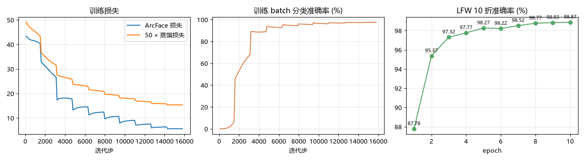
训练曲线。 左：两项损失；中：训练 batch 内分类准确率；右：每个 epoch 结束在 LFW 上的 10 折准确率。左、中两图的台阶不是异常：日志记录的是每轮内的累计平均，换轮时清零重算，所以每轮开头会跳一下。最终模型（最后一个 epoch，而不是 LFW 最高的那个）用 tools/eval_lfw.py --torch-ckpt 按完整流程复测：LFW 98.867% ± 0.657 ，TAR@FAR=10⁻³ 为 96.30%，超过 PDF 要求的 98.5%。
结论 自训练模型在 6000 对里错 67 对，老师 R50 只错 8 对。下图是学生判错的样本，大多是大角度侧脸、墨镜帽子遮挡、年龄跨度大的真难例，老师判错的则基本是标注问题。两者的差距来自数据规模：老师见过约 60 万人，学生只见过 1 万人，网络也小得多。
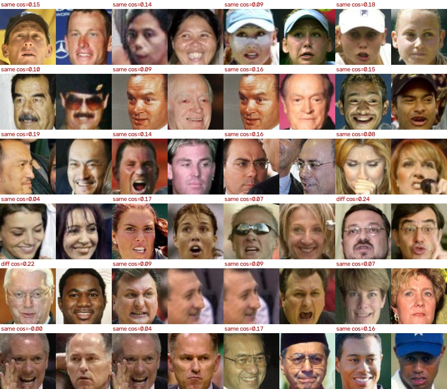
学生模型的前 24 个错误。 same 表示标注为同一人但被判成不同人，diff 相反。例题
例题 1 每轮多少步、要多久 202,599 张图、批大小 128、核显约 150 张/秒，训练 10 轮，每轮多少步？总共大约多久？
每轮步数 = ⌊ 202599 / 128 ⌋ = 1582 每轮时间 ≈ 202599 / 150 ≈ 1351 s ≈ 22.5 min 10 轮 ≈ 3.75 小时 \begin{aligned}
\text{每轮步数}&=\lfloor 202599/128\rfloor=1582\\
\text{每轮时间}&\approx 202599/150\approx 1351\ \text{s}\approx 22.5\ \text{min}\\
\text{10 轮}&\approx\boxed{3.75\ \text{小时}}
\end{aligned} 每轮步数 每轮时间 10 轮 = ⌊ 202599/128 ⌋ = 1582 ≈ 202599/150 ≈ 1351 s ≈ 22.5 min ≈ 3.75 小时 实测每轮约 22 分钟，和估算一致。数据中心级 GPU 的吞吐量比核显高一到两个数量级，同样的训练可以从几小时缩到几十分钟以内。硬件决定了实验迭代的速度，这也是 PDF 里提到 BytePS 分布式训练的原因。
例题 2 为什么蒸馏权重取 50 训练中段，ArcFace 损失约 10，学生和老师特征的余弦约 0.9。λ 取 1 和取 50 时，两项损失分别多大？
蒸馏损失 = 1 − 0.9 = 0.1。λ = 1 时蒸馏项只有 0.1，相比 ArcFace 的 10 可以忽略，等于没蒸馏；λ = 50 时蒸馏项为 5，两项量级相当，学生同时听"标签"和"老师"的话。
λ = 1 : 10 + 0.1 , λ = 50 : 10 + 5 \lambda=1:\ 10+0.1,\qquad \lambda=50:\ 10+\boxed{5} λ = 1 : 10 + 0.1 , λ = 50 : 10 + 5 易错点 加权损失时要看各项的量级，而不是只看公式。ArcFace 的 logit 乘了 s = 64，它的损失天然比余弦距离大两个数量级。
专题七 评测：怎样证明模型"准"10 折交叉验证、ROC / AUC / EER / TAR@FAR、检测 AP、错误分析与 100% 的天花板 一个数字背后是一整套协议。同样一个模型，换一种算法选阈值、换一种对齐方式，LFW 准确率能差出零点几个百分点——在 99% 以上的区间，这已经是"好模型"和"一般模型"的差距。本章讲清楚每个指标怎么算、为什么这样算，以及本项目的实测结果。
知识要点 1 LFW 协议 2 选阈值 3 ROC 与 AUC 4 TAR@FAR 5 EER 6 检测 AP 7 生成质量 FID 实测结果 LFW 结果 错误分析 WIDER FACE 结果 例题 选阈值 TAR@FAR 为什么不能在测试集上调阈值 知识要点
要点 1 LFW 标准协议。 官方 pairs.txt 给出 6000 对图片，分成 10 折，每折 300 对"同一人"+ 300 对"不同人"。评测时轮流用 9 折选阈值、在剩下 1 折上测准确率，10 次取平均。这样阈值从来没"见过"它要测的那部分数据，报告的准确率才可信。
要点 2 怎样选阈值。 把 9 折的 5400 个相似度从小到大排序，阈值只需要在"相邻两个分数的中点"里挑——两个相邻分数之间移动阈值，预测结果不会变。排序后用前缀和一次算出所有候选阈值的准确率，复杂度 O(n log n)，比"从 −1 到 1 每隔 0.001 试一次"更精确也更快（见 facevision/verification.py 的 best_threshold）。
要点 3 ROC 曲线与 AUC。 阈值从高到低扫一遍，每个阈值得到两个数：TPR（同一人被判对的比例，通过率）和 FPR（不同人被误判成同一人的比例，误识率）。以 FPR 为横轴、TPR 为纵轴画出来就是 ROC 曲线；曲线下面积 AUC 越接近 1 越好，它和阈值无关，衡量的是模型"把正负样本分开"的整体能力。
T P R = T P T P + F N , F P R = F P F P + T N , A U C = ∫ 0 1 T P R d ( F P R ) \mathrm{TPR}=\frac{TP}{TP+FN},\qquad \mathrm{FPR}=\frac{FP}{FP+TN},\qquad \mathrm{AUC}=\int_0^1\mathrm{TPR}\,d(\mathrm{FPR}) TPR = TP + FN TP , FPR = FP + TN FP , AUC = ∫ 0 1 TPR d ( FPR ) 要点 4 TAR@FAR：工业界真正看的指标。 准确率把"误识"和"拒识"同等对待，但在刷脸支付里，把陌生人认成你（误识）比让你多刷一次（拒识）严重得多。所以工业界先规定一个很低的误识率 FAR（如万分之一、百万分之一），再看此时的通过率 TAR。LFW 只有 3000 个负样本对，最低只能测到 FAR = 1/3000，所以本项目报告 TAR@FAR=10⁻³。
要点 5 等错误率 EER。 调阈值使误识率 = 拒识率时的错误率，一个数概括 ROC 曲线，越低越好。
要点 6 检测指标：Precision、Recall、AP。 检测框和真实框 IoU ≥ 0.5 才算找到。Precision = 检测出的框里有多少是对的；Recall = 真实的脸有多少被找到了。把检测分数阈值从高到低扫，得到 PR 曲线，曲线下面积就是 AP。WIDER FACE 把脸按大小、遮挡、姿态分成 Easy / Medium / Hard 三档：不在当前档里的脸算"忽略"，检测到也不加分、没检测到也不扣分（facevision/widerface_eval.py 逐行移植了官方评测脚本）。
P r e c i s i o n = T P T P + F P , R e c a l l = T P T P + F N , A P = ∫ 0 1 P ( R ) d R \mathrm{Precision}=\frac{TP}{TP+FP},\qquad \mathrm{Recall}=\frac{TP}{TP+FN},\qquad \mathrm{AP}=\int_0^1 P(R)\,dR Precision = TP + FP TP , Recall = TP + FN TP , AP = ∫ 0 1 P ( R ) d R 要点 7 生成质量指标 FID。 用 Inception 网络分别提取真实图片和生成图片的 2048 维特征，各自拟合成一个高斯分布，计算两个高斯之间的 Fréchet 距离。越小说明生成图片的"整体统计特性"越像真图。详见专题十一。
F I D = ∥ μ r − μ g ∥ 2 + tr ( Σ r + Σ g − 2 ( Σ r Σ g ) 1 / 2 ) \mathrm{FID}=\|\mu_r-\mu_g\|^2+\operatorname{tr}\Bigl(\Sigma_r+\Sigma_g-2(\Sigma_r\Sigma_g)^{1/2}\Bigr) FID = ∥ μ r − μ g ∥ 2 + tr ( Σ r + Σ g − 2 ( Σ r Σ g ) 1/2 ) 实测结果
结果 1 LFW 10 折结果 全流程从原始 250×250 图片开始（不用任何预先对齐好的数据）：SCRFD 检测 → 5 点 Umeyama 对齐 → 特征 → 余弦相似度 → 10 折。
验算 10 折各自的准确率见 outputs/lfw/result_*.json；同一份对齐结果被缓存下来，评测自训练模型、量化模型时只换识别网络，其余完全一致，保证对比公平。
结果 2 错误分析：99.8% 之后还差什么 最终设置下 6000 对里只判错 8 对，其中 8 对是「标注为同一人、模型判为不同人」。把它们全部画出来（下图，每对左右两张是对齐后的人脸，上方是余弦相似度）：
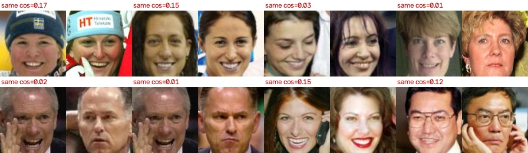
剩下的错误几乎都是数据集本身的问题。 涉及的名字：Cristina Fernandez、Debra Messing、Elisabeth Schumacher、Janica Kostelic、Jim OBrien、Martha Bowen、Surakait Sathirathai。相似度都在 0.2 以下，肉眼看多数明显是两个不同的人（例如 Jim O'Brien 的两对是两位不同的男士）。补边之前还有 1 个错误来自检测选错了脸（Nabil_Shaath_0002，主角的脸被画面边缘切掉，见专题三例题 5），补边修好后准确率从 99.833% 升到 99.850%。
结论 LFW 本身存在少量标注错误（同一个名字下其实是两个不同的人），所以没有任何模型能做到真正的 100%。在这个数据集上，"无限接近 100%"的意思就是：除了标签本身错了的那几对，其余全部判对。想继续区分模型好坏，要换更难的评测集（CFP-FP 侧脸、AgeDB 跨年龄、IJB-C 的 TAR@FAR=10⁻⁶）。
结果 3 WIDER FACE 检测结果 结论 输入从 640 加大到 1280，小脸被放大到锚点能覆盖的范围，Hard 档明显上升；但大脸被放得过大，超出了最大锚点的覆盖范围，Easy / Medium 反而下降。把两个尺度的检测框合在一起再做一次 NMS（多尺度测试），两头兼顾，三档都超过了论文的单尺度结果，代价是检测时间约为 4.5 倍——离线评测和相册整理可以这样做，实时视频则用单尺度。
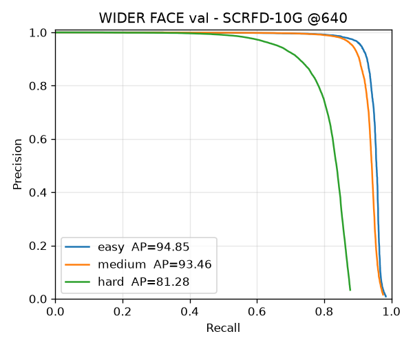
单尺度 640的 PR 曲线。 曲线越靠右上越好；Hard 档包含大量 16 像素以下的小脸，召回率上不去是所有检测器的共同难点。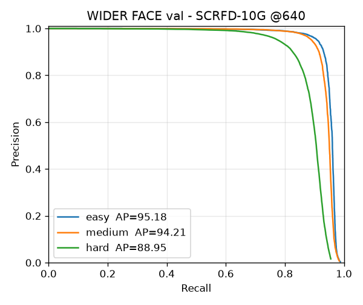
多尺度 640 + 1280的 PR 曲线。 曲线越靠右上越好；Hard 档包含大量 16 像素以下的小脸，召回率上不去是所有检测器的共同难点。例题
例题 1 手算最佳阈值 6 对样本的相似度和标签：0.10(不同)、0.20(不同)、0.35(同)、0.30(不同)、0.60(同)、0.80(同)。求准确率最高的阈值。
排序：0.10 不、0.20 不、0.30 不、0.35 同、0.60 同、0.80 同。阈值放在 0.30 和 0.35 之间，左边全是"不同"、右边全是"同"：
thr = 0.30 + 0.35 2 = 0.325 , 准确率 = 6 6 = 100 % \text{thr}=\frac{0.30+0.35}{2}=\boxed{0.325},\qquad \text{准确率}=\frac66=100\% thr = 2 0.30 + 0.35 = 0.325 , 准确率 = 6 6 = 100% 真实数据里正负样本会有交叠，最优阈值处准确率达不到 100%，但找法一样：只试相邻分数的中点。
例题 2 TAR@FAR=10⁻³ 是什么意思 LFW 有 3000 对不同人的样本。本项目 TAR@FAR=10⁻³ = 99.733%，怎么理解？
FAR = 10⁻³ 允许 3000 × 0.001 = 3 对不同的人被误认成同一人。把阈值调到恰好只有 3 对误认的位置，此时 3000 对同一人里有 99.733%（2992 对）能通过。
允许误认 = 3000 × 10 − 3 = 3 对 , 通过 = 3000 × 99.733 % = 2992 对 \text{允许误认}=3000\times10^{-3}=3\ \text{对},\qquad \text{通过}=3000\times99.733\%=\boxed{2992\ \text{对}} 允许误认 = 3000 × 1 0 − 3 = 3 对 , 通过 = 3000 × 99.733% = 2992 对 例题 3 为什么不能在测试集上调阈值 如果直接在全部 6000 对上找最佳阈值，再在同样的 6000 对上算准确率，会怎样？
阈值"看过"了答案，准确率会偏高（尤其是样本少的时候）。这就像考前拿到了考卷再复习。10 折交叉验证保证每一折的阈值都只由另外 9 折决定。同理，本项目在训练过程中每个 epoch 都会测一次 LFW 画曲线，但最终报告的是最后一个 epoch 的模型，而不是"LFW 最高的那个 epoch"——按测试集挑模型也是一种作弊。
面试答法 评测要严格隔离"选择"和"测试"：阈值、超参数、模型挑选都只能用训练/验证数据，测试集只在最后用一次。
专题八 模型优化与部署BN 融合、INT8 量化、剪枝、ONNX 与推理引擎 训练出好模型只是一半，另一半是让它在手机、普通电脑上跑得快、占得少。本章把"推理引擎（ByteNN、TensorRT、MNN）"里最常用的几种加速手段各实现一遍，并实测大小、速度、精度三方面的变化。
知识要点 1 ONNX 2 层融合 3 量化原理 4 动态与静态量化 5 剪枝 6 蒸馏 7 移动端部署 实测 对比表 例题 BN 融合手算 量化手算 知识要点
要点 1 ONNX：模型的"通用插头"。 PyTorch 模型导出成 ONNX（一张由 Conv、Add、Relu 等标准算子组成的计算图 + 权重），之后 ONNX Runtime（电脑）、TensorRT（NVIDIA）、MNN / NCNN / ByteNN（手机）都能读。导出后第一件事是和 PyTorch 输出逐元素对拍。
要点 2 层融合：Conv + BN 合二为一。 推理时 BN 是一个固定的逐通道线性变换，可以直接并进前面卷积的权重和偏置，少一次读写内存，结果完全不变：
B N ( W x + b ) = W ⋅ k ⏟ W ′ x + ( b − μ ) k + β ⏟ b ′ , k = γ σ 2 + ε \mathrm{BN}(Wx+b)=\underbrace{W\cdot k}_{W'}\,x+\underbrace{(b-\mu)\,k+\beta}_{b'},\qquad k=\frac{\gamma}{\sqrt{\sigma^2+\varepsilon}} BN ( W x + b ) = W ′ W ⋅ k x + b ′ ( b − μ ) k + β , k = σ 2 + ε γ facevision/deploy.py 的 fuse_model 手写了这个变换，单元测试验证融合前后输出一致。ONNX Runtime 在加载模型时也会自动做这件事（图优化级别 ORT_ENABLE_ALL）。
要点 3 量化：用 8 位整数代替 32 位浮点。 把一层的浮点数范围 [min, max] 均匀切成 256 份，每个浮点数用最近的那一格的编号（−128～127）表示：
scale = max − min 255 , q = round ( x scale ) + z p , x ^ = ( q − z p ) ⋅ scale \text{scale}=\frac{\max-\min}{255},\qquad q=\operatorname{round}\!\Bigl(\frac{x}{\text{scale}}\Bigr)+zp,\qquad \hat x=(q-zp)\cdot\text{scale} scale = 255 max − min , q = round ( scale x ) + z p , x ^ = ( q − z p ) ⋅ scale 模型小 4 倍；CPU 上 INT8 乘加指令（VNNI）一次能算的数是 FP32 的 4 倍。误差最多半格，神经网络对这种小扰动很鲁棒。权重"逐通道"量化（每个输出通道一个 scale）比整层一个 scale 精确得多。
要点 4 动态量化 vs 静态量化。 动态量化：权重提前量化好，激活值的范围在运行时每次现算——简单、不需要数据，但 PyTorch 只支持全连接层和 RNN，对卷积网络几乎没加速。静态量化：先用几百张真实图片（校准集）跑一遍，统计每层激活值的范围并固定下来，卷积也能全部用 INT8 算。本项目用 512 张 CelebA 人脸校准，范围取 99.99 百分位（去掉极少数离群值，否则一个异常大的值会把 scale 撑大、其余值精度变差）。
要点 5 剪枝。 把绝对值最小的一部分权重置 0。非结构化剪枝（单个权重）可以剪掉很大比例而精度几乎不变，说明网络冗余很大：本项目全局剪掉 70% 的权重、不做微调，LFW 只从 98.867% 降到 98.633%（全局按绝对值排序时，全连接层被剪掉 87%，卷积层 50%）。此时特征本身已经变了（与原模型的余弦约 0.89），但 LFW 只看两张脸之间的相对距离，所以影响不大。不过稀疏矩阵在普通硬件上仍按稠密计算，大小和速度都不变。要真正提速需要结构化剪枝（整个卷积核、整个通道一起删）后重新微调。
要点 6 蒸馏也是压缩。 专题六的学生 ResNet18 就是用 R50 老师蒸馏出来的：ONNX 单张延迟 12.5 ms，老师是 48.2 ms，快了约 3.9 倍，代价是 LFW 少了约 1 个百分点。剪枝、量化、蒸馏三者可以叠加使用。
要点 7 移动端部署的一般流程。 PyTorch 训练 → 导出 ONNX → 用推理引擎（MNN / NCNN / ByteNN / Core ML / TFLite）转换并量化 → 端侧 SDK 封装（相机采集 → 检测 → 跟踪 → 特效渲染，用 GPU/NPU 加速）。实时特效通常每隔几帧才做一次完整检测，中间帧只跟踪关键点，这是满足 30 FPS 的关键。
实测
实测 大小 / 速度 / 精度对比 延迟为 batch=1、CPU 4 线程、112×112 输入的单次前向（不含翻转），多次运行取平均。
例题
例题 1 BN 融合手算 一个 1×1 卷积权重 W = 2、偏置 b = 0，后接 BN：γ = 1.5，β = 0.2，μ = 1，σ² = 4（ε 忽略）。求融合后的 W′、b′，并用 x = 3 验算。
k = 1.5 / 4 = 0.75 , W ′ = 2 × 0.75 = 1.5 , b ′ = ( 0 − 1 ) × 0.75 + 0.2 = − 0.55 融合前: 1.5 × 2 × 3 − 1 2 + 0.2 = 3.95 , 融合后: 1.5 × 3 − 0.55 = 3.95 \begin{aligned}
k&=1.5/\sqrt4=0.75,\qquad W'=2\times0.75=\boxed{1.5},\qquad b'=(0-1)\times0.75+0.2=\boxed{-0.55}\\
\text{融合前: }&1.5\times\frac{2\times3-1}{2}+0.2=3.95,\qquad \text{融合后: }1.5\times3-0.55=3.95
\end{aligned} k 融合前 : = 1.5/ 4 = 0.75 , W ′ = 2 × 0.75 = 1.5 , b ′ = ( 0 − 1 ) × 0.75 + 0.2 = − 0.55 1.5 × 2 2 × 3 − 1 + 0.2 = 3.95 , 融合后 : 1.5 × 3 − 0.55 = 3.95 例题 2 INT8 量化手算 某层激活值范围 [−2, 6]，用非对称 INT8 量化。求 scale、零点 zp，以及 x = 1.0 量化再反量化后的值。
scale = 6 − ( − 2 ) 255 = 0.031373 z p = − 128 − round ( − 2 0.031373 ) = − 128 + 64 = − 64 q = round ( 1.0 / 0.031373 ) + ( − 64 ) = 32 − 64 = − 32 x ^ = ( − 32 + 64 ) × 0.031373 = 1.0039 误差 0.0039 < 1 2 scale \begin{aligned}
\text{scale}&=\frac{6-(-2)}{255}=0.031373\\
zp&=-128-\operatorname{round}\!\Bigl(\frac{-2}{0.031373}\Bigr)=-128+64=-64\\
q&=\operatorname{round}(1.0/0.031373)+(-64)=32-64=-32\\
\hat x&=(-32+64)\times0.031373=\boxed{1.0039}\qquad\text{误差 }0.0039<\tfrac12\text{scale}
\end{aligned} scale z p q x ^ = 255 6 − ( − 2 ) = 0.031373 = − 128 − round ( 0.031373 − 2 ) = − 128 + 64 = − 64 = round ( 1.0/0.031373 ) + ( − 64 ) = 32 − 64 = − 32 = ( − 32 + 64 ) × 0.031373 = 1.0039 误差 0.0039 < 2 1 scale
专题九 实时特效：贴纸、美颜、美妆与卡通头像478 点网格、相似/透视变换、导向滤波、局部变形、One Euro 特效模块把"人脸在哪、长什么样、做什么表情"变成画面上的效果：AR 贴纸跟着头转、磨皮美白瘦脸大眼、口红腮红眼线、再用表情系数驱动一个卡通头像。所有特效都建立在 MediaPipe 的 478 点 3D 网格上，每帧只检测一次，纯 CPU 上 640×480 开全套 7 个美颜美妆特效约 14 ms/帧（70 FPS）。代码在 facevision/mesh.py 和 facevision/effects/，演示脚本 tools/realtime_demo.py。
知识要点 1 478 点网格 2 脸坐标系 3 贴纸变换 4 Alpha 合成 5 皮肤掩码 6 保边磨皮 7 美白曲线 8 瘦脸大眼 9 口红腮红 10 One Euro 11 卡通头像 12 顺序与性能 代码精读 mesh.py stickers.py beauty.py makeup.py filters + pipeline 例题 相似变换与合成 导向滤波 局部平移 One Euro 知识要点
要点 1 478 点网格、表情系数与头部姿态。 专题四的 106 点只描了五官轮廓，做美颜美妆不够密。MediaPipe Face Landmarker 一次给三样东西：① 478 个 3D 点（468 个网格点 + 每只眼 5 个虹膜点），x、y 是归一化的图像坐标，z 是相对深度（越小越靠近相机，尺度和 x 相同，所以 z 也乘图像宽度换成像素）；② 52 个 blendshape 表情系数（苹果 ARKit 的定义，每个 0～1，例如 jawOpen 张嘴、eyeBlinkLeft 左眼闭合、mouthSmileLeft 左嘴角上扬）；③ 一个 4×4 面部变换矩阵，把"标准 3D 人脸模型"摆到相机坐标系里，左上 3×3 是旋转 R。VIDEO 模式要求时间戳递增，它会用上一帧的点直接裁出人脸区域，跳过检测，所以比逐帧独立的 IMAGE 模式更快更稳。从 R 读姿态：R 的第 3 列 f 是"脸的正前方"，第 1 列 a 是"左眼到右眼"的方向（MediaPipe 相机坐标 x 右、y 上、z 指向观众）：
yaw = atan2 ( f x , f z ) , pitch = arcsin ( f y ) , roll = atan2 ( − a y , a x ) \text{yaw}=\operatorname{atan2}(f_x,\,f_z),\qquad
\text{pitch}=\arcsin(f_y),\qquad
\text{roll}=\operatorname{atan2}(-a_y,\,a_x) yaw = atan2 ( f x , f z ) , pitch = arcsin ( f y ) , roll = atan2 ( − a y , a x ) 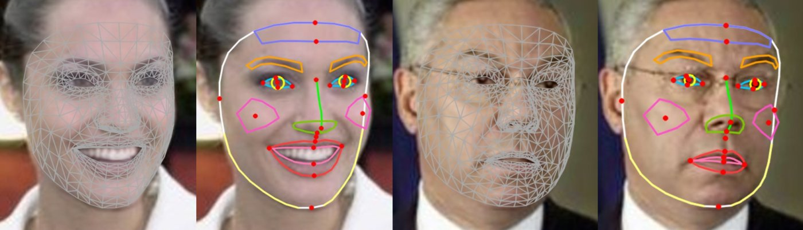
478 点网格与部位分组。 左：全部三角面片；右：程序里用到的部位（脸轮廓、内外唇、眼睛与虹膜、眉毛、鼻子、脸颊、额头）和常用单点（红点）。每组下标都这样画出来逐一核对过。易错点 MediaPipe 官方的 LEFT_EYE 指"被拍者自己的左眼"，在画面里是右边。本项目统一用"图像中的左/右"（和 106 点的 LMK106 一致），所以 MESH["left_eye"] 是画面左边那只眼（下标 33、133……），对应的表情系数却是 eyeBlinkRight 。
要点 2 以脸为尺子：脸坐标系。 贴纸、腮红都要"跟着脸走"：脸变大贴纸变大，歪头贴纸跟着歪。做法是给每张脸建一个局部坐标系：原点 O 取两眼中心的中点，三根轴 X（水平）、Y（向下）、Z（向脑后）的方向取自姿态矩阵 R（换到图像坐标要把 y、z 取反），长度都等于两眼距离 IOD。脸上任意一点都写成
P = O + u X + v Y + w Z P = O + u\,X + v\,Y + w\,Z P = O + u X + v Y + w Z (u, v, w) 叫这个点的"脸坐标"，不随平移、缩放、转头而变。例如墨镜中心定在 (0, 0.05, −0.25)：两眼中点略低一点、往镜头方向凸出 0.25 个 IOD；礼帽定在额头顶点上方。
易错点 第一版用"额头顶到下巴"的向量当 Y 轴，结果一张嘴下巴往下动，帽子就跟着上下跳。R 是 MediaPipe 用全部网格点拟合出的刚体旋转，不受表情影响，稳定得多。
要点 3 贴纸锚定：相似变换与透视变换。 贴纸是一张 RGBA 图片，要把它的 4 个角映射到画面上。先在脸坐标里规定贴纸放在哪、多宽，再用上面的公式把 4 个角变到图像上，得到 4 个目标点，最后求"贴纸 4 角 → 目标 4 点"的变换矩阵。两种模式：
2D 相似变换 (4 个自由度, 2 对点确定) : [ x ′ y ′ ] = s [ cos θ − sin θ sin θ cos θ ] [ x y ] + [ t x t y ] \text{2D 相似变换 (4 个自由度, 2 对点确定)}:\quad
\begin{bmatrix}x'\\ y'\end{bmatrix}=
s\begin{bmatrix}\cos\theta & -\sin\theta\\ \sin\theta & \cos\theta\end{bmatrix}
\begin{bmatrix}x\\ y\end{bmatrix}+\begin{bmatrix}t_x\\ t_y\end{bmatrix} 2D 相似变换 (4 个自由度 , 2 对点确定 ) : [ x ′ y ′ ] = s [ cos θ sin θ − sin θ cos θ ] [ x y ] + [ t x t y ] 2D 模式只用两眼连线：s = 图像上两眼距离 / 贴纸上对应两点距离，θ = 两眼连线倾角（就是 roll）。它能跟随平移、缩放、歪头，但人转头时贴纸不会变窄。3D 模式用带深度的脸坐标系：转头时 X 轴的图像投影变短（约乘 cos yaw），贴纸自然被压扁；再按针孔相机做"近大远小"修正（c 为画面中心，f 为焦距，近似取图像宽，Δz 为相对两眼中点的深度差）：
x ′ = c + ( x − c ) f f + Δ z , [ x ′ y ′ 1 ] ∝ H [ x y 1 ] ( H 为 3 × 3 单应矩阵, 8 个自由度, 4 对点确定 ) x' = c + (x-c)\,\frac{f}{f+\Delta z},\qquad
\begin{bmatrix}x'\\ y'\\ 1\end{bmatrix}\propto H\begin{bmatrix}x\\ y\\ 1\end{bmatrix}\quad(H\ \text{为}\ 3\times 3\ \text{单应矩阵, 8 个自由度, 4 对点确定}) x ′ = c + ( x − c ) f + Δ z f , x ′ y ′ 1 ∝ H x y 1 ( H 为 3 × 3 单应矩阵 , 8 个自由度 , 4 对点确定 ) 三种变换的关系：相似（4 自由度，2 对点）⊂ 仿射（6 自由度，3 对点，平行线保持平行）⊂ 透视（8 自由度，4 对点，平行线可以相交）。OpenCV 对应 getAffineTransform / getPerspectiveTransform 和 warpAffine / warpPerspective。贴纸要缩得很小时先从图像金字塔里挑一层接近目标大小的再变换，否则会有锯齿和闪烁。
贴纸跟随 roll、缩放和 yaw。 上两行：把同一张照片旋转 −25°～30°、缩放 0.6～1.0 倍，2D 和 3D 两种模式都贴得住。第三行：转头的真人照片，3D 模式下墨镜随 yaw 变窄并带一点梯形，左侧几乎全侧脸的人也贴在了脸上；多张脸各算各的变换。类比 贴纸像一张印在透明胶片上的面具。2D 模式是把胶片平贴在屏幕上转一转、缩一缩；3D 模式是把胶片真的"戴"在脸前面，头一转从侧面看它就变窄了。
要点 4 Alpha 合成与"预乘"。 贴纸每个像素除了颜色 F 还有不透明度 α（0 全透明，1 不透明）。把它盖到背景 B 上的"over"运算是
out = α F + ( 1 − α ) B ⟹ out = F ′ + ( 1 − α ) B , F ′ = α F ( 预乘 alpha ) \text{out}=\alpha F+(1-\alpha)B
\qquad\Longrightarrow\qquad
\text{out}=F'+(1-\alpha)B,\quad F'=\alpha F\ \ (\text{预乘 alpha}) out = α F + ( 1 − α ) B ⟹ out = F ′ + ( 1 − α ) B , F ′ = α F ( 预乘 alpha ) 为什么要预乘？warp 时要做双线性插值。透明像素的 RGB 通常是黑色 (0,0,0)，直接插值，贴纸边缘的颜色会被"拉黑"，出现一圈黑边。先把颜色乘上 α 再插值，透明像素贡献的就是真正的 0，边缘干净。
要点 5 皮肤掩码。 磨皮美白只该作用在皮肤上。掩码 = 脸轮廓多边形（大半径高斯羽化，和头发、背景之间柔和过渡）乘以"1 − 五官掩码"（眼睛、眉毛、嘴唇多边形各向外扩 0.08 IOD，小半径羽化，保证五官内部严格为 0）：
M = ( G 0.12 IOD ∗ 脸轮廓 ) ⋅ ( 1 − G 0.04 IOD ∗ 五官 ) ∈ [ 0 , 1 ] M = \left(G_{0.12\,\text{IOD}} * \text{脸轮廓}\right)\cdot\left(1-G_{0.04\,\text{IOD}} * \text{五官}\right)\in[0,1] M = ( G 0.12 IOD ∗ 脸轮廓 ) ⋅ ( 1 − G 0.04 IOD ∗ 五官 ) ∈ [ 0 , 1 ] 易错点 第一版把整个掩码用同一个大半径模糊，眼睛中心的掩码值还有 0.28，磨皮强度 0.7 时眼睛也被抹了 20%。两种区域用两个不同的模糊半径才能"边缘柔和、五官清晰"同时做到（单元测试要求眼睛、嘴巴中心 < 0.05）。
要点 6 保边磨皮：双边滤波与导向滤波。 普通高斯模糊把所有边缘一起抹掉，脸会糊成一团。"保边滤波"只抹平小起伏（痘印、毛孔、细纹），保留大边缘（眉毛、鼻翼、嘴唇轮廓）。双边滤波给每个邻居的权重 = 空间高斯 × 颜色高斯，颜色差太大（跨过边缘）的邻居权重接近 0。导向滤波（He 等，2010）假设输出在每个小窗口 ω 里是引导图 I 的线性函数，自引导（I = 输入 p）时系数有闭式解：
w i j = exp ( − ∥ i − j ∥ 2 2 σ s 2 − ∣ I i − I j ∣ 2 2 σ r 2 ) , a ω = var ω ( p ) var ω ( p ) + ε , b ω = ( 1 − a ω ) p ˉ ω , q = a ˉ p + b ˉ w_{ij}=\exp\!\left(-\frac{\|i-j\|^2}{2\sigma_s^2}-\frac{|I_i-I_j|^2}{2\sigma_r^2}\right),\qquad
a_\omega=\frac{\operatorname{var}_\omega(p)}{\operatorname{var}_\omega(p)+\varepsilon},\quad
b_\omega=(1-a_\omega)\,\bar p_\omega,\quad
q=\bar a\,p+\bar b w ij = exp ( − 2 σ s 2 ∥ i − j ∥ 2 − 2 σ r 2 ∣ I i − I j ∣ 2 ) , a ω = var ω ( p ) + ε var ω ( p ) , b ω = ( 1 − a ω ) p ˉ ω , q = a ˉ p + b ˉ 平坦区域方差远小于 ε，a ≈ 0，输出 ≈ 窗口均值（被抹平）；边缘处方差远大于 ε，a ≈ 1，输出 ≈ 原图（被保留）。ε 就是"多大的起伏算瑕疵"的阈值，本项目 ε = 0.03²（像素归一化到 0～1），窗口半径 0.1 IOD。导向滤波只用盒式滤波（窗口均值），复杂度与半径无关；再在缩小一半的图上算 a、b（快速导向滤波），速度快 4 倍。最后按 strength × 皮肤掩码与原图混合。
易错点 OpenCV 自带的 cv2.ximgproc.guidedFilter 用三通道彩色引导时要对每个像素解 3×3 线性方程。640×480 画面里 207×181 的人脸区域上它要 2.3 ms，手写的逐通道自引导 1.3 ms，再改成半分辨率算 a、b 只要 0.37 ms，和全分辨率结果平均只差 0.17 个灰度级。人脸越大差距越明显：放大 3 倍的 LFW 照片上彩色引导版要几十毫秒。
要点 7 美白：LAB 空间的亮度曲线。 LAB 把颜色拆成亮度 L 和两个色度 a（绿—红）、b（蓝—黄）。只抬 L 就能变亮而不偏色；在 RGB 里三个通道一起加，肤色会发灰。用对数曲线（β = 1 + 4 × strength）：
L ′ = 255 ⋅ ln ( 1 + ( β − 1 ) L / 255 ) ln β L'=255\cdot\frac{\ln\!\left(1+(\beta-1)\,L/255\right)}{\ln\beta} L ′ = 255 ⋅ ln β ln ( 1 + ( β − 1 ) L /255 ) 它把 0 映射到 0、255 映射到 255，中间调被抬高。strength = 0.3（β = 2.2）时 L = 64、128、200 分别变成 85、152、215。256 个输入值的结果事先算好存成查找表（LUT），每个像素查表即可。再把 a、b 往中性值 128 收 4.5%，减少泛红泛黄，最后按皮肤掩码混合。
注意 美白本质上是改变肤色，对深肤色的人尤其不自然。演示里强度默认只有 0.3，产品里应当默认关闭、由用户自己决定。
要点 8 局部变形：瘦脸与大眼（Gustafsson 1993）。 两种变形都用"反向映射"：对输出图的每个像素 x，算出它该从原图哪个位置 u 取颜色，再用 cv2.remap 插值。（正向映射"把原图像素搬到新位置"会留下没被搬到的空洞。）局部平移（瘦脸）：圆心 c、半径 r，把 c 处的内容往 m 拖；局部缩放（大眼）：眼睛中心 c、半径 r，强度 a：
平移 : u = x − s ( r 2 − ∥ x − c ∥ 2 r 2 − ∥ x − c ∥ 2 + ∥ m − c ∥ 2 ) 2 ( m − c ) , ∥ x − c ∥ < r 缩放 : u = c + ( x − c ) ( 1 − a ( ∥ x − c ∥ r − 1 ) 2 ) , ∥ x − c ∥ < r \begin{aligned}
\text{平移}:\quad u&=x-s\left(\frac{r^2-\|x-c\|^2}{r^2-\|x-c\|^2+\|m-c\|^2}\right)^{2}(m-c), & \|x-c\|&<r\\
\text{缩放}:\quad u&=c+(x-c)\left(1-a\left(\frac{\|x-c\|}{r}-1\right)^{2}\right), & \|x-c\|&<r
\end{aligned} 平移 : u 缩放 : u = x − s ( r 2 − ∥ x − c ∥ 2 + ∥ m − c ∥ 2 r 2 − ∥ x − c ∥ 2 ) 2 ( m − c ) , = c + ( x − c ) ( 1 − a ( r ∥ x − c ∥ − 1 ) 2 ) , ∥ x − c ∥ ∥ x − c ∥ < r < r 圆外 u = x 不动，圆周上位移连续地降到 0，所以没有接缝。缩放公式在圆心处系数为 1 − a：从更靠近中心的地方取像素，等于放大 1/(1 − a) 倍。瘦脸在每侧下颌线上取 3 个点，都往"鼻尖与下巴的中点"拖，半径 0.45 IOD；大眼半径 1.1 倍眼宽，a = 0.4 × strength。所有变形先叠加到同一张坐标图上，最后只 remap 一次（只插值一次，画面更清楚），remap 的范围取所有圆的外接矩形。
易错点 |m − c| 远小于 r 时，平移公式会让整个圆几乎整体平移，然后在圆周附近不到 1 像素宽的一圈里突然降到 0，画面上出现"台阶"（见例题 3）。所以拖动距离固定取 |m − c| = r，让衰减平滑，再用系数 s（strength）把位移整体缩小；整体缩小位移场不会产生折叠。另一个坑：remap 的范围比圆小，圆边上会留下断层。
要点 9 口红、腮红、眼线。 口红如果直接涂成纯色，唇纹和高光全没了，像贴了一块塑料。在 LAB 里换色：亮度保留原来的起伏（L − 均值），只把整体亮度往口红色挪一半；色度直接换成口红色，只保留 30% 原来的起伏。掩码 = 外唇轮廓 − 内唇轮廓（张嘴时不会涂到牙齿），再轻微羽化。
L ′ = L + 0.5 ( L t − L ˉ ) , a ′ = a t + 0.3 ( a − a ˉ ) , b ′ = b t + 0.3 ( b − b ˉ ) L'=L+0.5\,(L_{t}-\bar L),\qquad a'=a_{t}+0.3\,(a-\bar a),\qquad b'=b_{t}+0.3\,(b-\bar b) L ′ = L + 0.5 ( L t − L ˉ ) , a ′ = a t + 0.3 ( a − a ˉ ) , b ′ = b t + 0.3 ( b − b ˉ ) 腮红是脸颊中心的一个二维高斯"光斑"。矩阵 A 的两列是脸坐标系 X、Y 轴的图像投影乘腮红半径，所以光斑是一个随歪头旋转、随转头压扁的椭圆；再乘皮肤掩码，侧脸时不会涂到背景上：
w ( p ) = exp ( − 1 2 ∥ A − 1 ( p − c ) ∥ 2 ) , out = ( 1 − α ) 原图 + α 腮红色 , α = 0.45 s w ( p ) M ( p ) w(p)=\exp\!\left(-\tfrac12\left\|A^{-1}(p-c)\right\|^2\right),\qquad
\text{out}=(1-\alpha)\,\text{原图}+\alpha\,\text{腮红色},\quad \alpha=0.45\,s\,w(p)\,M(p) w ( p ) = exp ( − 2 1 A − 1 ( p − c ) 2 ) , out = ( 1 − α ) 原图 + α 腮红色 , α = 0.45 s w ( p ) M ( p ) 眼线是沿上眼睑 9 个点画一条抗锯齿粗线（0.022 IOD），在外眼角沿"眼睑方向 + 稍微向上"拉出 0.12 IOD 的眼尾。
美颜与美妆特写（LFW 照片放大 3 倍）。 从左到右：原图、磨皮、美白、瘦脸 + 大眼、口红 + 腮红 + 眼线、全部。磨皮后眉眼和嘴唇依然清晰，口红停在嘴唇上、没有涂到牙齿。要点 10 One Euro 滤波：视频去抖。 关键点逐帧独立预测，人不动时相邻两帧也会差 1～2 像素，贴纸和口红就会"抖"。指数滑动平均（EMA）的系数 α 小则平滑但跟不上，α 大则跟得上但抖。One Euro 滤波（Casiez 等，CHI 2012）让 α 随速度自适应：静止时截止频率低、强平滑；快速运动时截止频率高、弱平滑。速度先除以 IOD，参数就和分辨率、脸大小无关：
x ^ t = α x t + ( 1 − α ) x ^ t − 1 , α = 1 1 + τ / Δ t , τ = 1 2 π f c , f c = f min + β ∣ x ^ ˙ ∣ IOD \hat x_t=\alpha\,x_t+(1-\alpha)\,\hat x_{t-1},\qquad
\alpha=\frac{1}{1+\tau/\Delta t},\qquad
\tau=\frac{1}{2\pi f_c},\qquad
f_c=f_{\min}+\beta\,\frac{|\dot{\hat x}|}{\text{IOD}} x ^ t = α x t + ( 1 − α ) x ^ t − 1 , α = 1 + τ /Δ t 1 , τ = 2 π f c 1 , f c = f m i n + β IOD ∣ x ^ ˙ ∣ 本项目 f_min = 1 Hz、β = 2。在演示视频上实测：关键点抖动（二阶差分 |x_{t+1} − 2x_t + x_{t−1}| 的均值）从 0.020 降到 0.013 IOD/帧，少了 36%；平滑后与原始点的平均偏差 0.045 IOD（约 3 像素）。旋转矩阵 R 逐元素滤波后不再严格正交，用 SVD 投影回最近的旋转矩阵 R = UVᵀ。
口诀 先令 β = 0，调 f_min 直到静止不抖；再加大 β，直到运动不拖。
要点 11 表情驱动的卡通头像。 3D 动画里角色的脸 = 中性脸 + Σ 系数 × 动作形变，只要"系数"对齐，就能把真人的表情迁移到任何角色上（苹果的 Animoji 就是这样做的）。本项目不用 3D 模型，直接用 OpenCV 画一个矢量卡通脸，把系数映射成绘制参数（Right 后缀对应画面左边）：
眼睛张开度 = clip ( 1 − 1.15 eyeBlink + 0.4 eyeWide , 0 , 1.3 ) 嘴唇张开 = 1.2 jawOpen + 0.4 mouthUpperUp ‾ + 0.3 mouthLowerDown ‾ 嘴角上扬 = mouthSmile − mouthFrown \begin{aligned}
\text{眼睛张开度}&=\operatorname{clip}\left(1-1.15\,\text{eyeBlink}+0.4\,\text{eyeWide},\;0,\;1.3\right)\\
\text{嘴唇张开}&=1.2\,\text{jawOpen}+0.4\,\overline{\text{mouthUpperUp}}+0.3\,\overline{\text{mouthLowerDown}}\\
\text{嘴角上扬}&=\text{mouthSmile}-\text{mouthFrown}
\end{aligned} 眼睛张开度 嘴唇张开 嘴角上扬 = clip ( 1 − 1.15 eyeBlink + 0.4 eyeWide , 0 , 1.3 ) = 1.2 jawOpen + 0.4 mouthUpperUp + 0.3 mouthLowerDown = mouthSmile − mouthFrown yaw、pitch 让五官整体平移（假 3D），roll 让整张图绕头部中心旋转。先画 2 倍大再缩小，等于免费的抗锯齿。
表情驱动卡通头像（演示视频截图）。 右侧面板左上角的数值条就是驱动它的 blendshape 系数。只看 jawOpen 会漏掉"咬着牙露齿笑"，所以嘴唇张开还加上了 mouthUpperUp 和 mouthLowerDown。要点 12 特效顺序与实测性能。 顺序是固定的：先做逐像素的颜色处理（磨皮、美白、口红、腮红、眼线，它们用关键点算掩码，必须在几何变形之前），再做几何变形（瘦脸、大眼，已经画好的妆跟着一起变形，不会错位），最后贴贴纸、画网格（盖在最上层），卡通头像拼在右边。皮肤掩码每张脸每帧只算一次，几个特效共用。下表在 Intel Core Ultra 5 225H 上纯 CPU 实测（tools/benchmark_effects.py，每种分辨率 90 帧取中位数；1280×720 是把 960×540 的演示视频放大得到的，人脸像素更多；测量时机器上还有别的后台任务，CPU 占用约 30%～50%）：
端到端只算"检测 + 特效"，不含读摄像头、显示和写视频。贴纸和口红只处理一小块 ROI，几乎不花时间；真正贵的是 MediaPipe 本身和要处理整张脸的磨皮、美白，它们的耗时和人脸像素数成正比，所以 720p 下全套美颜刚好卡在 30 FPS。
易错点 第一次测速时数字忽高忽低，同一个检测有时 7 ms、有时 24 ms。排查发现是 Windows 11 的节能策略：没有前台窗口的命令行程序跑大约 2 秒后会被当成"后台任务"，调度到能效核并降频，sleep 也恢复不了。开着窗口的实时演示不受影响，所以测速脚本先用 SetProcessInformation 只对自己这个进程关掉节流（进程退出即失效，不改系统设置），否则所有数字都会慢 3 倍左右。
全部特效总览。 每行一张 LFW 照片，每列一个特效：墨镜、礼帽、猫耳、胡子、磨皮、美白、瘦脸 + 大眼、口红、腮红 + 眼线、全套美颜、网格、卡通头像。最后一行有两张脸，每张脸各自贴。演示视频取自美国 NIOSH 的公有领域采访视频（来源见 assets/demo/SOURCE.md），处理结果在 outputs/effects/。代码精读
代码 1 facevision/mesh.py：一次调用拿到网格、表情和姿态 封装的工作只有两件：把 BGR 转成 RGB 喂给 MediaPipe，把它返回的归一化坐标、表情列表、矩阵整理成 numpy。
if self.mode == "video":
timestamp_ms = max(int(timestamp_ms), self._last_ts + 1) # 必须严格递增
res = self.landmarker.detect_for_video(mp_img, timestamp_ms)
else :
res = self.landmarker.detect(mp_img)
for i, lms in enumerate(res.face_landmarks):
# 归一化坐标 [0,1] -> 像素坐标; z 和 x 同尺度, 所以也乘图像宽度
pts = np.array([[p.x * w, p.y * h, p.z * w] for p in lms], dtype=np.float32)
bs = {c.category_name: float(c.score) for c in res.face_blendshapes[i]}
M = np.asarray(res.facial_transformation_matrixes[i], dtype=np.float32)
yaw, pitch, roll = pose_from_matrix(M)pose_from_matrix 就是知识要点 1 的三个公式：f = R[:, 2]、a = R[:, 0]，yaw = atan2(f[0], f[2])。验算：Colin Powell 的照片从矩阵算出 roll = 3.5°，用两眼连线直接算是 3.3°，对得上。
代码 2 facevision/effects/stickers.py：4 个角 → 变换矩阵 → 合成 O, X, Y, Z = face_frame(face) # 脸坐标系, 三根轴长度都是 1 个 IOD
B = _base_point(face, sticker.spec.base, O) # 锚点: 两眼中点 / 额头顶 / 人中
P = face_to_image(sticker.corners_uvw(), B, X, Y, Z) # 贴纸 4 个角 -> 3D 像素坐标 (4, 3)
xy = P[:, :2]
if mode == "3d":
dz = P[:, 2] - O[2]
xy = c + (xy - c) * (f / (f + dz))[:, None ] # 近大远小
...
H = cv2.getPerspectiveTransform(src, dst_roi) # 4 对点 -> 3x3 单应矩阵
warped = cv2.warpPerspective(src_img, H, (x1 - x0, y1 - y0), flags=cv2.INTER_LINEAR)
img[y0:y1, x0:x1] = alpha_composite_premul(img[y0:y1, x0:x1], warped)只 warp 到贴纸覆盖的那块 ROI（dst_roi 是减去 ROI 左上角后的坐标），一张贴纸 0.2～1 ms。贴纸素材本身也是代码画的（PIL 在 4 倍画布上画再缩小，make_sticker_assets()），存在 assets/stickers/。
代码 3 facevision/effects/beauty.py：导向滤波与局部变形 手写的自引导导向滤波，和公式一一对应：
box = lambda x: cv2.boxFilter(x, -1, (2 * rs + 1, 2 * rs + 1)) # 窗口均值
mean = box(small)
var = box(small * small) - mean * mean
a = var / (var + eps)
b = (1.0 - a) * mean
mean_a, mean_b = box(a), box(b)
mean_a = cv2.resize(mean_a, (w, h)) # 在半分辨率上算 a、b, 放大回来
mean_b = cv2.resize(mean_b, (w, h))
return mean_a * p + mean_b局部平移直接改"坐标图"（存的是每个输出像素去原图哪里取色），最后统一 remap：
d2 = dx * dx + dy * dy # |x - c|^2
ratio[inside] = ((r2 - d2[inside]) / (r2 - d2[inside] + mc2)) ** 2
map_x -= strength * ratio * (mx - cx)
map_y -= strength * ratio * (my - cy)
...
img[y0:y1, x0:x1] = cv2.remap(img, map_x, map_y, cv2.INTER_LINEAR, borderMode=cv2.BORDER_REPLICATE)代码 4 facevision/effects/makeup.py：LAB 口红 lab = cv2.cvtColor(crop, cv2.COLOR_BGR2LAB).astype(np.float32)
target = cv2.cvtColor(np.uint8([[color]]), cv2.COLOR_BGR2LAB)[0, 0].astype(np.float32)
w = m / m.sum()
mean = (lab * w[..., None ]).sum((0, 1)) # 嘴唇区域的加权平均 L, a, b
new[..., 0] = lab[..., 0] + 0.5 * (target[0] - mean[0]) # 亮度: 保留起伏, 整体挪一半
new[..., 1] = target[1] + 0.3 * (lab[..., 1] - mean[1]) # 色度: 换成口红色
new[..., 2] = target[2] + 0.3 * (lab[..., 2] - mean[2])
colored = cv2.cvtColor(np.clip(new, 0, 255).astype(np.uint8), cv2.COLOR_LAB2BGR)
img[y0:y1, x0:x1] = blend(crop, colored, strength * m)易错点 OpenCV 的 8 位 LAB 把 L 缩放到 0～255、a 和 b 加了 128 的偏移，和教科书上 L∈[0,100]、a/b 可正可负的定义不一样。这里只在同一种表示里做加减，所以没问题；如果要和别的软件对色值，必须先换算。
代码 5 filters.py 与 pipeline.py：One Euro 和特效顺序 dx = (x - self.x_prev) / dt
a_d = smoothing_factor(dt, self.d_cutoff)
dx_hat = a_d * dx + (1 - a_d) * self.dx_prev # 速度本身也低通一下
cutoff = self.min_cutoff + self.beta * np.abs(dx_hat) / scale # 越快截止频率越高
a = smoothing_factor(dt, cutoff) # alpha = 1 / (1 + tau / dt)
x_hat = a * x + (1 - a) * self.x_prevEFFECT_ORDER = ["smooth", "whiten", "lipstick", "blush", "eyeliner", "slim", "big_eyes",
"sunglasses", "hat", "cat_ears", "mustache", "mesh", "avatar"]
pipe = EffectPipeline(["smooth", "lipstick", "sunglasses"], mode="video")
out = pipe.process(frame_bgr, timestamp_ms) # 每帧只跑一次 MediaPipe 多张脸时 FaceSmoother 先按脸中心的距离把这一帧的脸和上一帧配对（超过 1.5 IOD 就当新脸），每张脸有自己的滤波器。命令行演示：python tools/realtime_demo.py --camera 0，数字键 1～0 开关各个特效，a 切换卡通头像，c 原图对比，p 切换贴纸 2D/3D 模式，f 开关 One Euro。
例题
例题 1 两点求相似变换，再做一次 alpha 合成 墨镜素材 680×230，两个镜片中心在 (190, 112) 和 (490, 112)。画面里两只眼睛中心在 (200, 240) 和 (280, 300)。用 2D 相似变换把镜片中心对准眼睛：求 s、θ、平移 t，以及素材左上角 (0, 0) 落在哪。再求：镜片上一个颜色 (20, 20, 30)、α = 0.9 的像素盖在背景 (200, 180, 160) 上的结果。
两眼向量 (80, 60)，长度 100；镜片向量 (300, 0)，长度 300。所以 s = 100/300 = 1/3，θ = atan2(60, 80) − 0 = 36.87°，cos θ = 0.8，sin θ = 0.6：
A = s [ 0.8 − 0.6 0.6 0.8 ] = [ 0.2667 − 0.2 0.2 0.2667 ] , t = q 1 − A p 1 = [ 200 − 28.27 240 − 67.87 ] = [ 171.7 172.1 ] A=s\begin{bmatrix}0.8&-0.6\\0.6&0.8\end{bmatrix}=\begin{bmatrix}0.2667&-0.2\\0.2&0.2667\end{bmatrix},\qquad
t=q_1-A\,p_1=\begin{bmatrix}200-28.27\\240-67.87\end{bmatrix}=\boxed{\begin{bmatrix}171.7\\172.1\end{bmatrix}} A = s [ 0.8 0.6 − 0.6 0.8 ] = [ 0.2667 0.2 − 0.2 0.2667 ] , t = q 1 − A p 1 = [ 200 − 28.27 240 − 67.87 ] = [ 171.7 172.1 ] 左上角 (0, 0) 经过变换就是 t 本身，即 (171.7, 172.1)。验算：A·(490, 112) + t = (280, 300)，正好是第二只眼。这个人头歪了约 37°，墨镜也跟着转了 37°。
合成用预乘：F′ = 0.9 × (20, 20, 30) = (18, 18, 27)，
out = F ′ + ( 1 − α ) B = ( 18 , 18 , 27 ) + 0.1 × ( 200 , 180 , 160 ) = ( 38 , 36 , 43 ) \text{out}=F'+(1-\alpha)B=(18,18,27)+0.1\times(200,180,160)=\boxed{(38,\,36,\,43)} out = F ′ + ( 1 − α ) B = ( 18 , 18 , 27 ) + 0.1 × ( 200 , 180 , 160 ) = ( 38 , 36 , 43 ) 结论 α = 0.9 的深色镜片几乎完全盖住背景，只透出 10%。alpha_composite_premul 跑出来也是 (38, 36, 43)。
例题 2 导向滤波：什么被抹平，什么被保留 磨皮用 ε = 0.03² = 0.0009（像素已归一化到 0～1）。一个窗口落在脸颊上，像素标准差 0.02（约 5 个灰度级的毛孔起伏）；另一个窗口跨在眉毛和皮肤的交界处，标准差 0.2。分别求 a，并说明输出更像原图还是更像均值。
a 脸颊 = 0.02 2 0.02 2 + 0.0009 = 0.0004 0.0013 = 0.31 , a 眉毛 = 0.2 2 0.2 2 + 0.0009 = 0.04 0.0409 = 0.98 a_{\text{脸颊}}=\frac{0.02^2}{0.02^2+0.0009}=\frac{0.0004}{0.0013}=\boxed{0.31},\qquad
a_{\text{眉毛}}=\frac{0.2^2}{0.2^2+0.0009}=\frac{0.04}{0.0409}=\boxed{0.98} a 脸颊 = 0.0 2 2 + 0.0009 0.0 2 2 = 0.0013 0.0004 = 0.31 , a 眉毛 = 0. 2 2 + 0.0009 0. 2 2 = 0.0409 0.04 = 0.98 脸颊窗口 q ≈ 0.31 p + 0.69 × 均值，起伏只剩 31%，毛孔被抹平；眉毛边缘 q ≈ 0.98 p，几乎原样保留。窗口半径 r = 0.1 IOD，演示视频里 IOD ≈ 66 像素，所以 r = 7，窗口 15×15。
结论 ε 是"瑕疵"和"结构"的分界线，标准差远小于 √ε = 0.03 的起伏被抹掉，远大于它的保留。想磨得更狠就加大 ε，但皱纹、法令纹这种中等对比度的结构也会开始变平，看起来像塑料。
例题 3 局部平移：为什么拖动距离不能太小 r = 30 像素，把圆心的内容向右拖。(a) |m − c| = 30；(b) |m − c| = 3。分别求离圆心 d = 0、15、27、29.9 像素处的位移 ratio × |m − c|（取 s = 1）。
(a) |m − c|² = 900：
d = 0 : ( 900 1800 ) 2 × 30 = 7.50 , d = 15 : ( 675 1575 ) 2 × 30 = 5.51 , d = 27 : ( 171 1071 ) 2 × 30 = 0.77 , d = 29.9 : 0.001 d=0:\ \left(\tfrac{900}{1800}\right)^2\times 30=7.50,\quad
d=15:\ \left(\tfrac{675}{1575}\right)^2\times 30=5.51,\quad
d=27:\ \left(\tfrac{171}{1071}\right)^2\times 30=0.77,\quad
d=29.9:\ 0.001 d = 0 : ( 1800 900 ) 2 × 30 = 7.50 , d = 15 : ( 1575 675 ) 2 × 30 = 5.51 , d = 27 : ( 1071 171 ) 2 × 30 = 0.77 , d = 29.9 : 0.001 (b) |m − c|² = 9：
d = 0 : ( 900 909 ) 2 × 3 = 2.94 , d = 15 : 2.92 , d = 27 : ( 171 180 ) 2 × 3 = 2.71 , d = 29.9 : 0.48 d=0:\ \left(\tfrac{900}{909}\right)^2\times 3=2.94,\quad
d=15:\ 2.92,\quad
d=27:\ \left(\tfrac{171}{180}\right)^2\times 3=2.71,\quad
d=29.9:\ 0.48 d = 0 : ( 909 900 ) 2 × 3 = 2.94 , d = 15 : 2.92 , d = 27 : ( 180 171 ) 2 × 3 = 2.71 , d = 29.9 : 0.48 (a) 的位移从 7.5 平滑地降到 0；(b) 在 d = 27 时还有 2.71 像素，到圆周的最后 3 像素里突然降到 0，相当于把整个圆刚性平移、边上硬切一刀。
结论 : 拖动距离应与半径同量级, 力度用系数 s 整体缩放 \text{结论}:\ \boxed{\text{拖动距离应与半径同量级, 力度用系数 } s \text{ 整体缩放}} 结论 : 拖动距离应与半径同量级 , 力度用系数 s 整体缩放 结论 这正是第一版瘦脸在下颌线上出现"台阶"的原因。项目里取 |m − c| = r，s = 0.5 × strength，圆心最大位移 0.25 r s。
例题 4 One Euro 的 α：静止与运动 视频 30 FPS（Δt = 1/30 s），f_min = 1 Hz，β = 2。(a) 人静止时 α 是多少？(b) 头以每秒 2 个 IOD 的速度移动时呢？
(a) 静止时 f_c = f_min = 1 Hz：
τ = 1 2 π × 1 = 0.159 s , α = 1 1 + 0.159 × 30 = 1 5.77 = 0.173 \tau=\frac{1}{2\pi\times 1}=0.159\ \text{s},\qquad
\alpha=\frac{1}{1+0.159\times 30}=\frac{1}{5.77}=\boxed{0.173} τ = 2 π × 1 1 = 0.159 s , α = 1 + 0.159 × 30 1 = 5.77 1 = 0.173 (b) f_c = 1 + 2 × 2 = 5 Hz：
τ = 1 2 π × 5 = 0.0318 s , α = 1 1 + 0.0318 × 30 = 1 1.955 = 0.512 \tau=\frac{1}{2\pi\times 5}=0.0318\ \text{s},\qquad
\alpha=\frac{1}{1+0.0318\times 30}=\frac{1}{1.955}=\boxed{0.512} τ = 2 π × 5 1 = 0.0318 s , α = 1 + 0.0318 × 30 1 = 1.955 1 = 0.512 静止时每帧只采纳 17% 的新观测，抖动被压得很低；运动时采纳 51%，延迟只有静止时的约三分之一。用 smoothing_factor(1/30, 1.0) 和 smoothing_factor(1/30, 5.0) 算出来是 0.1732 和 0.5115。
类比 One Euro 像一个会看路况的司机。车停着时方向盘握得很稳（强平滑），路上一有急弯就立刻放开手跟着打（弱平滑）。
专题十 3D 人脸重建：从一张照片恢复三维网格3DMM、弱透视投影、3DDFA-V2 参数回归、Z-buffer 渲染 前面的专题都在 2D 图像上工作。本专题从一张普通照片恢复出 38365 个顶点的 3D 人脸网格：一个 3.3M 参数的 MobileNet 回归 62 个 3DMM 参数，参数代回公式得到网格；再用纯 numpy 写一个渲染器，把网格贴回照片、画成深度图、摆正后从任意角度转着看。
知识要点 1 为什么能恢复 3D 2 3DMM 3 弱透视投影 4 62 个参数 5 3DDFA-V2 6 姿态角 7 光栅化 8 法向与光照 9 纹理 10 实测结果 11 展望 代码精读 参数→网格 相机矩阵→姿态 向量化 Z-buffer 光照与任意视角 对拍原版 例题 ROI 裁剪 读姿态角 Z-buffer Lambert 光照 知识要点
要点 1 为什么一张照片能恢复 3D。 拍照是把 3D 世界压扁成 2D，深度信息丢了：理论上有无数种 3D 形状投影出来都是同一张照片，这叫"病态问题"。破局的办法是加先验知识：人脸长得都差不多，两只眼睛一个鼻子，鼻子总是凸出来的。只要在"所有合理的人脸"这个很小的空间里，找一张投影后和照片最像的，3D 形状就被确定下来了。这个"人脸空间"就是 3DMM。
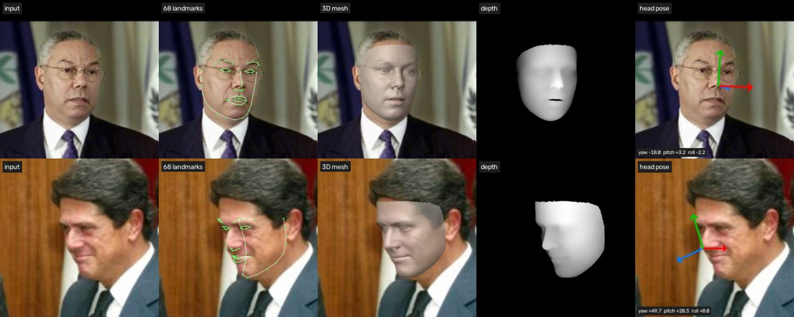
本项目的完整输出 （tools/reconstruct_3d.py）。上：近正脸（yaw −18°）；下：大角度侧脸（yaw +50°，pitch +20°）。从左到右：输入、投影回图像的 68 个 3D 关键点、带光照的网格半透明叠加、深度图（越亮越近）、头部坐标轴（红 x、绿 y、蓝 z = 鼻子朝向）。侧脸那一行里，被挡住的半边下颌线也画出来了，这是 3D 关键点和 2D 关键点的本质区别。要点 2 3DMM：平均脸 + 形状基 + 表情基。 3DMM（3D Morphable Model，三维形变模型）把每张脸都表示成同一套网格：顶点数相同、编号含义相同（第 i 号顶点在所有人脸上都是同一个解剖位置，例如鼻尖）。把 N 个顶点的 xyz 拉成一个 3N 维向量，任何一张脸都写成
S = S ˉ + A shp α + A exp β , S ˉ ∈ R 3 N , A shp ∈ R 3 N × 40 , A exp ∈ R 3 N × 10 , N = 38365 \mathbf{S}=\bar{\mathbf{S}}+\mathbf{A}_{\text{shp}}\,\boldsymbol{\alpha}+\mathbf{A}_{\text{exp}}\,\boldsymbol{\beta},
\qquad \bar{\mathbf{S}}\in\mathbb{R}^{3N},\;
\mathbf{A}_{\text{shp}}\in\mathbb{R}^{3N\times 40},\;
\mathbf{A}_{\text{exp}}\in\mathbb{R}^{3N\times 10},\; N=38365 S = S ˉ + A shp α + A exp β , S ˉ ∈ R 3 N , A shp ∈ R 3 N × 40 , A exp ∈ R 3 N × 10 , N = 38365 平均脸和形状基来自 Basel Face Model（BFM，几百个 3D 扫描），表情基来自 FaceWarehouse，3DDFA 用的是去掉脖子的版本（38365 个顶点、76073 个三角形）。基是怎么来的？对齐好的几百张扫描脸，每张都是 3N = 115095 维空间里的一个点；这些点并不是到处乱撒，而是挤在一个很"扁"的区域里。PCA（主成分分析）找出这团点变化最大的几个方向：第 1 个方向可能是"整张脸变大"，第 2 个是"变宽"……前 40 个方向就能描述绝大部分人与人之间的差异，α 就是沿这些方向走多远。
类比 捏脸游戏里的滑杆。平均脸是默认角色，每根滑杆是一个基向量，α、β 是滑杆位置。网络不用输出 115095 个坐标，只要输出 50 个滑杆位置。
易错点 3DMM 能"白送"68 个关键点，正是因为顶点一一对应：68 个关键点永远是固定编号的那 68 个顶点。代码里只取这 68 个顶点对应的 204 行做矩阵乘法，比算整个网格少算 564 倍。
要点 3 弱透视投影。 真实相机是透视投影：x = fX/Z，越远越小。但人脸前后起伏只有十来厘米，到相机的距离却有几十厘米到几米，可以近似认为所有点的深度都是同一个 Z₀，于是透视退化成"旋转 + 统一缩放 + 平移"：
x = f X Z ≈ f Z 0 X = s X ( Δ Z ≪ Z 0 ) ⟹ V = s R S + t = [ s R ∣ t ] ⏟ P ∈ R 3 × 4 [ S 1 ⊤ ] x=\frac{fX}{Z}\approx\frac{f}{Z_0}X=s\,X\quad(\Delta Z\ll Z_0)
\qquad\Longrightarrow\qquad
\mathbf{V}=s\,\mathbf{R}\,\mathbf{S}+\mathbf{t}=\underbrace{[\,s\mathbf{R}\mid\mathbf{t}\,]}_{\mathbf{P}\in\mathbb{R}^{3\times 4}}\begin{bmatrix}\mathbf{S}\\ \mathbf{1}^{\top}\end{bmatrix} x = Z f X ≈ Z 0 f X = s X ( Δ Z ≪ Z 0 ) ⟹ V = s R S + t = P ∈ R 3 × 4 [ s R ∣ t ] [ S 1 ⊤ ] V 的前两行就是图像上的 (x, y)，第三行是深度，只在渲染判断"谁挡住谁"时用。3DDFA 把 sR（3×3）和 t（3×1）拼成 3×4 的相机矩阵 P，正好 12 个数。
要点 4 62 个参数。 网络输出 12（相机矩阵 P）+ 40（形状 α）+ 10（表情 β）= 62 个数。这些数的量级天差地别：P 里的旋转元素约 0.0004（BFM 单位很小，要乘一个很小的 s 才变成像素），平移约 60，形状系数能到 10⁵。一个神经元很难同时学会输出相差 9 个数量级的数，所以训练时把每一维都标准化成均值 0、方差 1，推理时再还原：
p = p ^ ⊙ σ + μ , p = ( p 1 , … , p 12 ⏟ P = [ s R ∣ t ] , α 1 , … , α 40 ⏟ 形状 , β 1 , … , β 10 ⏟ 表情 ) \mathbf{p}=\hat{\mathbf{p}}\odot\boldsymbol{\sigma}+\boldsymbol{\mu},\qquad
\mathbf{p}=(\underbrace{p_1,\dots,p_{12}}_{\mathbf{P}=[s\mathbf{R}\mid\mathbf{t}]},\;\underbrace{\alpha_1,\dots,\alpha_{40}}_{\text{形状}},\;\underbrace{\beta_1,\dots,\beta_{10}}_{\text{表情}}) p = p ^ ⊙ σ + μ , p = ( P = [ s R ∣ t ] p 1 , … , p 12 , 形状 α 1 , … , α 40 , 表情 β 1 , … , β 10 ) μ、σ 存在 param_mean_std_62d_120x120.pkl 里，是在训练集上统计出来的。
要点 5 3DDFA-V2：一个小网络直接回归参数。 流程只有四步：SCRFD 检测框 → 放大 1.58 倍、中心下移 0.14 倍框长的正方形 ROI（检测框只到眉毛，网格还有额头）→ 缩放到 120×120、归一化 (x − 127.5)/128 → MobileNetV1（深度可分离卷积，327 万参数）输出 62 个数 → 代回 3DMM 公式。3DDFA-V2（Guo 等，ECCV 2020）训练时的巧思包括：把"顶点距离损失 VDC"和"按参数重要性加权的参数损失 WPDC"交替优化；额外加一个直接回归 68 点的分支做正则（权重文件里的 fc_lm，推理时丢掉）；用 3D 旋转合成短视频来训练稳定性。我们只移植推理部分。
易错点 3DDFA 训练时的输入是 OpenCV 读出的 BGR 顺序，所以这里不能 像检测器那样 swapRB。颜色通道搞反，网络照样输出结果，只是变差，很难发现。这类问题只能靠和原版逐元素对拍来排除（见代码 5）。
要点 6 从相机矩阵读出姿态角。 网络输出的 sR 是 9 个自由的数，并不保证是"缩放 × 旋转"。拆分方法：前两行的模长都约等于 s，各自归一化后当作 R 的前两行，第三行用叉乘补出来（保证是右手系）：
s = 1 2 ( ∥ r 1 ∥ + ∥ r 2 ∥ ) , r ^ 1 = r 1 ∥ r 1 ∥ , r ^ 2 = r 2 ∥ r 2 ∥ , r ^ 3 = r ^ 1 × r ^ 2 s=\tfrac12\left(\lVert\mathbf{r}_1\rVert+\lVert\mathbf{r}_2\rVert\right),\quad
\hat{\mathbf{r}}_1=\frac{\mathbf{r}_1}{\lVert\mathbf{r}_1\rVert},\quad
\hat{\mathbf{r}}_2=\frac{\mathbf{r}_2}{\lVert\mathbf{r}_2\rVert},\quad
\hat{\mathbf{r}}_3=\hat{\mathbf{r}}_1\times\hat{\mathbf{r}}_2 s = 2 1 ( ∥ r 1 ∥ + ∥ r 2 ∥ ) , r ^ 1 = ∥ r 1 ∥ r 1 , r ^ 2 = ∥ r 2 ∥ r 2 , r ^ 3 = r ^ 1 × r ^ 2 再把 R 分解成三个基本旋转的乘积，就能读出三个欧拉角：
R = R z ( roll ) R y ( − yaw ) R x ( pitch ) ⟹ yaw = arcsin R 20 , pitch = atan2 ( R 21 , R 22 ) , roll = atan2 ( R 10 , R 00 ) \mathbf{R}=\mathbf{R}_z(\text{roll})\,\mathbf{R}_y(-\text{yaw})\,\mathbf{R}_x(\text{pitch})
\;\Longrightarrow\;
\text{yaw}=\arcsin R_{20},\quad
\text{pitch}=\operatorname{atan2}(R_{21},R_{22}),\quad
\text{roll}=\operatorname{atan2}(R_{10},R_{00}) R = R z ( roll ) R y ( − yaw ) R x ( pitch ) ⟹ yaw = arcsin R 20 , pitch = atan2 ( R 21 , R 22 ) , roll = atan2 ( R 10 , R 00 ) 符号约定（已用图验证）：yaw > 0 鼻子转向画面左侧；pitch > 0 低头；roll > 0 头在画面里逆时针歪。把照片左右镜像，yaw 和 roll 会变号而 pitch 不变，这是测试里的一条检查。
易错点 |yaw| 接近 90° 时 cos(yaw) → 0，上面的除法失效，叫"万向节死锁"，代码里单独处理。另外 R 只是近似正交：例题 2 中前两行的点积是 0.0106，不是 0。
要点 7 光栅化：画家算法与 Z-buffer。 渲染就是把 76073 个三角形画到像素上，核心难题是"同一个像素被好几个三角形盖住时显示谁"。正交投影下，屏幕坐标直接取顶点的 (x, y)，深度取 z（越大越近）。
画家算法：按三角形的平均深度从远到近排序，依次用 cv2.fillConvexPoly 涂上去，近的自然盖住远的。直观，但两个三角形互相穿插时会出错（例题 3），而且一个三角形只能一个颜色。
Z-buffer：每个像素记住"目前最近的深度"，新来的点更近才覆盖。GPU 就是这么做的。判断像素 p 在不在三角形里、并插值深度和颜色，靠重心坐标：
p = w 0 v 0 + w 1 v 1 + w 2 v 2 , w 0 = area ( p , v 1 , v 2 ) area ( v 0 , v 1 , v 2 ) , 2 area ( a , b , c ) = ( b x − a x ) ( c y − a y ) − ( c x − a x ) ( b y − a y ) \mathbf{p}=w_0\mathbf{v}_0+w_1\mathbf{v}_1+w_2\mathbf{v}_2,\quad
w_0=\frac{\operatorname{area}(\mathbf{p},\mathbf{v}_1,\mathbf{v}_2)}{\operatorname{area}(\mathbf{v}_0,\mathbf{v}_1,\mathbf{v}_2)},\quad
2\operatorname{area}(\mathbf{a},\mathbf{b},\mathbf{c})=(b_x-a_x)(c_y-a_y)-(c_x-a_x)(b_y-a_y) p = w 0 v 0 + w 1 v 1 + w 2 v 2 , w 0 = area ( v 0 , v 1 , v 2 ) area ( p , v 1 , v 2 ) , 2 area ( a , b , c ) = ( b x − a x ) ( c y − a y ) − ( c x − a x ) ( b y − a y ) 三个 w 都 ≥ 0 说明 p 在三角形内；深度 z = Σwᵢzᵢ，颜色同样按 w 加权平均（Gouraud 着色，看起来是光滑曲面）。有向面积的正负还顺便告诉我们三角形是正面还是背面朝向相机，背面直接跳过（背面剔除），省一半计算。
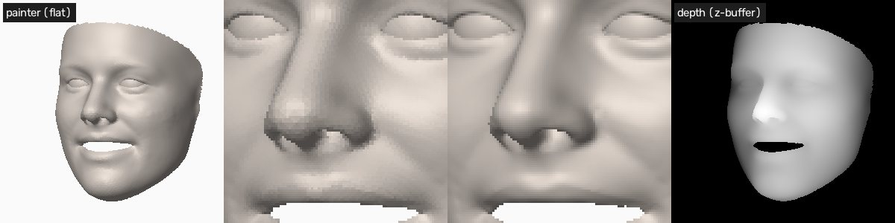
画家算法 vs Z-buffer。 左一：画家算法（每个三角形一个颜色）；中间两张是鼻子附近放大 4 倍，左为画家算法的平面着色，右为 Z-buffer + 重心坐标插值的 Gouraud 着色，后者更光滑；右一：Z-buffer 顺便得到的深度图。每个三角形只有 1～2 个像素大时，两者整体几乎一样（测试里两者覆盖区域的 IoU > 0.95）。要点 8 法向与 Lambert 光照。 一个面朝向光源时亮，侧对光源时暗。三角形的法向用两条边的叉积求；顶点法向取周围三角形法向的平均（叉积长度是面积的 2 倍，直接相加就是按面积加权），再归一化：
n f = ( v 1 − v 0 ) × ( v 2 − v 0 ) , n i = ∑ f ∋ i n f ∥ ∑ f ∋ i n f ∥ \mathbf{n}_f=(\mathbf{v}_1-\mathbf{v}_0)\times(\mathbf{v}_2-\mathbf{v}_0),\qquad
\mathbf{n}_i=\frac{\sum_{f\ni i}\mathbf{n}_f}{\left\lVert\sum_{f\ni i}\mathbf{n}_f\right\rVert} n f = ( v 1 − v 0 ) × ( v 2 − v 0 ) , n i = ∑ f ∋ i n f ∑ f ∋ i n f 亮度 = 环境光 + Lambert 漫反射 + Blinn-Phong 高光，L 是指向光源的单位向量，V 是指向相机的单位向量：
I = k a + k d max ( 0 , n ⋅ L ) + k s max ( 0 , n ⋅ H ) p , H = L + V ∥ L + V ∥ I=k_a+k_d\max(0,\mathbf{n}\cdot\mathbf{L})+k_s\max(0,\mathbf{n}\cdot\mathbf{H})^{p},\qquad
\mathbf{H}=\frac{\mathbf{L}+\mathbf{V}}{\lVert\mathbf{L}+\mathbf{V}\rVert} I = k a + k d max ( 0 , n ⋅ L ) + k s max ( 0 , n ⋅ H ) p , H = ∥ L + V ∥ L + V 类比 手电筒斜着照桌面，光斑被拉长，同样的光摊到更大的面积上，单位面积就暗了，暗多少正好是 cos θ = n·L。这就是 Lambert 余弦定律。
易错点 叉积的方向取决于三个顶点的排列顺序。图像坐标 y 轴朝下，3D 软件 y 轴朝上，翻转 y 是一次镜像，会把顺时针变成逆时针，法向就整体朝里了，渲染出来一片漆黑。代码用 orient_triangles 自动统一：网格整体朝着相机，所以面积加权的法向之和必须指向 +z，否则把所有三角形反过来。
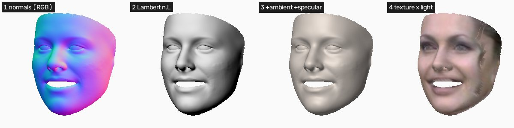
着色四步。 1 顶点法向画成颜色（x→红，y 朝上→绿，z→蓝），2 只有 Lambert 项 max(0, n·L)，背光的下颌线全黑，3 加上环境光 0.35 和高光，4 照片采样的纹理乘以较弱的光照。光从左上前方打来。要点 9 纹理：从照片取颜色，再"摆正"。 每个顶点投影到照片上的 (x, y) 不是整数，用双线性插值取周围 4 个像素的加权平均作为顶点颜色。两个坑：被鼻子挡住的顶点会采到鼻子的颜色；侧对相机的那半边脸在照片里被压缩，采到的是拉长的条纹，甚至背景。办法是给每个顶点一个可信度（用 Z-buffer 判断是否可见，乘以法向朝相机的程度 n_z），不可信时借用左右对称位置顶点的颜色（把平均脸沿 x 镜像后找最近顶点，得到对称编号 m(i)）：
c i ′ = ( 1 − b i ) c i + b i c m ( i ) , b i = ( 1 − w i ) w m ( i ) , w i = min ( 1 , max ( 0 , n z , i ) ⋅ vis i 0.35 ) c_i'=(1-b_i)\,c_i+b_i\,c_{m(i)},\qquad b_i=(1-w_i)\,w_{m(i)},\qquad
w_i=\min\!\left(1,\;\frac{\max(0,n_{z,i})\cdot\text{vis}_i}{0.35}\right) c i ′ = ( 1 − b i ) c i + b i c m ( i ) , b i = ( 1 − w i ) w m ( i ) , w i = min ( 1 , 0.35 max ( 0 , n z , i ) ⋅ vis i ) 把公式里的 R 换成单位阵，就得到"摆正"的正脸网格；再乘上自己选的 yaw/pitch 旋转，就能从任意角度看这张脸。
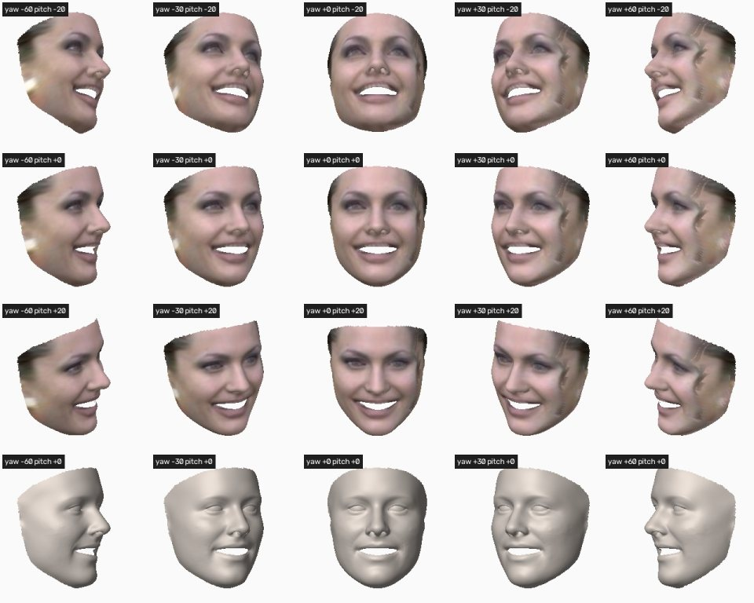
摆正后的多视角渲染 （multiview.jpg）。前三行是纹理网格在 pitch = −20°/0°/+20°、yaw = −60°…+60° 下的样子，最后一行是石膏像。照片里看得见的一侧（左边几列）纹理清晰；看不见的一侧靠对称补全，能看出接缝和拉伸，这是单张照片重建的固有局限。要点 10 本项目实测。 正确性：把我们的移植版和原版 3DDFA-V2 的 TDDFA 类放在一起，给同一个 SCRFD 框，在 32 张 LFW 人脸上逐元素比较：62 个参数、ROI、68 个关键点、全部 38365 个稠密顶点的最大绝对误差都是 0 （逐位相同），姿态角误差 3.6×10⁻¹⁵ 度。精度：标准评测集 AFLW2000-3D 的官方下载站点无法连接、Hugging Face 上也没有镜像，本项目没有实测 NME；原作者报告 MobileNetV1 版在 AFLW2000-3D 上 68 点 2D NME 约 3.56%。速度（笔记本 CPU，同时有其它训练任务在跑，数字会波动）：
步骤
实测耗时
拟合一张脸（裁剪 + CNN + 稠密重建 + 姿态，PyTorch 1 线程）
11～28 ms
网格叠加渲染（250×250 原图）
30～45 ms
网格叠加渲染（640×640）
约 200 ms
任意视角纹理渲染 256×256 / 640×640
45～90 ms / 150～360 ms
画家算法（640×640，Python 循环）
约 270 ms
易错点 PyTorch 默认用满所有 CPU 核。机器空闲时多线程更快，但机器繁忙时线程之间互相等待：同样的网络 4 线程要 175 ms，1 线程只要 27 ms。这么小的网络，CLI 默认只用 1 个线程。
多人脸与失败案例。 四张脸逐个拟合；右上角那张脸被画面边缘切掉一半，又是大角度侧脸，网格只剩一条"窄片"，姿态也不可信（yaw −42°、pitch +45°、roll +48°）。回归方法对"训练时没见过"的输入没有自我纠错能力，这时应该靠检测置信度或关键点可见性把它过滤掉。要点 11 展望：可微渲染、NeRF 与 3D 高斯泼溅。 本专题的渲染器是"不可微"的：Z-buffer 的"选最近"和"像素在不在三角形内"都是离散判断，梯度传不回去。三条更前沿的路线：
可微渲染：把光栅化做成可求导的（软化边界与深度比较，如 PyTorch3D、nvdiffrast），就能把渲染结果和照片逐像素比较，梯度一路传回 3DMM 参数、光照和纹理。这叫"分析-合成"（analysis by synthesis），可以在没有 3D 标注的照片上自监督训练，Deep3DFaceRecon、DECA 都是这个思路：
min α , β , P , γ ∑ x ∈ 脸部像素 ∥ I photo ( x ) − Render ( α , β , P , γ ) ( x ) ∥ 1 + λ ∑ k = 1 68 ∥ l k − l ^ k ∥ 2 \min_{\boldsymbol{\alpha},\boldsymbol{\beta},\mathbf{P},\boldsymbol{\gamma}}\;
\sum_{\mathbf{x}\in\text{脸部像素}}\left\lVert I_{\text{photo}}(\mathbf{x})-\operatorname{Render}(\boldsymbol{\alpha},\boldsymbol{\beta},\mathbf{P},\boldsymbol{\gamma})(\mathbf{x})\right\rVert_1
+\lambda\sum_{k=1}^{68}\lVert\mathbf{l}_k-\hat{\mathbf{l}}_k\rVert^2 α , β , P , γ min x ∈ 脸部像素 ∑ ∥ I photo ( x ) − Render ( α , β , P , γ ) ( x ) ∥ 1 + λ k = 1 ∑ 68 ∥ l k − l ^ k ∥ 2
NeRF：不用网格，用一个神经网络表示"空间中每一点的颜色 c 和密度 σ"，沿每条视线采样并做体渲染。照片级真实，但需要多视角照片或视频、每个人单独优化，渲染也慢：
C ( r ) = ∑ i = 1 M T i ( 1 − e − σ i δ i ) c i , T i = exp ( − ∑ j < i σ j δ j ) C(\mathbf{r})=\sum_{i=1}^{M}T_i\left(1-e^{-\sigma_i\delta_i}\right)\mathbf{c}_i,\qquad
T_i=\exp\!\Big(-\sum_{j<i}\sigma_j\delta_j\Big) C ( r ) = i = 1 ∑ M T i ( 1 − e − σ i δ i ) c i , T i = exp ( − j < i ∑ σ j δ j )
3D 高斯泼溅（3DGS）：用几十万个带颜色、透明度的 3D 椭球表示场景，渲染时投影到屏幕、按深度排序、从前往后做透明度混合。这其实是"画家算法"的复兴（只是每个"三角形"换成了半透明的高斯斑点），在 GPU 上能实时渲染。GaussianAvatars 等工作把高斯点绑定到 3DMM 网格的三角形上，用 3DMM 的表情参数驱动它们，把本专题的参数化模型和新表示结合了起来：
C = ∑ i = 1 K c i α i ∏ j < i ( 1 − α j ) C=\sum_{i=1}^{K}\mathbf{c}_i\,\alpha_i\prod_{j<i}\left(1-\alpha_j\right) C = i = 1 ∑ K c i α i j < i ∏ ( 1 − α j ) 结论 3DMM + 网格是"强先验、少参数、一张照片就够"；NeRF / 3DGS 是"弱先验、高保真、要多视角"。实际系统常把两者结合：3DMM 负责可控的形状和表情，神经表示负责细节和真实感。
代码精读
代码 1 facevision/face3d/tddfa.py：62 个参数变成 3.8 万个顶点 推理的前半段是普通的"裁剪 → 归一化 → 前向"，最后一步把标准化的输出还原：
def predict_params(self, img, roi_box):
crop = crop_img(img, roi_box) # 超出图像的部分补黑
crop = cv2.resize(crop, (self.size, self.size), interpolation=cv2.INTER_LINEAR) # 120x120
x = (crop.astype(np.float32) - 127.5) / 128.0 # 注意: 保持 BGR, 不 swapRB
x = torch.from_numpy(np.ascontiguousarray(x.transpose(2, 0, 1)[None ]))
out = self.model(x)[0].numpy().astype(np.float32)
return out * self.param_std + self.param_mean # p = p_hat * sigma + mu 后半段就是 3DMM 公式本身。BFM 把顶点按 [x0, y0, z0, x1, y1, z1, …] 存成一列，所以算完要按列优先（order="F"）变回 (3, N)：
def reconstruct(self, params, roi_box, dense=True , frontal=False ):
P, alpha_shp, alpha_exp = parse_params(params) # 12 + 40 + 10
if dense:
u, w_shp, w_exp = self.u, self.w_shp, self.w_exp # (3N,1) (3N,40) (3N,10)
else :
u, w_shp, w_exp = self.u_base, self.w_shp_base, self.w_exp_base # 只取 68 点的 204 行
shape = (u + w_shp @ alpha_shp + w_exp @ alpha_exp).reshape(3, -1, order="F") # S
sR, t = P[:, :3], P[:, 3:]
if frontal: # 去掉旋转 = 摆正的正脸
sR = np.float32(P2sRt(P)[0]) * np.eye(3, dtype=np.float32)
return similar_transform(sR @ shape + t, roi_box, self.size) # V = sRS + t, 再映射回原图 similar_transform 做三件事：网络坐标系 y 朝上，先 y → 120 − y；训练数据来自 MATLAB（下标从 1 开始），x、z 各减 1；最后按 ROI 边长 / 120 缩放并平移回原图（例题 1）。
代码 2 facevision/face3d/tddfa.py：从相机矩阵拆出姿态 def P2sRt(P):
t = P[:, 3]
r1, r2 = P[0, :3], P[1, :3]
s = (np.linalg.norm(r1) + np.linalg.norm(r2)) / 2.0
r1 = r1 / np.linalg.norm(r1)
r2 = r2 / np.linalg.norm(r2)
R = np.stack([r1, r2, np.cross(r1, r2)]) # 第三行用叉乘补
return s, R, t
def matrix2angle(R):
if R[2, 0] > 0.998: # yaw = +90 度, 万向节死锁
yaw, roll = np.pi / 2, 0.0
pitch = roll + atan2(-R[0, 1], -R[0, 2])
elif R[2, 0] < -0.998:
yaw, roll = -np.pi / 2, 0.0
pitch = -roll + atan2(R[0, 1], R[0, 2])
else :
yaw = asin(R[2, 0])
pitch = atan2(R[2, 1] / cos(yaw), R[2, 2] / cos(yaw))
roll = atan2(R[1, 0] / cos(yaw), R[0, 0] / cos(yaw))
return yaw, pitch, roll画姿态坐标轴时，模型的第 k 根轴在图像上的方向就是 R 的第 k 列的前两个分量，y 分量取负（图像 y 朝下）：d = (R[0, k], -R[1, k]) * length。正脸时蓝色的 z 轴正对镜头，投影成一个点；转头越厉害，蓝线越长。
代码 3 facevision/face3d/render.py：不用 for 循环的 Z-buffer Python 里逐个三角形、逐个像素循环会慢到几十秒。向量化的思路是：先按包围盒大小把三角形分桶（1、2、4、8… 像素），同一桶里每个三角形都枚举 k×k 个候选像素，一次性用数组算出所有"(三角形, 像素)"对的重心坐标：
px = x0[t, None ] + ox[None ] # (三角形数, k*k) 个候选像素
py = y0[t, None ] + oy[None ]
w0 = ((xb - px) * (yc - py) - (xc - px) * (yb - py)) / area[t, None ]
w1 = ((xc - px) * (ya - py) - (xa - px) * (yc - py)) / area[t, None ]
w2 = 1.0 - w0 - w1
inside = (px <= x1[t, None ]) & (py <= y1[t, None ]) & (w0 >= eps) & (w1 >= eps) & (w2 >= eps)然后是 Z-buffer 本身，只有三行：每个像素取最大的 z，"赢家"的重心坐标用来插值属性：
np.maximum.at(depth, pix, z) # 每个像素保留最近 (z 最大) 的深度
win = z >= depth[pix] # 谁是那个最近的
image[pix[win]] = np.einsum("ij,ijc->ic", w[win], attrs[tri[tid[win]]]) # 属性 = sum w_i * attr_i np.maximum.at 是"带重复下标的原地取最大"：同一个像素出现很多次时，普通的 depth[pix] = np.maximum(...) 只会保留其中一次的结果，.at 才会逐个累计。整个网格在 640×640 上一次渲染约 0.15～0.35 秒。
代码 4 facevision/face3d/render.py：法向、光照与任意视角 顶点法向 = 周围三角形法向之和。用 np.bincount 按顶点编号累加，比 Python 循环快上百倍：
fn = np.cross(v1 - v0, v2 - v0) # 面法向, 长度 = 2 倍面积 (自带面积加权)
idx = tri.ravel()
vn = np.stack([np.bincount(idx, np.repeat(fn[:, c], 3), len(verts)) for c in range(3)], axis=1)
vn = vn / np.linalg.norm(vn, axis=1, keepdims=True )任意视角 = 绕网格中心旋转 + 正交投影。缩放只由网格自身的大小决定、不随角度变化，所以连续角度渲染成的转台视频不会抖：
v = v - (v.min(0) + v.max(0)) / 2 # 以包围盒中心为旋转中心
radius = np.linalg.norm(v, axis=1).max()
v = v @ rotation_yaw_pitch(yaw_deg, pitch_deg).T # 先 yaw 再 pitch
normals = vertex_normals(v, tri) # 旋转后重新算法向, 光源固定在相机侧
screen = v * (fill * size / 2 / radius)
screen[:, :2] += size / 2代码 5 对拍原版 3DDFA-V2，以及一键运行 移植别人的模型，最可靠的验证是"同样的输入，逐元素比较输出"。原版仓库的人脸检测（FaceBoxes）和渲染器（Sim3DR）需要编译 Cython，但它的 TDDFA 类本身是纯 Python，可以直接导入：把原版目录加进 sys.path，传入同一个 SCRFD 框，比较 recon_vers 的输出和我们的结果。32 张 LFW 人脸上，62 个参数、ROI、68 个关键点、38365 个顶点的最大误差全部是 0。
对拍顺便发现了原版数据的一个小瑕疵：68 个关键点在 BFM 里的下标本应是同一个顶点的 (3v, 3v+1, 3v+2)，但第 44 号点的 z 下标来自相邻的另一个顶点（12087 而不是 12383），所以"稀疏关键点"和"稠密网格里对应的顶点"在第 44 号点上差约 0.06 像素。测试里专门写明了这一点，而不是把容差调大糊过去。
python tools/reconstruct_3d.py --input data/lfw/Colin_Powell/Colin_Powell_0001.jpg
# -> outputs/face3d/Colin_Powell_0001/: overview.jpg landmarks68.jpg mesh_overlay.jpg depth.png
# pose.jpg mesh.obj multiview.jpg turntable.mp4 result.json
python -m pytest tests/test_face3d.py -q # 8 个测试: 形状、正交性、镜像、渲染、OBJ 往返mesh.obj 每行 v x y z r g b 一个带颜色的顶点、f i j k 一个三角形（下标从 1 开始），可以直接拖进 MeshLab、Blender 或 Windows 自带的 3D 查看器里转着看。
例题
例题 1 ROI 裁剪：检测框怎样变成网络输入 SCRFD 在 Colin_Powell_0001.jpg 上检测到框 (70.77, 63.67, 160.08, 185.44)。按 3DDFA-V2 的策略求送进网络的正方形 ROI；网络 120×120 坐标系里的点 (60, 50) 对应原图哪里？
框宽 89.31、高 121.77。边长取宽高平均再放大 1.58 倍并取整；中心在框中心基础上往下移 0.14 倍边长：
old = 1 2 ( 89.31 + 121.77 ) = 105.54 , size = ⌊ 1.58 × 105.54 ⌋ = ⌊ 166.75 ⌋ = 166 c x = 160.08 − 89.31 2 = 115.425 , c y = 185.44 − 121.77 2 + 0.14 × 105.54 = 139.33 \begin{aligned}
\text{old}&=\tfrac12(89.31+121.77)=105.54, & \text{size}&=\lfloor 1.58\times105.54\rfloor=\lfloor 166.75\rfloor=166\\
c_x&=160.08-\tfrac{89.31}{2}=115.425, & c_y&=185.44-\tfrac{121.77}{2}+0.14\times105.54=139.33
\end{aligned} old c x = 2 1 ( 89.31 + 121.77 ) = 105.54 , = 160.08 − 2 89.31 = 115.425 , size c y = ⌊ 1.58 × 105.54 ⌋ = ⌊ 166.75 ⌋ = 166 = 185.44 − 2 121.77 + 0.14 × 105.54 = 139.33 ROI = ( c x − 83 , c y − 83 , c x + 83 , c y + 83 ) = ( 32.43 , 56.33 , 198.43 , 222.33 ) \text{ROI}=(c_x-83,\;c_y-83,\;c_x+83,\;c_y+83)=\boxed{(32.43,\,56.33,\,198.43,\,222.33)} ROI = ( c x − 83 , c y − 83 , c x + 83 , c y + 83 ) = ( 32.43 , 56.33 , 198.43 , 222.33 ) 网络里的 1 个像素对应原图 166/120 = 1.3833 个像素。点 (60, 50) 先做 x − 1、y → 120 − y，再缩放平移：
x = ( 60 − 1 ) × 1.3833 + 32.43 = 114.04 , y = ( 120 − 50 ) × 1.3833 + 56.33 = 153.16 x=(60-1)\times1.3833+32.43=114.04,\qquad y=(120-50)\times1.3833+56.33=\boxed{153.16} x = ( 60 − 1 ) × 1.3833 + 32.43 = 114.04 , y = ( 120 − 50 ) × 1.3833 + 56.33 = 153.16 验算 代码 roi_from_bbox 输出 [32.425, 56.3306, 198.425, 222.3306]，一致。
例题 2 从旋转矩阵读出姿态角 对 Colin_Powell_0001.jpg，P2sRt 拆出的旋转矩阵（保留 4 位）如下，求 yaw、pitch、roll，并说明脸朝哪边转。
R = [ 0.9497 0.0661 0.3062 − 0.0362 0.9970 − 0.0682 − 0.3098 0.0537 0.9492 ] \mathbf{R}=\begin{bmatrix}0.9497&0.0661&0.3062\\-0.0362&0.9970&-0.0682\\-0.3098&0.0537&0.9492\end{bmatrix} R = 0.9497 − 0.0362 − 0.3098 0.0661 0.9970 0.0537 0.3062 − 0.0682 0.9492 直接套公式（下标从 0 开始）：
yaw = arcsin ( − 0.3098 ) = − 18.05 ∘ pitch = atan2 ( 0.0537 , 0.9492 ) = 3.24 ∘ roll = atan2 ( − 0.0362 , 0.9497 ) = − 2.18 ∘ ( yaw , pitch , roll ) ≈ ( − 18.0 ∘ , 3.2 ∘ , − 2.2 ∘ ) \begin{aligned}
\text{yaw}&=\arcsin(-0.3098)=-18.05^\circ\\
\text{pitch}&=\operatorname{atan2}(0.0537,\;0.9492)=3.24^\circ\\
\text{roll}&=\operatorname{atan2}(-0.0362,\;0.9497)=-2.18^\circ
\end{aligned}
\qquad\boxed{(\text{yaw},\text{pitch},\text{roll})\approx(-18.0^\circ,\;3.2^\circ,\;-2.2^\circ)} yaw pitch roll = arcsin ( − 0.3098 ) = − 18.0 5 ∘ = atan2 ( 0.0537 , 0.9492 ) = 3.2 4 ∘ = atan2 ( − 0.0362 , 0.9497 ) = − 2.1 8 ∘ ( yaw , pitch , roll ) ≈ ( − 18. 0 ∘ , 3. 2 ∘ , − 2. 2 ∘ ) yaw < 0：鼻子转向画面右侧约 18°，与照片一致；pitch、roll 都很小，基本是平视、头没歪。代码输出 (−18.048°, 3.236°, −2.185°)。
验算 第一行和第二行的点积 0.9497×(−0.0362) + 0.0661×0.9970 + 0.3062×(−0.0682) ≈ 0.0106，夹角 arccos(0.0106) = 89.39°，说明网络给出的"旋转"只是近似正交。
例题 3 Z-buffer：两个互相穿插的三角形 三角形 A 的顶点 (x, y, z) 为 (0, 0, 1)、(4, 0, 2)、(0, 4, 3)；三角形 B 的 xy 相同，三个顶点 z 都是 1.5（z 越大越近）。像素 (1, 1) 和 (0, 0) 分别显示哪个三角形？画家算法会怎样？
像素 (1, 1) 对 A 的重心坐标：
2 area = 4 × 4 − 0 × 0 = 16 , w 0 = ( 4 − 1 ) ( 4 − 1 ) − ( 0 − 1 ) ( 0 − 1 ) 16 = 0.5 , w 1 = ( 0 − 1 ) ( 0 − 1 ) − ( 0 − 1 ) ( 4 − 1 ) 16 = 0.25 , w 2 = 0.25 2\,\text{area}=4\times4-0\times0=16,\quad
w_0=\frac{(4-1)(4-1)-(0-1)(0-1)}{16}=0.5,\quad
w_1=\frac{(0-1)(0-1)-(0-1)(4-1)}{16}=0.25,\quad
w_2=0.25 2 area = 4 × 4 − 0 × 0 = 16 , w 0 = 16 ( 4 − 1 ) ( 4 − 1 ) − ( 0 − 1 ) ( 0 − 1 ) = 0.5 , w 1 = 16 ( 0 − 1 ) ( 0 − 1 ) − ( 0 − 1 ) ( 4 − 1 ) = 0.25 , w 2 = 0.25 z A ( 1 , 1 ) = 0.5 × 1 + 0.25 × 2 + 0.25 × 3 = 1.75 > 1.5 = z B z_A(1,1)=0.5\times1+0.25\times2+0.25\times3=\boxed{1.75}>1.5=z_B z A ( 1 , 1 ) = 0.5 × 1 + 0.25 × 2 + 0.25 × 3 = 1.75 > 1.5 = z B 所以 (1, 1) 显示 A。像素 (0, 0) 正好是 A 的第一个顶点，z_A = 1 < 1.5，显示 B。Z-buffer 逐像素比较，两个都对。
画家算法按平均深度排序：A 的平均深度 2 > B 的 1.5，A 被认为"更近"，最后画、整个盖住 B，像素 (0, 0) 就错了。代码 rasterize 的实测结果：(1, 1) 深度 1.75、(0, 0) 深度 1.5、(2, 1) 深度 2.0。
结论 画家算法按"整个三角形"排序，Z-buffer 按"每个像素"比较。人脸网格的三角形很小、几乎不穿插，两者结果接近；场景复杂时只有 Z-buffer 可靠。
例题 4 Lambert 光照手算 光照方向 L = (−0.35, −0.45, 1)（图像坐标 y 朝下，所以是从左上前方打光），k_a = 0.35，k_d = 0.6，不计高光。求三个法向的亮度：(a) 正对相机 n = (0, 0, 1)；(b) 朝画面右侧 n = (0.6, 0, 0.8)；(c) 朝画面左侧 n = (−0.6, 0, 0.8)。
先把 L 归一化：|L| = √(0.1225 + 0.2025 + 1) = 1.1511，L̂ = (−0.3041, −0.3909, 0.8687)。
( a ) n ⋅ L ^ = 0.8687 , I = 0.35 + 0.6 × 0.8687 = 0.871 ( b ) n ⋅ L ^ = 0.6 × ( − 0.3041 ) + 0.8 × 0.8687 = 0.5126 , I = 0.35 + 0.6 × 0.5126 = 0.658 ( c ) n ⋅ L ^ = 0.6 × 0.3041 + 0.8 × 0.8687 = 0.8774 , I = 0.35 + 0.6 × 0.8774 = 0.876 \begin{aligned}
(a)\;\; \mathbf{n}\cdot\hat{\mathbf{L}}&=0.8687, & I&=0.35+0.6\times0.8687=0.871\\
(b)\;\; \mathbf{n}\cdot\hat{\mathbf{L}}&=0.6\times(-0.3041)+0.8\times0.8687=0.5126, & I&=0.35+0.6\times0.5126=0.658\\
(c)\;\; \mathbf{n}\cdot\hat{\mathbf{L}}&=0.6\times0.3041+0.8\times0.8687=0.8774, & I&=0.35+0.6\times0.8774=0.876
\end{aligned} ( a ) n ⋅ L ^ ( b ) n ⋅ L ^ ( c ) n ⋅ L ^ = 0.8687 , = 0.6 × ( − 0.3041 ) + 0.8 × 0.8687 = 0.5126 , = 0.6 × 0.3041 + 0.8 × 0.8687 = 0.8774 , I I I = 0.35 + 0.6 × 0.8687 = 0.871 = 0.35 + 0.6 × 0.5126 = 0.658 = 0.35 + 0.6 × 0.8774 = 0.876 I a = 0.871 , I b = 0.658 , I c = 0.876 \boxed{I_a=0.871,\quad I_b=0.658,\quad I_c=0.876} I a = 0.871 , I b = 0.658 , I c = 0.876 朝向光源一侧的 (c) 比正脸 (a) 还亮一点，背光的 (b) 明显暗，这就是图里左脸亮、右脸暗的原因。代码 lambert_phong 加上高光项（k_s = 0.15，p = 20）后，(a) 变成 0.947：正对相机又接近光源方向的额头会出现一块高光。
易错点 n·L 为负说明这个面背对光源，必须截断为 0（max），否则背光面会"吸光"变得比环境光还暗。
专题十一 GAN 人脸属性编辑：一个生成器改发色、性别、年龄生成器与判别器的博弈、WGAN-GP、StarGAN 的三个损失、FID，以及扩散模型 前面的专题都在"看懂"人脸：检测、对齐、识别、估计性别年龄。这一章反过来"画"人脸：给一张照片，把头发变成金色、把男人变成女人、把年轻人变老。本项目用 StarGAN（CVPR 2018）的官方 CelebA 权重，在 facevision/gan/stargan.py 里按官方结构重写了网络（能 strict 加载），补上了"任意照片 → 对齐 → 编辑 → 贴回"的流程；训练代码在 tools/train_stargan.py，评测在 tools/eval_stargan.py。
知识要点 1 GAN 博弈 2 DCGAN 到 StyleGAN 3 条件生成 4 WGAN-GP 5 三个损失 6 循环一致 7 CelebA 预处理 8 贴回原图 9 FID 与实测 10 扩散模型 代码精读 条件输入 训练一步 InstanceNorm 陷阱 贴回原图 自己算 FID 例题 FID 手算 初始损失 标签向量 坐标换算 知识要点
要点 1 GAN：两个网络的博弈。 生成对抗网络（GAN，Goodfellow 2014）由两个网络组成：生成器 G 负责"造图"，判别器 D 负责"验图"——给它一张图，它判断这是真实照片还是 G 造的。训练时两者交替更新：D 努力把真图和假图分开，G 努力让 D 分不开。博弈的平衡点是 G 造出的图在统计意义上和真图无法区分。原始 GAN 的目标函数：
min G max D E x ∼ p data [ log D ( x ) ] + E z ∼ p z [ log ( 1 − D ( G ( z ) ) ) ] \min_G\max_D\;\mathbb{E}_{x\sim p_{\text{data}}}\big[\log D(x)\big]+\mathbb{E}_{z\sim p_z}\big[\log\big(1-D(G(z))\big)\big] G min D max E x ∼ p data [ log D ( x ) ] + E z ∼ p z [ log ( 1 − D ( G ( z )) ) ] 这里 D(x) 是"x 为真"的概率，z 是随机噪声。注意 G 从来没见过真图本身，它学到的一切都来自 D 回传的梯度："你这张图哪里不像真的"。
类比 造假币的人（G）和验钞机（D）。验钞机越来越严，逼着造假的人把水印、纹路做得越来越像；最后验钞机只能靠猜（判对率 50%）。
要点 2 从 DCGAN 到 StyleGAN。 DCGAN（2015）确立了"全卷积 + BatchNorm + 转置卷积上采样"的结构，第一次稳定生成 64×64 的人脸。WGAN / WGAN-GP（2017）换了损失函数，解决"训练一会儿就崩"的问题（要点 4）。Pix2Pix（2017）做成对图像翻译（草图 → 照片），CycleGAN（2017）用循环一致做不成对的翻译（马 ↔ 斑马）。ProGAN（2018）从 4×4 逐级加层训练到 1024×1024。StarGAN（2018）用一个生成器完成多个域之间的翻译，就是本章的主角。StyleGAN / StyleGAN2（2019/2020）用映射网络把噪声变成"风格向量"，在每一层调制特征，生成 1024×1024 以假乱真的人脸，而且潜空间里不同方向对应年龄、表情、朝向，可以直接拿来编辑。
要点 3 条件生成：把标签拼成额外的通道。 普通 GAN 的 G 只吃噪声，生成什么全凭运气。StarGAN 的 G 吃两样东西：一张真实人脸 x，和一个"目标属性"向量 c（5 维 0/1：黑发、金发、棕发、男性、年轻）。把 c 的每一维在空间上复制成一张 128×128 的常数图，和 RGB 三个通道拼在一起，网络第一层就看到 8 个通道：
G ( x , c ) = N e t ( concat ( x , tile ( c ) ) ) , concat ( x , tile ( c ) ) ∈ R ( 3 + 5 ) × 128 × 128 G(x,c)=\mathrm{Net}\Big(\operatorname{concat}\big(x,\;\operatorname{tile}(c)\big)\Big),\qquad \operatorname{concat}\big(x,\operatorname{tile}(c)\big)\in\mathbb{R}^{(3+5)\times 128\times 128} G ( x , c ) = Net ( concat ( x , tile ( c ) ) ) , concat ( x , tile ( c ) ) ∈ R ( 3 + 5 ) × 128 × 128 这个办法很朴素，但有一个隐藏条件：卷积必须用补零（zero padding）。标签通道是常数图，它对第一层卷积输出的贡献在图像内部处处相同，相当于一个偏置；只有在边缘几个像素，补零让这个贡献不再是常数。紧接着的 InstanceNorm 会减去每个通道的空间均值，内部那个"偏置"几乎被抹掉，标签信息主要靠边缘的补零效应传进网络。如果改用镜像补边，连边缘也是常数，标签就被完全抹掉，网络"看不见"标签（官方代码的注释里专门提醒了这一点）。
要点 4 WGAN-GP：让训练稳定下来。 原始 GAN 的 D 输出概率。D 一旦太强，对假图的输出贴近 0，log(1 − D) 几乎是平的，G 拿不到梯度，训练就卡住或崩溃。WGAN 改为估计两个分布之间的 Wasserstein 距离（"把一堆土搬成另一堆土最少要做多少功"）。它的对偶形式要求 D（此时叫 critic，输出任意实数，不再是概率）是 1-Lipschitz 函数，即对输入的梯度范数不超过 1。WGAN-GP 的做法是在真图和假图之间随机插值得到 x̂，惩罚梯度范数偏离 1：
W ( p r , p g ) = sup ∥ f ∥ L ≤ 1 E x ∼ p r [ f ( x ) ] − E x ~ ∼ p g [ f ( x ~ ) ] L gp = E x ^ [ ( ∥ ∇ x ^ D src ( x ^ ) ∥ 2 − 1 ) 2 ] , x ^ = α x + ( 1 − α ) G ( x , c ) , α ∼ U ( 0 , 1 ) \begin{aligned}
W(p_r,p_g)&=\sup_{\lVert f\rVert_L\le 1}\;\mathbb{E}_{x\sim p_r}\big[f(x)\big]-\mathbb{E}_{\tilde x\sim p_g}\big[f(\tilde x)\big]\\
\mathcal{L}_{\text{gp}}&=\mathbb{E}_{\hat x}\Big[\big(\lVert\nabla_{\hat x}D_{\text{src}}(\hat x)\rVert_2-1\big)^2\Big],\qquad \hat x=\alpha x+(1-\alpha)\,G(x,c),\ \ \alpha\sim U(0,1)
\end{aligned} W ( p r , p g ) L gp = ∥ f ∥ L ≤ 1 sup E x ∼ p r [ f ( x ) ] − E x ~ ∼ p g [ f ( x ~ ) ] = E x ^ [ ( ∥ ∇ x ^ D src ( x ^ ) ∥ 2 − 1 ) 2 ] , x ^ = αx + ( 1 − α ) G ( x , c ) , α ∼ U ( 0 , 1 ) 为了这个梯度惩罚，D 里不能用 BatchNorm（它让一个样本的输出依赖同 batch 的其它样本，"对单个输入求梯度"就没有意义了），所以 StarGAN 的 D 只有卷积和 LeakyReLU。
要点 5 StarGAN 的三个损失。 D 有两个输出头：D_src 是真假分数（PatchGAN，输出 2×2 个分数，每个只看图像的一块）；D_cls 是 5 个属性的 logits（辅助分类器）。训练一步时，目标标签 c 取本 batch 真实标签随机打乱后的结果，保证属性组合都是真实存在的。两个网络的损失：
L D = − E [ D src ( x ) ] + E [ D src ( G ( x , c ) ) ] ⏟ Wasserstein + λ gp L gp + λ cls L cls r L G = − E [ D src ( G ( x , c ) ) ] + λ cls L cls f + λ rec L rec λ gp = 10 , λ cls = 1 , λ rec = 10 \begin{aligned}
\mathcal{L}_D&=\underbrace{-\mathbb{E}\big[D_{\text{src}}(x)\big]+\mathbb{E}\big[D_{\text{src}}(G(x,c))\big]}_{\text{Wasserstein}}+\lambda_{\text{gp}}\,\mathcal{L}_{\text{gp}}+\lambda_{\text{cls}}\,\mathcal{L}_{\text{cls}}^{r}\\
\mathcal{L}_G&=-\mathbb{E}\big[D_{\text{src}}(G(x,c))\big]+\lambda_{\text{cls}}\,\mathcal{L}_{\text{cls}}^{f}+\lambda_{\text{rec}}\,\mathcal{L}_{\text{rec}}\\
\lambda_{\text{gp}}&=10,\quad \lambda_{\text{cls}}=1,\quad \lambda_{\text{rec}}=10
\end{aligned} L D L G λ gp = Wasserstein − E [ D src ( x ) ] + E [ D src ( G ( x , c )) ] + λ gp L gp + λ cls L cls r = − E [ D src ( G ( x , c )) ] + λ cls L cls f + λ rec L rec = 10 , λ cls = 1 , λ rec = 10 分类损失是 5 个独立的二分类交叉熵之和（一张图可以同时是"金发 + 女性 + 年轻"）。D 只用真图训练分类头（学会"认属性"），G 则要求假图被 D 认成目标属性（真的把属性改到位）：
L cls r = ∑ i = 1 5 B C E ( D cls ( x ) i , c i ′ ) , L cls f = ∑ i = 1 5 B C E ( D cls ( G ( x , c ) ) i , c i ) \mathcal{L}_{\text{cls}}^{r}=\sum_{i=1}^{5}\mathrm{BCE}\big(D_{\text{cls}}(x)_i,\;c'_i\big),\qquad
\mathcal{L}_{\text{cls}}^{f}=\sum_{i=1}^{5}\mathrm{BCE}\big(D_{\text{cls}}(G(x,c))_i,\;c_i\big) L cls r = i = 1 ∑ 5 BCE ( D cls ( x ) i , c i ′ ) , L cls f = i = 1 ∑ 5 BCE ( D cls ( G ( x , c ) ) i , c i ) 其余超参数：每更新 5 次 D 才更新 1 次 G（n_critic = 5，critic 要先训准，梯度才有意义）；Adam，学习率 1e-4，β = (0.5, 0.999)；batch 16 共 20 万步，后 10 万步学习率线性降到 0。
易错点 官方 solver.py 每次衰减只减 lr / num_iters_decay，按默认参数训练结束时学习率只降了 0.1%，与论文"线性降到 0"不符。本项目的 train_stargan.py 按论文实现。
要点 6 循环一致：只改属性，不改人。 只有前两项时，G 有偷懒的办法：随便生成一张"金发美女"就能骗过 D 并通过分类，根本不需要像输入的那个人。循环一致损失要求"改过去再改回来"能还原原图：
L rec = E x , c , c ′ [ ∥ x − G ( G ( x , c ) , c ′ ) ∥ 1 ] \mathcal{L}_{\text{rec}}=\mathbb{E}_{x,c,c'}\Big[\big\lVert x-G\big(G(x,c),\,c'\big)\big\rVert_1\Big] L rec = E x , c , c ′ [ x − G ( G ( x , c ) , c ′ ) 1 ] 这里 c' 是原标签。只有保留了身份、姿态、背景的信息，才能还原回去。用 L1 而不是 L2，是因为 L2 对大误差惩罚过重，会让结果偏模糊。
类比 把一段中文翻译成英文再翻回中文，如果意思走样了，说明第一次翻译丢了信息。
要点 7 CelebA 预处理与对齐空间。 CelebA 有 20 万张名人照片，每张标注了 40 个属性（StarGAN 用其中 5 个），官方发布的"对齐版"已经按双眼位置把人脸摆正、裁成 178×218。StarGAN 官方预处理是：
178 × 218 → CenterCrop ( 178 ) 178 × 178 → Resize ( 128 ) 128 × 128 → x / 127.5 − 1 [ − 1 , 1 ] 178\times 218\xrightarrow{\ \text{CenterCrop}(178)\ }178\times 178\xrightarrow{\ \text{Resize}(128)\ }128\times 128\xrightarrow{\ x/127.5-1\ }[-1,\,1] 178 × 218 CenterCrop ( 178 ) 178 × 178 Resize ( 128 ) 128 × 128 x /127.5 − 1 [ − 1 , 1 ] G 只认识"这样摆放"的脸。为了让任意照片也落进这个空间，我们用 SCRFD 检测 CelebA valid 划分前 400 张对齐图的 5 个关键点，取平均作为标准位置（左眼 (69.58, 111.59)、右眼 (108.26, 111.66)、鼻尖 (88.72, 135.73)、左右嘴角 (72.56, 152.72) / (105.80, 152.82)），与 CelebA 自带关键点文件的平均值几乎一致。
要点 8 任意照片：对齐、编辑、贴回。 StarGANEditor.edit_photo 的四步：SCRFD 检测 5 点 → Umeyama 相似变换把 5 点对到标准位置，裁出 128×128 → G 编辑 → 用逆变换贴回原图。原属性 c' 从哪来？照片没有标注，我们复用 D 的辅助分类头来估计（它在训练中一直被要求"认出真图的属性"）。贴回时有两种做法：
replace: I out = ( 1 − m ) ⊙ I + m ⊙ W A − 1 ( G ( x , c ) ) residual: I out = I + m ⊙ W A − 1 ( G ( x , c ) − x ) \begin{aligned}
\text{replace:}\quad I_{\text{out}}&=(1-m)\odot I+m\odot\mathcal{W}_{A^{-1}}\big(G(x,c)\big)\\
\text{residual:}\quad I_{\text{out}}&=I+m\odot\mathcal{W}_{A^{-1}}\big(G(x,c)-x\big)
\end{aligned} replace: I out residual: I out = ( 1 − m ) ⊙ I + m ⊙ W A − 1 ( G ( x , c ) ) = I + m ⊙ W A − 1 ( G ( x , c ) − x ) A 是"原图 → 128 输入"的仿射矩阵，W 表示按逆变换重采样，m 是羽化（高斯模糊边缘）的椭圆蒙版，覆盖头发和脸。replace 直接把放大后的 128×128 结果盖上去，人脸较大时会明显发糊；residual 只把"G 改了什么"放大后加回原图，原图的毛孔、发丝等高频细节都保留下来，本项目默认用它。
贴回方式对比。 第 2 列是对齐后送进网络的 128×128 输入；residual 列比 replace 列清晰，因为只叠加了"变化量"。要点 9 怎么评价生成质量：FID 与 IS。 生成图没有"标准答案"，只能比较分布。FID 把真图和生成图分别送进 ImageNet 上训练的 Inception-v3，取 2048 维特征，各拟合一个多元高斯 N(μ, Σ)，计算两个高斯之间的 Fréchet 距离，越小越好；IS（Inception Score）只看生成图：每张图分类越确定、整体类别越多样，分数越高，越大越好，但它不和真图比较，人脸这种"只有一类"的数据上意义不大。
F I D = ∥ μ r − μ g ∥ 2 2 + Tr ( Σ r + Σ g − 2 ( Σ r Σ g ) 1 / 2 ) , I S = exp ( E x D K L ( p ( y ∣ x ) ∥ p ( y ) ) ) \mathrm{FID}=\lVert\mu_r-\mu_g\rVert_2^2+\operatorname{Tr}\Big(\Sigma_r+\Sigma_g-2\big(\Sigma_r\Sigma_g\big)^{1/2}\Big),\qquad
\mathrm{IS}=\exp\Big(\mathbb{E}_{x}\,D_{\mathrm{KL}}\big(p(y\mid x)\,\Vert\,p(y)\big)\Big) FID = ∥ μ r − μ g ∥ 2 2 + Tr ( Σ r + Σ g − 2 ( Σ r Σ g ) 1/2 ) , IS = exp ( E x D KL ( p ( y ∣ x ) ∥ p ( y ) ) ) 本项目实测（tools/eval_stargan.py，官方权重）：CelebA 官方 test 划分的前 2000 张作为输入 A，接下来 2000 张作为真实参考集 B（parquet 按身份排列，A、B 基本是不同的人）；原标签 c' 用 CelebA 标注；"成功率"由独立的 InsightFace GenderAge 模型判定（它与 StarGAN 无关，在真图上与 CelebA 性别标注的一致率为 97.3%）。
怎么读这张表：(1) 所有编辑的 FID 都比基线高 9～17，说明编辑后的图仍然像人脸照片，但带有 128×128 生成图的模糊和伪影。(2) 金发对 B 的 FID 最高，但和"真实金发照片"比只有 23.69，比输入本身离金发分布还近——FID 高主要是因为"全部变成金发"偏离了"各种发色混在一起"的真实分布，而不是画质差。所以单看一个 FID 数字容易误判，要选对参考集。(3) 年长→年轻的平均变化只有反方向的一半，可能的原因之一是 CelebA 里"年长"样本少（这 2000 张里只有 358 张），G 在这个方向上练得不够。
易错点 官方 StarGAN 训练时只随机留出约 2000 张做测试，其余约 20 万张（包括 CelebA 官方 test 划分的绝大部分）都参与了训练，所以上面的重建误差和 FID 偏乐观，衡量的是"训练域内"的效果。另外 FID 只用了 2000 张，绝对值会偏高，只适合在相同设置下互相比较。GenderAge 预测的绝对年龄偏大（标注"年轻"的图平均预测 32.9 岁，"非年轻"49.9 岁），所以只看变化方向。D 的辅助分类器认为目标属性达成了 96%～99%，但 G 正是对着这个 D 训练的，这个数字偏乐观，独立模型的结果更可信。
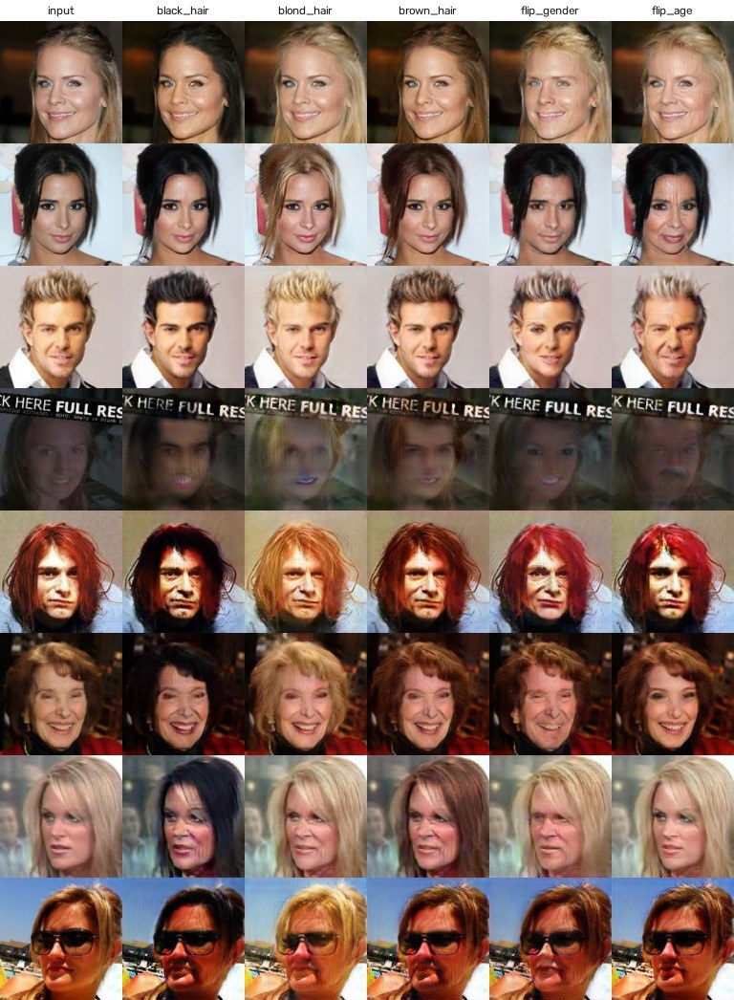
CelebA test 图上的 5 个单属性编辑（输入 + 黑 / 金 / 棕发 + 性别翻转 + 年龄翻转）。 第 4 行是一张很暗、上方被文字占满的低质量图，编辑基本失败；第 1、7 行可以看到"变黑发"连带把肤色也调深了——CelebA 里发色和肤色、妆容高度相关，G 把它们一起学了进去。任意照片（LFW 250×250）上的 edit_photo。 原属性由 D 的分类头估计：5 个人的性别和年龄都估对了，但三种发色全部判为 0（白发、灰发本来就不在这三类里；Jolie 和 Serena 的深色头发也没有超过 0.5 的阈值），这时"变某种发色"仍然有效，只是没有"原发色"可以清零。年长→年轻的变化（第 1、3、5 行最后一列）明显弱于反方向；"变金发"时肤色也被调浅，头部周围偶尔能看到一圈淡淡的光晕（蒙版内背景被轻微改动）。CPU 速度（4 个线程，测量时 CPU 正被其它任务占用，偏慢）：G 处理一张 128×128 约 0.2 秒；一张 250×250 的照片做一个编辑（含检测、D 估计属性、G、贴回）约 0.76 秒，一次做 5 个编辑约 1.4 秒（5 个编辑拼成一个 batch，检测和对齐只做一次）。
要点 10 扩散模型：为什么今天的主角换了。 扩散模型（DDPM 2020、Stable Diffusion 2022）走的是另一条路：先定义一个"加噪"过程，把真图一步步加高斯噪声直到变成纯噪声；再训练一个网络学"去噪"——给它一张加了噪声的图和步数 t，预测加进去的噪声。生成时从纯噪声出发，反复去噪几十步得到图像：
x t = α ˉ t x 0 + 1 − α ˉ t ϵ , ϵ ∼ N ( 0 , I ) , L = E x 0 , t , ϵ [ ∥ ϵ − ϵ θ ( x t , t ) ∥ 2 2 ] x_t=\sqrt{\bar\alpha_t}\,x_0+\sqrt{1-\bar\alpha_t}\,\epsilon,\quad \epsilon\sim\mathcal{N}(0,I),\qquad
\mathcal{L}=\mathbb{E}_{x_0,t,\epsilon}\Big[\big\lVert\epsilon-\epsilon_\theta(x_t,t)\big\rVert_2^2\Big] x t = α ˉ t x 0 + 1 − α ˉ t ϵ , ϵ ∼ N ( 0 , I ) , L = E x 0 , t , ϵ [ ϵ − ϵ θ ( x t , t ) 2 2 ] 它在画质和多样性上超过 GAN，主要有三个原因：(1) 损失是普通的回归（预测噪声），没有两个网络的博弈，训练稳定，模型和数据可以一直放大；(2) 它要覆盖整个数据分布，不会像 GAN 那样"模式崩溃"（只会画几种讨好 D 的脸）；(3) 文本、草图、蒙版等条件都可以方便地接进去（classifier-free guidance），编辑能力强（如 SDEdit、InstructPix2Pix）。代价是慢：要几十次前向，GAN 只要一次。所以实时美颜、视频特效这类对速度敏感的场景至今还常用 GAN 或"蒸馏成一步"的扩散模型。
结论 GAN 的核心是"对抗"——用一个可学习的判别器代替手写的损失函数；StarGAN 在此之上加了"条件 + 分类 + 循环一致"，用一个网络完成多种属性编辑。
代码精读
代码 1 facevision/gan/stargan.py：标签怎么"告诉"生成器 网络结构逐层照搬官方实现（层的顺序、参数名都一致），因此官方 200000-G.ckpt 能 strict=True 加载，一个参数都不多、不少。条件输入只有两行：
def forward(self, x, c):
# c: (B, 5) -> (B, 5, 1, 1) -> 复制成 (B, 5, H, W) 的常数图
c = c.view(c.size(0), c.size(1), 1, 1).repeat(1, 1, x.size(2), x.size(3))
return self.main(torch.cat([x, c], dim=1)) # 3 + 5 = 8 个通道 G 是"编码器（2 次下采样到 32×32）→ 6 个残差块 → 解码器（2 次转置卷积回到 128×128）→ tanh"，共 843 万参数；D 是 6 层步长为 2 的卷积（128 → 2×2，2048 通道），共 4476 万参数，大头在最后那层卷积。
代码 2 tools/train_stargan.py：训练一步 c_trg = c_org[torch.randperm(c_org.size(0))] # 随机目标 = 打乱后的真实标签
# ---- D: WGAN-GP + 认属性 ----
out_src, out_cls = D(x_real)
d_loss_real, d_loss_cls = -out_src.mean(), classification_loss(out_cls, c_org)
with torch.no_grad():
x_fake = G(x_real, c_trg) # 这一步不更新 G
d_loss_fake = D(x_fake)[0].mean()
alpha = torch.rand(x_real.size(0), 1, 1, 1, device=device)
x_hat = (alpha * x_real + (1 - alpha) * x_fake).requires_grad_(True )
d_loss_gp = gradient_penalty(D(x_hat)[0], x_hat)
d_loss = d_loss_real + d_loss_fake + lambda_cls * d_loss_cls + lambda_gp * d_loss_gp
# ---- G: 每 n_critic=5 步一次 ----
x_fake = G(x_real, c_trg)
out_src, out_cls = D(x_fake)
x_rec = G(x_fake, c_org) # 改回原属性
g_loss = -out_src.mean() + lambda_rec * (x_real - x_rec).abs().mean() \
+ lambda_cls * classification_loss(out_cls, c_trg)梯度惩罚要对 D 的输入求导，而且这个导数本身还要再对 D 的参数求导（二阶导），所以 torch.autograd.grad 要加 create_graph=True。数据直接从 parquet 读：先打乱 row group 的顺序，再在 16 个 row group 的缓冲区内打乱，内存占用小。
本项目只做了一次"健全性检查"式的短训练：从随机初始化开始，batch 8，600 步，Intel Arc 核显（和其它任务共用，约 2 秒一步）。官方模型是 batch 16 训练 20 万步（约 20 个 epoch），我们的结果全部使用官方权重。
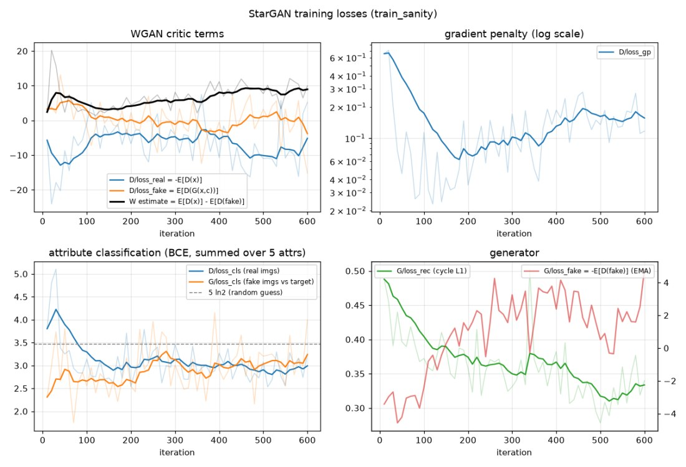
从头训练 600 步的损失（浅色为每 10 步的平均，深色为滑动平均）。 梯度惩罚从 0.66 在 180 步内降到约 0.06，再缓慢回升到 0.15～0.18；Wasserstein 估计先回落到约 3.2，之后随 D 变强升到约 9；D 的分类损失降到 3.0 左右，低于随机猜测的 5 ln 2 ≈ 3.47（虚线）；循环重建 L1 从 0.49 稳步降到约 0.33。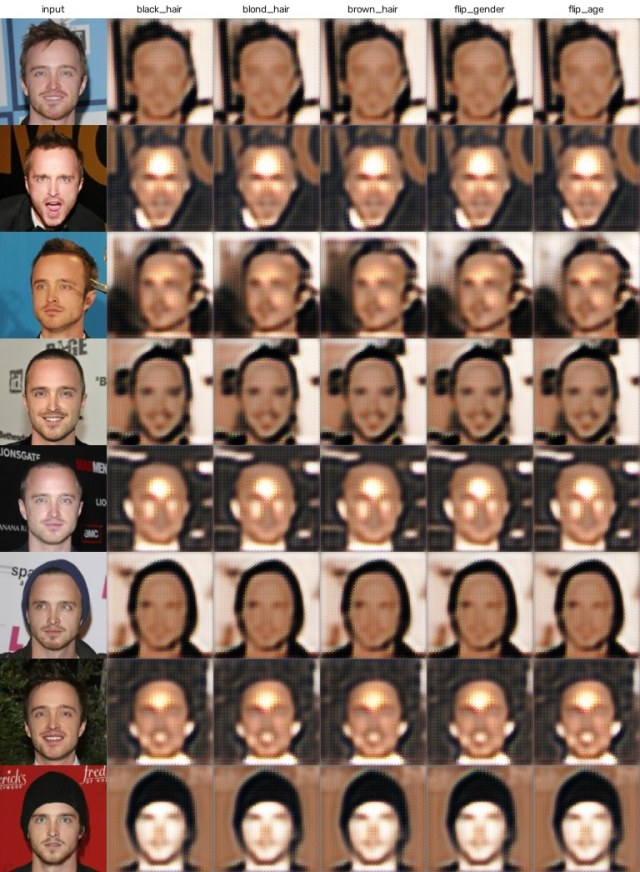
600 步时的样图：只学会了"模糊地复制输入"。 这时只看过 4800 张图（训练集的 3%），G 先学会了最容易的重建，属性几乎还改不动，还能看到转置卷积特有的棋盘格纹理。（这 8 张恰好是同一个人：parquet 的行按身份聚在一起，脚本现在改成每隔 50 行取一张。）结论 判断 GAN 训练是否正常，不能看某条损失有没有"降到 0"——对抗损失本来就不会收敛到 0。要看的是：梯度惩罚保持在小值、Wasserstein 估计不爆炸、分类损失低于随机水平、重建损失持续下降，同时定期看样图。
易错点 在 torch-xpu 2.15 上，用设备端 torch.randperm(..., device="xpu") 做索引会让核显报 DEVICE_LOST。改成在 CPU 上打乱再搬到设备后就正常了（官方代码本来也是这么做的）。
代码 3 use_instance_stats：一个能让重建误差翻倍的陷阱 推理时习惯写 G.eval()。但 StarGAN 的 InstanceNorm 打开了 track_running_stats：train 模式下用"这张图自己的均值方差"，eval 模式下改用训练中累计的平均值。官方训练和测试都一直处于 train 模式，那些平均值从来没参与过计算。
def use_instance_stats(model):
for m in model.modules():
if isinstance(m, nn.InstanceNorm2d):
m.track_running_stats = False # eval() 时也用单张图自己的统计量
m.running_mean = m.running_var = None
return model实测（同样 200 张 test 图，用原标签做重建）：用单图统计量时 L1 = 0.095，直接 G.eval() 时 L1 = 0.229，误差是 2.4 倍，图像出现明显的偏色、发糊和棋盘格。
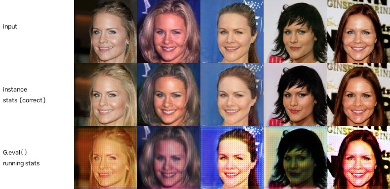
同一个网络、同一份权重，只差一个 eval()。 上：输入；中：单图统计量（与训练时一致）；下：改用 running stats 后的输出。易错点 加载别人的权重时，前向方式必须和训练时一致。带 BatchNorm / InstanceNorm 的网络尤其要查 track_running_stats 和 train / eval 模式。一个快速的自检：用原标签做重建，误差应该很小。
代码 4 edit_photo：贴回原图 face, A = warp_to_crop(img_bgr, kps) # A: 原图 -> 128 输入 (2x3 仿射)
outs = self.edit_many(face, edits) # 一次 batch 做多个编辑
inv = dict(dsize=(w, h), flags=cv2.INTER_LINEAR | cv2.WARP_INVERSE_MAP, borderValue=0)
mask = cv2.warpAffine(ellipse_mask(), A, **inv)[..., None ] # 羽化椭圆, 逆变换回原图
delta = o.astype(np.float32) - face.astype(np.float32) # G 改了什么
res = img_bgr.astype(np.float32) + mask * cv2.warpAffine(delta, A, **inv)WARP_INVERSE_MAP 表示"A 是原图到小图的矩阵，请按它的逆把小图铺回原图"，不用自己求逆矩阵。人脸很大时（缩放比 < 0.75），对齐前先用 INTER_AREA 把原图缩小，避免双线性缩小产生锯齿。编辑可以写预设名（"blond_hair"、"flip_male"、"flip_young"），也可以写字典（{"Blond_Hair": 1, "Male": "flip"}）。
代码 5 tools/eval_stargan.py：自己算 FID pytorch-fid 0.3.0 自带的 calculate_frechet_distance 调用了 scipy.linalg.sqrtm(..., disp=False)，而 scipy 1.18 删除了 disp 参数，一调用就报错。我们只用它的 Inception 网络提特征，距离自己算：
def frechet_distance(mu1, s1, mu2, s2):
w, v = np.linalg.eigh(s1)
r = (v * np.sqrt(np.clip(w, 0, None ))) @ v.T # r = s1 的平方根 (对称)
eig = np.linalg.eigvalsh(r @ s2 @ r) # 与 s1·s2 的特征值相同
tr_covmean = np.sqrt(np.clip(eig, 0, None )).sum() # = Tr((s1·s2)^(1/2))
diff = mu1 - mu2
return float(diff @ diff + np.trace(s1) + np.trace(s2) - 2 * tr_covmean)验算 在随机数据上与 scipy.linalg.sqrtm 的结果相差 3×10⁻¹¹。s1·s2 不是对称矩阵，直接开方数值上容易出复数；换成对称矩阵 r·s2·r 再求特征值就稳定了。
例题
例题 1 FID 手算 真实特征服从二维高斯 N((0,0), diag(1,4))，生成特征服从 N((3,4), diag(4,1))，求 FID。
均值差的平方：3² + 4² = 25。两个协方差的迹都是 5。两个对角矩阵相乘还是对角矩阵 diag(4, 4)，开方得 diag(2, 2)，迹为 4。
F I D = 25 + ( 5 + 5 − 2 × 4 ) = 27 \mathrm{FID}=25+(5+5-2\times 4)=\boxed{27} FID = 25 + ( 5 + 5 − 2 × 4 ) = 27 结论 FID 由"均值差"和"形状差"两部分组成。即使均值完全相同，两个分布方向不同的椭圆也有距离（这里形状差贡献了 2）。一维时 N(0,1) 与 N(1,4) 的 FID = 1 + 1 + 4 − 2×2 = 2，frechet_distance 的计算结果也是 2.0。
例题 2 刚开始训练时，损失应该是多少 网络刚初始化时，D 的属性 logits 都约等于 0，梯度也几乎为 0。估计 D/loss_cls 和 λ_gp·D/loss_gp。
logit 为 0 时 sigmoid 输出 0.5，不论标签是 0 还是 1，每个属性的交叉熵都是 ln 2；5 个属性求和：
L cls = 5 ln 2 ≈ 3.466 , λ gp L gp = 10 × ( 0 − 1 ) 2 = 10 \mathcal{L}_{\text{cls}}=5\ln 2\approx\boxed{3.466},\qquad
\lambda_{\text{gp}}\,\mathcal{L}_{\text{gp}}=10\times(0-1)^2=\boxed{10} L cls = 5 ln 2 ≈ 3.466 , λ gp L gp = 10 × ( 0 − 1 ) 2 = 10 验算 用刚初始化的网络（batch 16）试跑，前 5 步的平均值 D/loss_cls = 3.462、D/loss_gp = 0.996，与估计吻合。之后梯度惩罚很快降到 0.1 以下，说明 D 的梯度范数被拉到了 1 附近；分类损失降到 5 ln 2 以下，说明 D 开始"认属性"。
易错点 刚开始的损失明显偏离这些值（比如分类损失是 30），通常是标签格式错了（如用了 −1/1 而不是 0/1），或图像没归一化到 [−1, 1]。
例题 3 构造目标标签 一位棕发年轻女性，c' = (黑, 金, 棕, 男, 年轻) = (0, 0, 1, 0, 1)。求"变金发并翻转性别"和"变黑发并变老"的目标标签。
发色三选一：设金发为 1 时，黑发、棕发自动置 0；性别取反 0 → 1；没提到的"年轻"保持原样。
c 1 = ( 0 , 1 , 0 , 1 , 1 ) , c 2 = ( 1 , 0 , 0 , 0 , 0 ) c_1=\boxed{(0,1,0,1,1)},\qquad c_2=\boxed{(1,0,0,0,0)} c 1 = ( 0 , 1 , 0 , 1 , 1 ) , c 2 = ( 1 , 0 , 0 , 0 , 0 ) make_target 的运行结果相同。易错点：没提到的属性一定要填原值。如果把她的"年轻"误填成 0，G 会在改发色的同时把她变老——StarGAN 会"执行"标签里的每一维。所以任意照片要先用 D 的分类头估计原属性。
例题 4 坐标换算：对齐图上的左眼在网络输入的哪里 CelebA 对齐图（178×218）中左眼平均位置 (69.58, 111.59)。经过 CenterCrop(178) 和 Resize(128) 后，它在 128×128 输入中的坐标是多少？
裁剪去掉上方 (218 − 178) / 2 = 20 行，y 减 20；再缩放 r = 128/178 ≈ 0.7191。按像素中心对齐（PIL 的约定），x' = (x + 0.5)·r − 0.5：
x ′ = ( 69.58 + 0.5 ) × 0.7191 − 0.5 = 49.89 y ′ = ( 111.59 − 20 + 0.5 ) × 0.7191 − 0.5 = 65.72 ⇒ ( 49.89 , 65.72 ) \begin{aligned}
x'&=(69.58+0.5)\times 0.7191-0.5=49.89\\
y'&=(111.59-20+0.5)\times 0.7191-0.5=65.72
\end{aligned}
\qquad\Rightarrow\qquad\boxed{(49.89,\;65.72)} x ′ y ′ = ( 69.58 + 0.5 ) × 0.7191 − 0.5 = 49.89 = ( 111.59 − 20 + 0.5 ) × 0.7191 − 0.5 = 65.72 ⇒ ( 49.89 , 65.72 ) crop128_matrix 给出的也是 (49.89, 65.72)。延伸：一张照片里两眼相距 50 像素，而标准位置两眼相距 108.26 − 69.58 = 38.68 像素，所以"原图 → 128 输入"的缩放比为 38.68/50 × 0.7191 = 0.556，贴回时要放大约 1.8 倍。这正是 residual 贴回更清晰的原因：只有"变化量"被放大，原图细节不动。
专题十二 系统集成：把所有模块拼成一个应用Gradio 界面、实时视频流水线、懒加载、性能分析 阶段四的目标：把识别和特效整合成一个有界面、能接摄像头的系统，并在 CPU 上达到实时。本章讲 app/gradio_app.py 和 tools/realtime_demo.py 的设计。
知识要点 1 系统结构 2 懒加载 3 实时视频 4 性能预算 5 可复现 代码精读 gradio_app.py 例题 帧率预算 知识要点
要点 1 系统结构。 facevision/ 是算法库（检测、对齐、识别、特效、3D、GAN 各自独立，互相只通过 numpy 数组和简单的数据类交换数据）；tools/ 是命令行脚本（评测、训练、量化、演示）；app/ 是界面。界面只调用库，不包含算法——这样同一套算法既能被网页用，也能被命令行、单元测试、以后的手机 SDK 用。
要点 2 懒加载与缓存。 界面启动时一个模型都不加载，第一次点到某个功能才加载对应模型（functools.cache 保证只加载一次）。启动快、内存省，也避免一个模块的依赖问题拖垮整个界面。
要点 3 实时视频的流水线。 摄像头每帧：MediaPipe 检测 478 个点 → One Euro 滤波去抖 → 按勾选顺序叠加特效 → 显示。Gradio 的摄像头组件以流的方式每 50 ms 发一帧到后端；tools/realtime_demo.py 则直接用 OpenCV 读摄像头，延迟更低，适合测帧率。
要点 4 性能预算。 30 FPS 意味着每帧只有 33 ms。要把这 33 ms 分给"检测/关键点 + 每个特效 + 编码显示"，任何一步超时都会掉帧。实测数据见下面的例题和专题九。
易错点 模块单独测得快，拼起来未必快。本项目的 5 个 ONNX 模型单独测加起来约 200 ms，串成流水线却要 2122 ms。原因是 ONNX Runtime 的线程干完活后默认空转等下一个任务，5 个模型各有一组线程在空转，互相抢 CPU。在 facevision/onnx_utils.py 里关掉空转（session.intra_op.allow_spinning = 0）后降到 99 ms，快了 21 倍，单个模型的速度不受影响。所以性能要测端到端，分项数字加起来对不上时一定要追查。
要点 5 可复现。 scripts/download_assets.py 一键下载所有模型和数据集；tools/env_check.py 生成环境报告；Dockerfile 固定运行环境；每个评测脚本把结果写成 JSON。任何人拿到仓库都能得到同样的数字。
代码精读
代码 1 app/gradio_app.py：一个标签页的完整写法 @functools.cache
def analyzer() -> FaceAnalyzer: # 懒加载 + 只加载一次
return FaceAnalyzer(modules=("landmark_106", "recognition", "genderage"))
def verify_tab(img1, img2):
embs = []
for img in (img1, img2):
faces = analyzer().analyze(rgb2bgr(img), max_num=1) # Gradio 给的是 RGB
embs.append(faces[0].embedding)
sim = float(np.dot(embs[0], embs[1])) # 已归一化, 点积 = 余弦
return ("同一个人" if sim > THRESH else "不是同一个人"), sim
with gr.Tab("1:1 人脸验证"):
v1, v2 = gr.Image(label="照片 A"), gr.Image(label="照片 B")
gr.Button("比对").click(verify_tab, [v1, v2], [out_img, out_txt])阈值 THRESH 直接读 LFW 10 折评测得到的平均阈值，而不是拍脑袋写一个数。
例题
例题 1 实时帧率预算 640×480 摄像头画面，CPU 上逐帧处理，每帧预算 33 ms（30 FPS）。实测各组合够不够？
结论 MediaPipe 关键点约 7 ms 是大头，美颜美妆全开约 14 ms，仍在 33 ms 预算内，留出了摄像头采集和显示的时间。如果要再叠加完整的检测 + 识别流水线（实测约 100 ms/帧），就要降低识别频率（例如每秒只识别一次、其余帧跟踪），这正是实际产品的做法。
必背清单 必背清单公式 · 答辩/面试标准答法 · 常见失分点 把整个项目压缩成一页：公式背下来能推，问答背下来能讲，失分点背下来能避坑。
公式
答辩 / 面试标准答法
常见失分点
BGR / RGB 搞反、HWC / CHW 搞反、归一化参数用错：程序不报错，准确率悄悄掉。每接一个新模型都要和参考实现逐元素对拍。
训练和测试用不同的对齐方式（或不同的模板），准确率掉几个点。
在测试集上选阈值、选 epoch、调超参数——结果虚高。
Umeyama 用 det(Σ) 判断镜像，点数少时会漏判。
ArcFace 的 θ + m 超过 π 后 cos 不再单调，需要线性兜底，否则会"奖励"错得离谱的样本。
NMS 阈值过低会误删合影里挨着的两张脸；检测阈值过高会漏掉被画面边缘切掉的脸（补边可解）。
动态量化对卷积网络几乎无加速，要用静态量化；量化后一定要在验证集上重新测精度。
非结构化剪枝后模型大小和速度都不变（稀疏矩阵仍按稠密存储计算），要么用结构化剪枝，要么配合稀疏推理引擎。
Windows 路径过长、OpenCV 5 不带 Haar 文件、ONNX 模型 batch 固定为 1——环境问题报的错往往不是真正原因。
数据集人物与测试集重叠（如 MS-Celeb-1M 和 LFW 有重叠人物）会让准确率虚高，要做去重或换不重叠的训练集。